The Peak: playtest notes
Parker and Dan playing the solo mode, Thursday 11-12, evening. Notes taken by the Second Director as they come in. Newest at the bottom. Pictures are Parker's, from the stream.
The rule for tonight (Parker, 21:53): "dont make the fixes yet, we will have a ton of them to work on all at once, we are just making the HTML and taking notes."
So this page is notes, causes and a plan. Nothing is being changed in the game.
Update, 22:01: Parker asked for a thread to work on what is in this page so far. The session "Peak playtest fixes, notes 1 to 11" did notes 1 to 11 on the branch luchador-ui and has finished: all eleven are changed and seen in the running game, by its test climber, not by a person playing. Notes from 12 on stay here and are not sent to it until Parker says. The states below are current.
What "fixed, seen in the game" means below: the thread made the change on the branch luchador-ui and took pictures of it in the running game, which I have looked at. It is not merged into main, not in any build, and neither of you has played it. The pictures marked "after" are the thread's, not from the stream.
Where each note stands
Notes 1 to 11: done by the thread, on the branch, not merged or built, not played. Notes 12 to 56: sent to the thread at 23:53 on Parker's word ("have the session get to work"). Their chips below still say "not sent"; read that as "sent, not started" until the thread reports.
Notes 58 and up are new since the thread was sent its batch, and wait for Parker's word.
01:06: Parker stopped the thread, because the design work below will change how things look and what they are built from. 01:11: he set it back to work on four things only: the water overhaul (note 22), rope physics (note 20), the camera controls (notes 28 and 43) and the garden's sound (note 35). 01:12: and the barrels (note 21), since it was already on them. Every other unfinished note is parked, and all of it is kept on the to-do list.
The plan so far
For the big pass after the session. Order is by how much each one hurts the play, then by size.
- Camera (note 7). It touches every minute of the climb. One rule over the whole mountain instead of redoing 111 camera zones. Two numbers for Parker to agree. Small in code, needs before and after pictures.
- The small mine fixes (notes 1, 3, 5, 8, 10, the track end of 6, the gap of 9). Written and parked. Left to do: look at each in the game and take a picture.
- Hanging lines (note 4). A first try is parked (a timber head frame in place of the two cables). It needs a look in the game before anyone trusts it.
- Cave-in rocks leave by a broken board (note 9). New small mechanic plus one prop. Medium.
- Falling cart becomes a real falling thing (note 6). Medium to large: a moving piece has to hand itself over to physics with you possibly still holding it.
- Water (note 2). Splashes first (small: Del Mar's drop in as they are), then the surface (medium to large: 14 pools seen from the side, and the frame rate to check). Needs Parker's colour call.
The to-do list: everything not done yet
Parker, 01:12: "make sure the not done stuff stays on the to do list". Nothing leaves this list until it is done and seen in the game.
The order of work (Parker, 11-13, second round): "Nothing fixed yet except what we have done already. We will finish the playtest and re design first". And all building waits too: nothing new is built or modelled until the playtest and the redesign are done. So everything below that is not already with the thread stays where it is.
Changed late on 11-13, with the playtest finished and the designs written: asked what may start overnight, Parker picked "Docs, models and fixes". So the modelling run and the fixes begin once the design docs are complete, on the branch, each with before and after pictures. Biomes 0 to 6: "Build them as designed". Nothing is pushed, and main moves only on his word.
| Where it stands | Notes |
|---|---|
| With the thread now (Parker's five are all done: the barrels 21, rope physics 20, the water 22, the camera controls 28 and 43, the garden's sound 35) | 72 the lever that starts the cart, asked for as part of the station test (Parker, 11-13: "build section 0.1-0.2 as a test attempting for it to be completely game ready") |
| Sent to the thread, parked, not started | 12 a dark chimney for the cave-in rocks; 18 rings fixed to the wall; 25 the dam's one elevator; 29 the geode faster; 34 ring spikes pop in and out; 36 mushroom bounce animations; 37 scenery mushrooms pushed back; 38 the spore updraught made visible; 44 two warts on the giant mushroom; 49 harder gears; 50 only the middle censer; 54 the first achievement; 57 the bellows' animations |
| Waiting on a new model (requests are being listed, not yet sent to any maker) | 19 the gate pistons; 23 the hot-joint warning plate; 26, 30, 33 the crystal cave's pieces in pale purple; 32 the crystal bonsai; 37 spotted bouncy caps; 41 the mushroom hut and frog; 42 the giant mushroom; 46 the great cap; 47 the mask's carved features as its holds; cracked models for the breakables (16, 24, 31, 53) |
| Never sent to the thread | 58 the dynamite rung; 59 the blacksmith's hut and frog; 60 a frog in every area; 61 half the rings in the updraught shaft; 62 the vents' grates made readable; 63 all vents 10% stronger; 64 the chockstone; 65 the dead tree's branches; 66 the broken rope bridge; 67 the "!" sign; 68 the tea cave and frog; 70 the tail wind's reach; 71 the Sump's frog cave; 73 the cart's real hop; 75 the statues' broken arms; 76 the low station's wheel: its unseen rim and spoke ends; 77 the low station's roof that can't be held, and the gondolas' unseen rails; 78 a crunch knocks you out (the pylon's sheave; one rule with the gears of 49); 79 El Cable: the cable out, one long jump; 80 the flying chairs' hanger poles become background; 81 El Pilón: the brace and the rung out, wheel to wheel; 82 the zip line goes all the way to the deck; 83 between two moving things, the higher one or the one with more limbs on it keeps you; 84 cold holds: the limb's button mark shivers harder until the hand lets go; 85 icicles that hold longer, and an arrow on the ledge of 9.2; 86 falling icicles shatter on the floor and grow before they fall; the lower crevasse redesigned; 87 the ice cave: the frozen climbers must read as the way up (the ice in front of them is already moved, on the branch); 88 the serac falls all the way and shatters in the pit, and the next one grows into place; 89 wind made far more obvious, everywhere; 90 the ankle fix on the wrists (for the Top Dog session: it is the climber's own code); 91 the avalanche's slabs kicked into the background at the rope's foot; 93 and they come out of a hole in the wall at the top of the chute; 94 the storm ridge's first ledge: a little cabin with a frog in it; 95 the lightning mast made readable (metal and wood, sparks before the strike, a seen bolt); 96 the weather balloon: one rope; 97 the summit's first ledge: a little tea shop with a frog; 98 the summit's six ring ropes are invisible: a model for each, and the ring made readable from the shelf; 99 the last leap: the breaking plank out, the ring up level with the post's top; 100 the bell rope actually rings the bell, and the bell swings; 101 the ending: belt held high, turning, rising, fanning lights, an orchestra; 102 west of the peak: a breakable wall, a hot spring full of frogs, a water slide to the bottom; 103 the cart room reworked: a fast plunge and a jump to a chain on a ring, more rings, beams' undersides not held |
| Decided by Parker on 11-13, not yet sent to the thread | 6 one real chain, in rusty red, moved out past the track's end; 7 a tool tip at the nine long jumps, bottom right: "Hold [key bind] to widen the camera" (this replaces the wider view); 13 La Cortina's holds become iron staples; 25 the dam's lift goes straight up a shaft, and always sinks; 26 truly slanted crystal shafts, with the six flings re-laid; 49 gears twice as fast, and the mesh knocks you out; 52 all eight more pits lined; 54 both altars count, and F farts on the keyboard; 74 La Columna's collars, as drawn ("Yes, build that"); 28 two rows for the camera controls on the Controls board, behind a Next page button |
| Left over from notes that are otherwise done | 31: breaking pieces should be shards, not chunks (and by material everywhere, 65); 40, 92: the storm ridge's six clouds look bad: out, and painted cloud behind the towers in the area's design; 52: eight more pits found and not changed; 53: the altar's east wall has not been tried with the faster cross; 55: the banner's quiet time goes from 15 to 40 seconds (decided 11-13); and my own HUD test has not been run on it; 22: the water: the new method (spring surface, droplets as one inked shape) is the direction, "water looks way better"; to be built |
| The design job | Area and background design: only the test diorama exists; biome sheets, the joins and every area are still to do |
What Parker liked
- The temple's great mask (note 47): "it looks great other than interacting with it".
- The mushroom garden's rest ledge (note 41): "this area is cute".
- Challenge 7.8, the vulture, the horn and the tail wind (note 69): "ok overall that is a good puzzle".
Calls waiting for Parker
Parker has answered every call that can be answered from pictures: on the morning of 11-13, and in a second round that afternoon (see Parker's answers, 11-13). What is left here needs his eye, ears or hands in the game.
- The ropes (note 20): four calls. The swing is slow (8 seconds there and back); every rope now reaches two to three times as far, so some flings became plain swings; the winds carry a light rope far out; and climbing a rope is slower. They are set out under note 20.
- The garden's sound (note 35): changed, but nobody has listened. See note 35.
- The camera's controls (notes 28 and 43): in, but a pad under Steam is untried, and nothing was tried by hand. See note 28.
- Camera numbers (note 7): widest view 11 m of height, looking at most 1 m below you. Right, closer, or further?
- The light under the mill race (note 17): the thread could not make it pulse. It changed the likely cause; is it gone when you swim it?
Parker's answers, 11-13
A second round, the afternoon of 11-13, asked one by one with before and now pictures: the station test passed ("Yes, build on"); the plaza's painted ranges and Peak pass, and Del Mar's hills pass; the valley is "MUCH better" and gets more little houses and trees, nicer ground and a less square town; the sea of cloud is "Too busy"; an area's own background is settled when that area is built; the water is "Still not water" (22); La Columna's collars: "Yes, build that" (74); a tool tip at the nine long jumps (7); two rows and a Next page button on the Controls board (28); the lift is "Fine for now" (4); the storm ridge's clouds: "Decide when I play it" (40). And the order of work: "Nothing fixed yet except what we have done already. We will finish the playtest and re design first", with all building waiting too.
Asked one by one on the morning of 11-13. His exact words for every answer are kept in docs/peak/playtest/design/ANSWERS.md. Nothing here has been sent to the fix thread: that waits for his word, as before.
Two standing things he said:
- "whatever works, you have complete authority to arrange and even move geometry in play space a bit." So the designs may now move a hold or a ledge a little where a place needs it. Each such move is listed on its design page as a change to the course.
- "If it is in the play space you should generally be able to hold it. That is more telling than the color". This is now the mountain's second rule: where a thing stands tells you more than its colour, and scenery stays out of the play space.
Changes to the play that came out of the design questions (new notes below):
- 72: pull the lever to start the cart.
- 73: the cart really hops a broken rail, with dust off its wheels as it lands.
- 74: La Columna's three rings become collars that wrap round the column.
- 75: the hall of statues: broken arms, with only hands left to hold.
Settled in the notes they belong to: 2 the water stays tinted; 6 one real chain, moved out, and the chain wins; 7 a tool tip at the nine long jumps, bottom right: "Hold [key bind] to widen the camera" (this replaces the wider view); 13 La Cortina's holds become iron staples; 21 the barrels keep their two swims; 25 the dam's lift goes straight up a shaft and always sinks; 26 truly slanted crystal shafts; 30 needles hold at the point only; 34 ring spikes make it harder; 49 gears twice as fast, and the mesh knocks you out; 52 all eight more pits; 53 he will find out about the altar's wall himself; 54 both altars, and F.
Design answers (applied to the biome sheets and to every area page):
- The station may be completely reworked. A few Missing posters, pixel art made from geometry like the lock-in money. The frog sits in plain sight. The step at the mine's door stays, with a sill.
- The mine: background timber greyer and cooler, honey wood always a hold: yes. The waterfall is seen only where it really is. The bucket lift stays plain.
- The black waters: no rule that green pipe is scenery (the play space rule replaces it). No rule about round arches. Under the well, one fallen thing from each place above: yes.
- The crystal cave: purely natural, with no temple work. Pale rough lilac holds, indigo glass doesn't: yes. Keep the Prism's rainbow.
- The mushroom garden: a second kind of mushroom for scenery. The frog's hut has a solid roof.
- The temple: a jade band round everything that moves: yes. No carved figures showing how a challenge is done ("I like the idea but naw we won't do that").
- The chimney: the belt's forge: yes. Red at the bottom to daylight at the top: agreed. Only the frog in the smith's hut, which is stone and iron. A box of dynamite behind the rungs: yes.
Area and background design
What this is (Parker, 00:51): the game "looks way too block out ish. Unfinished." So the whole mountain is split into its small places, over 100 of them: the 111 challenges and the spots between. Each is designed as "a little diorama basically. A full little 3d scene that makes sense", one by one.
Three layers in every place:
- Background: what stands behind the climb. It has to play into the play space naturally, "like the ladder with it's rungs": what you hold should be part of something real that carries on behind it.
- Play space: what you touch.
- Foreground: what stands in front, "which should be very sparse". The mine's arch is the model: you pass through it, with a post behind you and a post in front.
Biome first, then each area (Parker, 01:05): "each area needs to thematically fit and the challenges should share a general archectural style, reusing assets at times too. So the entire biome must be considered first, then each area. And the transitions between biomes needs care to look correct."
- A biome is one of the mountain's twelve big parts: the station, the mine, the black waters, the crystal cave, the mushroom garden, the temple, the chimney, the cliffs, the cableway, the glacier, the storm ridge, the summit.
- Each biome gets its own sheet before any of its areas are designed: what the place is and was, its way of building (materials, how things are joined, its shapes), its colours and light, how it shows "you can hold this", "you can't" and "this is scenery", and its shared kit: the set of pieces that every area in it is built from and reuses.
- Each join between two biomes gets its own design too, so one turns into the next in a way that looks right.
- Then the areas, each drawn from its biome's kit, with new pieces only where an area truly needs its own.
Design only for now. "The final modeling will not happen until we finish the full mountain play test."
What one design holds: the place in a paragraph, what must not change about the play, two scale sketches (from the side, and from above to show depth), the three layers listed, how the background explains each thing you touch, and the list of pieces to model later. Each place gets its own page, linked here. Tonight's notes are folded into the place they belong to.
The design run (Parker, 01:12): "start the design run, on every biome we have playtested and finished. So not the last one we were on, just all the way up to it". That is seven biomes: the station, the mine, the black waters, the crystal cave, the mushroom garden, the temple and the chimney. The cliffs and everything above wait.
Each biome has its sheet first, then a page for each of its areas, and a page for each join between two biomes. Every page has the same parts as the test you called "Well done" (El Derrumbe, which is now part of the mine). The pages are built by design/build.py from the data files in design/data/, and the sketches are drawn from the course files' own numbers.
Every question the designs ask you, in one list
- 3.9 La Columna: Is this how La Columna should play: three collars hanging askew in a zigzag, each carrying pairs of spikes up and across the front of the column, with a change at each corner and a short horn at the top?
What the designers found in the course while drawing it (nothing fixed, nothing sent to the thread)
Each of these was read from the course files' numbers by the helper that designed that biome. I have not checked them one by one in the game. They are here so they are not lost: tell me which you want looked at, and whether any should go to the fix thread.
The station and the ride
- A slab of the mountain's east face pokes into the cart tunnel's mouth, about 1.4 m above the rail. A standing rider may hit it.
- The tunnel's floor is 0.6 m higher than the mine's first gallery at the door, and the mine's first rail piece is buried in the tunnel's floor.
- The challenge list has a barrel at the crates, a broken rail the cart jumps, and a gap that shows the waterfall cavern. The course has none of the three. The designs place the broken rail just past the crest and the gap near the end of the ride.
- The challenge list says grabbing the red brake lever lets the cart roll. In the course the lever is scenery; only getting in starts the cart.
The mine
- Scenery in hold-coloured timber or iron sits inside the play space, where it looks like something to grab: posts above the gallery beams and on top of each of Las Vigas, slanting braces under the plank walk and the wheel's staging, the cart in the mud pit, and an ore crate on the upper gallery that reads as a step.
- Five lanterns hang in open air with nothing above them. Three more hang close to things you take: about a metre from the ribs of Vetas de Lodo, just outside the winding wheel's rim, and between the rope and the wall on La Cortina.
- A trestle by the cart track stands west of the pillar's face with only air under it.
- The gallery's bunting runs behind the foot of the broken ladder.
- The challenge list says the winding wheel is 3 m across; the course has 6 m.
- Note 6's open point still stands: the first chain can be taken from the boards without riding the cart.
- The Sump's west wall is a skin of rock 4 m thick with nothing behind it, so the frog's cave needs rock added round it.
The black waters
- The aqueduct's third launch ring sits inside the column where the mill channel's drain drops. Once the water pours (note 22), the fall would land on that ring.
- When a gate of Las Compuertas rises, open space is left under it. Note 19's plan says no gap should open; the design draws a fixed housing there, to be checked against the collision.
- In Contracorriente the three still patches lie upstream of each pillar, while the current runs the other way. The design explains them as slack water in side culvert mouths.
- A lantern hangs in the air between the three chains of Cadenas.
- The camera at the Charco is wider than one screen of the close camera.
The crystal cave
- Five scenery chandeliers hang behind the route on chains: thin hanging things near the climb. The design hauls them up tight under the roof.
- The knobs the chandelier chains hang from are glass that can't be held, and you can climb a chain up to them.
- The big scenery column behind the glass ceiling starts in mid-air. The design takes it down to the floor.
- The raft under El Prisma is a fifth moving thing nobody had named. The design makes it a temple sled on a slot.
- The glass slab of Techo de Vidrio is about 21 m long along its slope; 18 m is its level span.
The mushroom garden
- Things float with nothing holding them: the vine knot in Rebote Doble, all seven puffballs of Los Ojos, two spore pods under the bridge, a lantern by the first shelf, the root shelf at the bridge's west end, and the great cap at the well, which has no stalk at all. The designs give each a support.
- Two orange caps do not throw you: the soft old cap in Sombreros and the giant's crown. That cuts against note 37's rule that an orange cap you can reach throws you.
- The notes page says nine puffballs after note 45; the course has seven.
- The scenery mushrooms still stand only 1.6 to 2.8 m behind the climb, and a long stalactite hangs to head height by the bridge.
The temple
- The two counterweight chains of El Contrapeso go straight up from the slabs through two of the serpent's vertebrae, inside the play space. The design replaces them with a scale beam on the back wall.
- The temple drum overlaps the serpent's head.
- Each champion statue's east forearm is drawn but can't be held.
- Banners hang where they should not: one right beside the first censer's chain, one behind the serpent's last vertebra, and two in the altar chamber that go through its roof. A paper string hangs low over the entry floor.
- The two banner chains you catch at the second well crossing hang 0.5 m and 2 m past the end of the stone beam above them.
The chimney
- Many things hang in the air with nothing under them: the three anvils, the three stepping bellows, two of the grates, the slag pan, the four rungs, both chain rings, and the three rings across the head of the updraught shaft. The designs give each a support.
- The seated frozen climber at the anvil corner sits about half a metre above the floor.
- A thin bright slag drip hangs about a metre from the chain you must catch in Géiseres Gemelos, and could be taken for a second chain.
- The great iron mask's ring and its ledge do not line up with the mask's nose and mouth.
- The shaft of daylight passes under the top ledge, so it does not light the frozen climber there.
- From the picture with note 57, the great bellows looks hinged at the wrong end: widest at the nozzle.
How the run was done, and what was not checked. I wrote the seven biome sheets. One helper for each biome then wrote that biome's areas from its sheet, the worked example and a written brief, and checked its own side sketches as pictures. After Parker's answers of 11-13 I changed the sheets and the same helpers revised their areas. I looked at one to four side sketches from each biome on each pass and read a few areas of each in full; I did not read all 78 pages line by line. The from-above sketches were mostly not looked at as pictures by anyone. Where a design moves or adds something you touch, its page says so in a line beginning "Course change". Where a helper made a call Parker has not seen (the giant mushroom's cap turned dark rust, the spores pale gold, a stone belt held up by each champion statue, the winding wheel still turned by water), its page says that too.
The first test page is kept as it was: design/1_10_el_derrumbe.html.
The notes
Which build: both playtests (11-12, and notes 76 on, 11-13) were played on Dan's build, the same one throughout (Parker, 11-13: "we are on dans build which is the same one we started all play testing on"). Nothing fixed since the first night is in what they saw, so a note from the second playtest can be about something already changed on the branch; where that is so, the note says it.
Breaking planks in the mine come back with a glitch
21:39"the crumbling path things in the mines respawn with weird graphical glitches."
Fixed, seen in the game
What is going on
These are the four rotten planks in the plank bridge of challenge 1.3, Los Tablones (the grey crumbly ones in the picture under note 4). A plank breaks 1.2 seconds after you hold it and comes back 8 seconds later.
When it comes back, the game grows it from tiny to full size over a third of a second, with a little overshoot. The mistake: it grows from the mine's zero point, not from the plank's own middle. The planks sit about 180 m from that point. So the returning plank starts about 9 m from the zero point, flies some 170 m across the mine to its place, shoots about 18 m past it, and settles back. On screen that is a stretched plank streaking through the frame.
I read this from the code (stages/peak/peak_things.gd, the respawn in _tick_holds). I have not watched it happen, so if what you saw looks different from "a plank streaking in from the side", tell me.
Plan
- Grow the returning piece from its own middle. (Written, parked.)
- The same code runs every breaking hold: icicles, snow bridges, the brittle rock at the summit (seven of them). All of them have this glitch today and all get the fix.
- Still to do: a picture of a plank mid-return.
After (from the thread)
The thread measured the returning plank on every frame: its middle never strays more than 4 cm from its place. Breaking holds other than this plank (icicles, snow bridges, the summit's rock) use the same code but were not looked at.


Water should use Del Mar's shader and splashes
21:39"the water should use the water shader and splash effects we use in del mar"
First pass done, seen in the game; note 22 asks for more

What is going on
- The Peak has 14 pools and rivers: the Sump in the mine and 13 in Las Aguas Negras. Each is a plain see-through box with a pale strip for the surface. Rivers also carry white flecks so you can read the current.
- Falling in plays one splash sound and shows nothing.
- Del Mar's sea has the foam-circle surface, foam rings where things stand in it, ripple rings, and the splash: a fan of pale blobs, two rings and the sound.
Plan
- Splashes. Del Mar's splash can be thrown at any point, so it drops in as it is. Going in gets the full splash, climbing out a small one, and anything else that lands in water (broken plank pieces, barrels, boulders, the cart of note 6) gets one sized to it.
- Surface. Del Mar's surface is made for a sea you look down on. The Peak's water is seen from the side, as a tank. So: the top of each pool wears Del Mar's surface (foam circles, ripple rings where you splash, foam where piles and rock stand in it), and the front becomes a clean tint with Del Mar's waterline. The river flecks stay, because the current has to be readable.
- Check. Pictures of the Sump, a river and a small pool, and the frame rate in Las Aguas Negras with all 13 on.
Settled (Parker, 11-13): tinted for each cave.
After: the first pass (from the thread)
The thread did this note as it was first written, before note 22 arrived. Every pool now wears Del Mar's surface on its top and throws Del Mar's splashes: going in, coming out (smaller), and when rocks, broken plank pieces or the cart land in it. The front is a tint that deepens downward, with a waterline. It is tinted per cave; one line switches it to Del Mar's bright blue. The frame rate in Las Aguas Negras with all 13 pools on is unchanged within the machine's noise.
What it did not change is everything note 22 asks for: the water is still one box per stretch, the current specks are still squares, and nothing pours over a lip. The splashes carry straight over into that overhaul; the surface will be redone as part of it. Not seen: this water with a climber swimming in Las Aguas Negras.

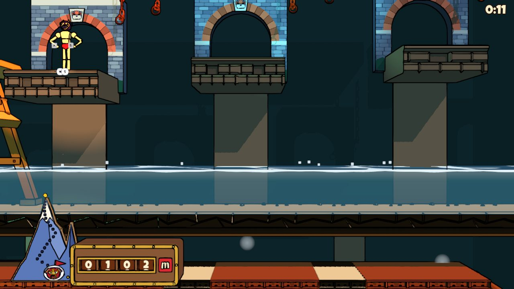

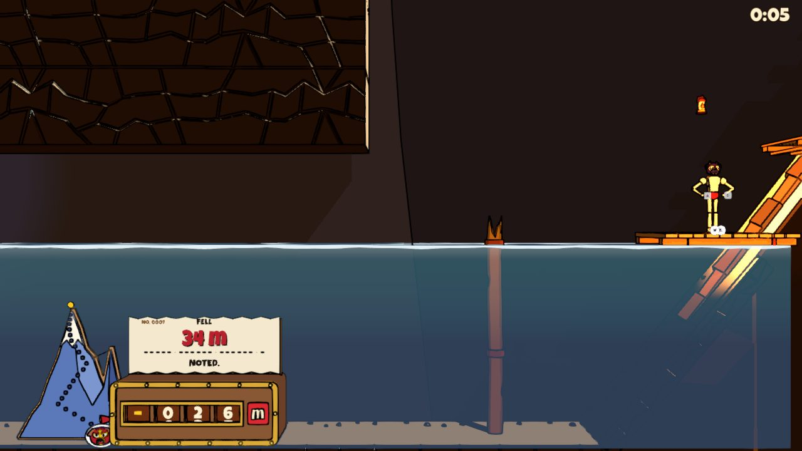
The mine's bucket: nothing sticks, collision is wrong
21:41"the bucket that goes up and down in the mines does not have stickyness for some reason and its collision is wrong. Fix it"
Fixed, seen in the game
What is going on
The bucket's collision was authored with its floor at the bucket's zero line. The model was made with its zero line through its middle. Nobody lined them up, so the bucket you see hangs 0.52 m lower than the bucket you can touch.
- Nothing sticks: the lower half of the drawn bucket has no collision at all, so a hand on it holds nothing. The bucket itself is set to grip (it is iron, like the counterweight).
- Collision is wrong: you stand on a floor that floats in the middle of the drawn bucket, and the walls carry on about 0.7 m above the drawn rim, unseen.
Plan
- Lift the drawn bucket 0.52 m so its base sits on the collision's floor, and trim the collision's walls from 1.2 m to the drawn rim, 1.04 m. (Written, parked.)
- The handle over the top stays drawn only. If it were solid it would close the bucket's mouth and you could not get in.
- Still to do: watch a climber hold it and ride it, and a picture.
The same check, run over the whole mountain
I compared every moving piece's collision box with its model's box (119 pieces). A box can't tell a deliberate difference from a mistake, so each of these needs a look in the game, but these are the ones that stand out:
- The bull wheel on the cliffs: collision 7.9 m across, model 5.0 m across.
- The gondolas on the cableway (8 of them): the collision reaches up to 2.3 m further to one side than the cabin.
- The kites on the storm ridge (3): collision 1.2 m wide, model 2.5 m wide and much taller. May be meant (only the frame holds).
- The temple's jaw: the model hangs 0.9 m lower than its collision.
- The vultures (3): the model sits about half a metre higher than its collision.
- Smaller ones, under half a metre: the crystal raft, the wall snails, the serpent's vertebrae.
After (from the thread)
Hands hold the lower wall and ride it; feet hold standing inside it. The counterweight was checked the same way and already matched.


The two hanging lines in the mine look like ropes
21:42"in the mine area, remove these track things and replace them with something else. They look like the ropes you grab later."
Third try in the game; Parker: "Fine for now"

What is going on
They are the bucket lift's two cables: one runs to the counterweight, one to the bucket (the bucket of note 3 is just above this frame). Each is a 16 m iron line, 8 cm thick, drawn half a metre behind you. They are scenery: they don't move and can't be held. The real rope is 4 m to their left and the same thinness, and the chains you grab later in the mine are drawn as the same thin dark red line. So they read as two more things to hold.
Plan
- Take both cables out. Whatever replaces them must not be a thin hanging line, because in this mine a thin hanging line is always a rope or a chain.
- First try (written, parked, and I have not seen it in the game): a timber head frame that the bucket and counterweight run in, three of the kit's scaffold pieces stacked, set 2.4 m back.
- My doubt about it: orange timber is also the colour of things you hold. If the frame reads as a ladder, the next try is a plain dark iron mast, or nothing but the pulley.
- Still to do: a picture for you to judge.
After (from the thread)
My doubt was right: the timber frame looked like something to climb, so it is gone. A dark gallows on its own left the bucket floating in the air (try 2, also gone). Try 3 is a hoistway cut from flat dark card, in the back wall's grey: a gallows on the station deck and a board the bucket and counterweight run in front of. It is broad, dark and flat, with no rungs and no thin lines.
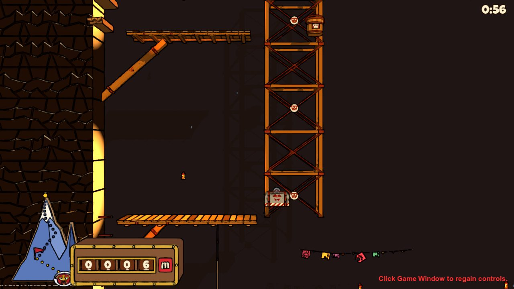


Settled (Parker, 11-13, from pictures): "Fine for now". The mine gets its real look when that area is built to its design.
Wind streaks in the mine where there is no wind
21:45"there is wind in the mine at this part that seams to do nothing"
Fixed, seen in the game

What is going on
You are right that it does nothing: there is no wind there. The mine has one wind, the down-draught inside the waterfall, 40 m to the left of where you were. Its streaks are being drawn in the wrong place.
To make the streaks stand upright for an up-or-down wind, the code turns the whole streak-maker a quarter turn. That also turns the box the streaks are born in and the way they travel. The waterfall's draught is a tall thin column (6 m wide, 112 m tall). Turned on its side it becomes a band 112 m wide and 6 m tall, lying across the mine between 31 and 37 m up, with upright streaks sliding sideways through it. That band is what you climbed through.
The same mistake hits every up-or-down wind on the mountain: three updraughts in the mushroom garden and one in the chimney. Their streaks are also in the wrong place and moving the wrong way, which would make those updraughts hard to find. Sideways winds (the cliffs, the storm ridge, the glacier) are drawn correctly.
Plan
- Stand the streak itself upright and leave the streak-maker alone. (Written, parked.)
- Still to do: a picture of the waterfall column and of one updraught in the mushroom garden.
After (from the thread)
One aside from the thread, not changed: an updraught only gets 8 streaks, which is easy to miss.
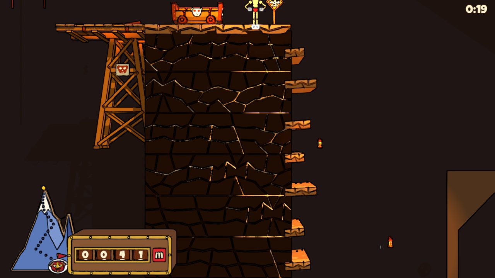


The falling minecart is too slow; the track end has no collision
21:46"the mine cart that falls here falls too slow and should instead have physics a little after it falls. Also this spot right here should have collision on the boards going across the tracks"
Fixed, seen in the game; one new rule and one call for Parker

What is going on
The cart (challenge 1.7, El Carrito Loco). It never really falls. It is slid along a drawn curve from the track end down to the Sump, 75 m of curve, at a top speed of 5 m/s. So the "fall" is a steady glide that takes about 15 seconds. A loose thing dropped from there reaches the water in 4 to 7 seconds, depending on how heavy we let it fall.
The track end. The broken rail is drawn sticking out 1.6 m past the last piece of collision. The collision stops just past the trestle; the boards in the picture are drawn only. The author stopped it there on purpose, to keep the chains out of reach from the track (see the call below).
Plan
- Track end: stretch the collision to the end of the drawn boards. (Written, parked.) The cart's path already runs over them, so the ride is unchanged.
- Cart: keep it on its path while it is on the rails, so the ride and the leap for the chains stay as designed. About a cart's length past the track end, let go: the cart becomes a loose body with the speed it had, tips, drops under gravity, knocks about on the rock and lands in the Sump with a splash (note 2's splash). If you are still holding it, you go with it. It comes back to the top after its usual wait.
- Speed on the rails: it creeps up to 5 m/s today. Worth trying 7 to 8 so the leap is a real decision. A feel number for you two.
- The first cart (the ride in from the station) stays on its path. It has to deliver you.
Settled (Parker, 11-13): "make it one chain and move it out and also make it an actual chain, we have some nice ones from higher up in the mountain we can use, just make it rusty red to match the current chain color". So: one chain, not several, moved out so the cart ride is the only way to it, a real chain with links, in rusty red.
After (from the thread)
The track end is solid to the end of the drawn boards. The chains were not moved. The cart itself is still to do.
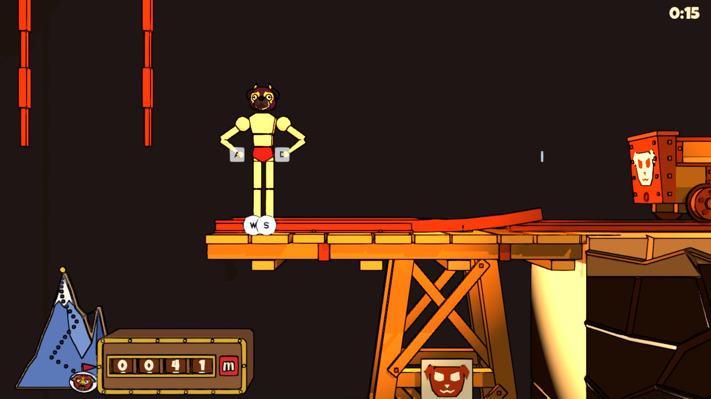
After (from the thread)
The cart now falls for real. It stays on its road along the rails and through the first dip, then about a cart's length past the boards it becomes a loose 140 kg body with the speed and lean it had. Empty, it tips, tumbles and hits the Sump 5.3 seconds later, where the glide used to take about 15. It sinks, lies on the bottom, and is back at the top about 12 seconds after that. The first cart, the ride in from the station, is untouched. The cart's speed on the rails is still 5 m a second.
Settled (Parker, 11-13): the chain wins. Catch a chain while riding the falling cart and you keep the chain.
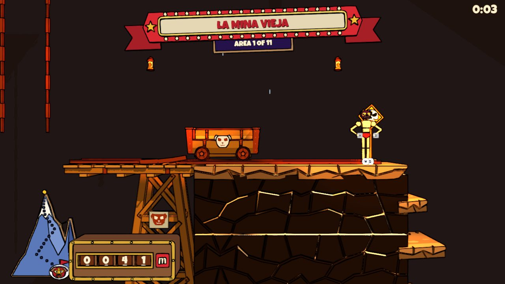

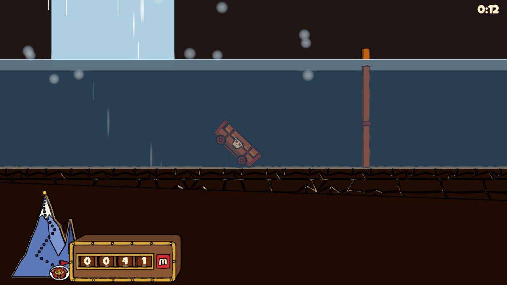

Camera far too pulled back, character too high
21:46"the camera in general is wayyyy to backed out and the character is too high up on it"
First version in (fix run, 5888ae8); not played by a person
What is going on
The course sets the camera per challenge, in 111 zones. The area authors were told to "show the drop": pull back so the launch, the landing and the fall below are all in frame, and look down. They did, everywhere.
- Pulled back: with no zone the camera shows 8.4 m of height, and the climber is about a fifth of the screen tall. The zones' middle value shows 18 m (climber a tenth of the screen), and the widest show 28 m (climber a sixteenth). 96 of the 111 zones are wider than 12 m.
- Too high: 68 of the 111 zones aim the camera below the climber, typically 2 to 4 m, at worst 9.5 m. That pushes you into the top third of the screen. The pictures under notes 4 and 5 are zones that show 16 to 18 m and look 3 to 4 m below you.
Plan
- One rule in the camera code, over every zone at once: a zone may ask for a wider view only up to a cap, and may look below you only up to a cap. Redoing 111 zones by hand is not needed.
- Starting numbers I'd try: the widest view 11 m of height (the climber about a sixth of the screen), looking at most 1 m below you. Standing still with no zone stays as it is (8.4 m).
- The camera already steps back by itself when you fall or fly. That stays, so a long fall still shows where you are going.
- Before and after pictures of the same three spots go here. The two numbers are yours to change.
After (from the thread)
One rule in the camera code, two numbers: the widest view is 11 m of height and the camera aims at most 1 m below you. It changes 101 of the 111 zones; no zone was edited by hand. Checked standing still at five spots. Not checked by eye: the camera while you fall, fling or ride the cart.
Settled (Parker, 11-13): the nine long jumps get a wider view, so you can see where you are jumping to.
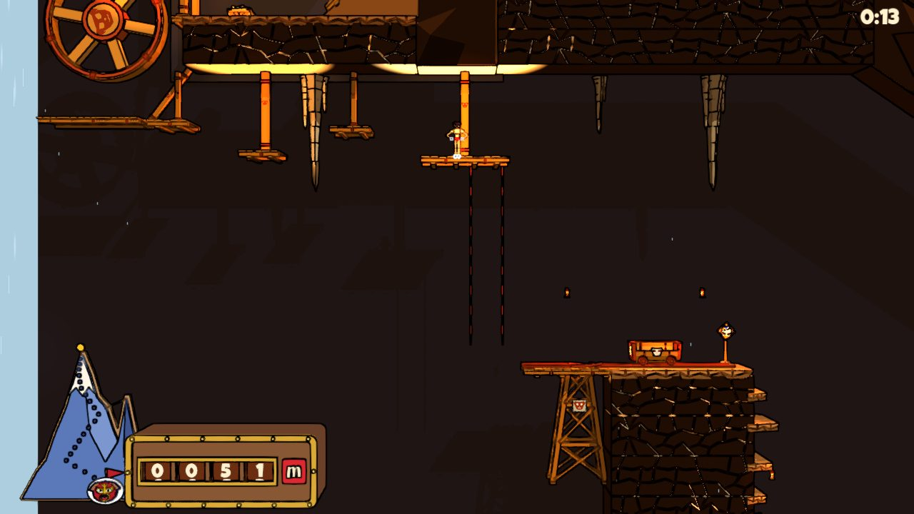

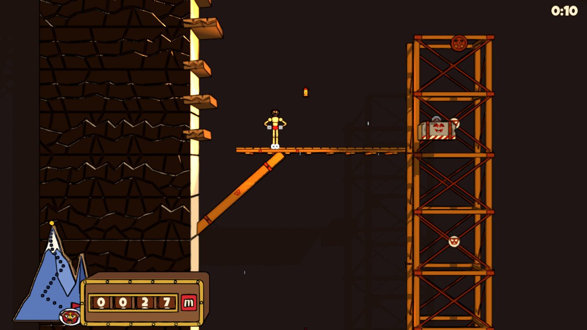
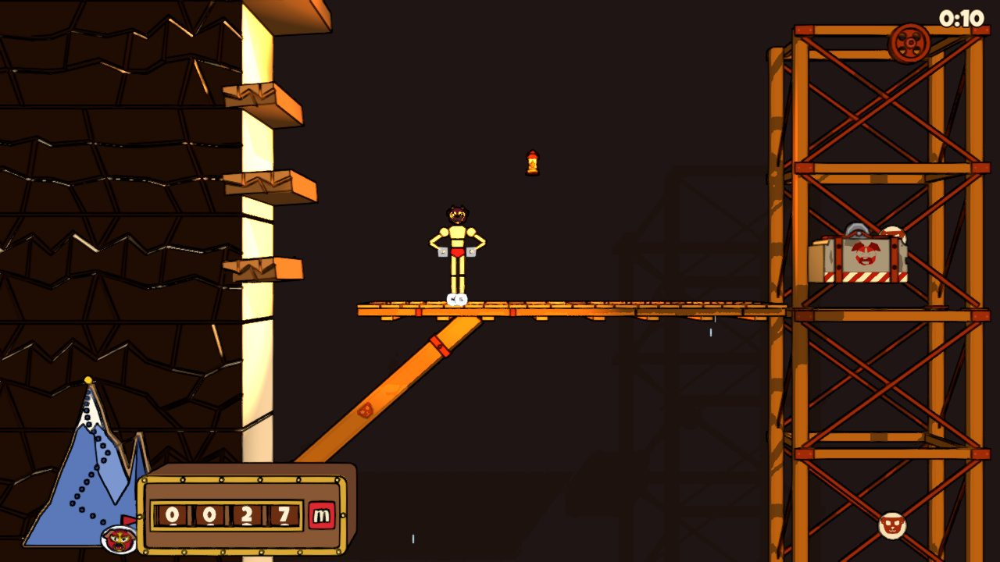
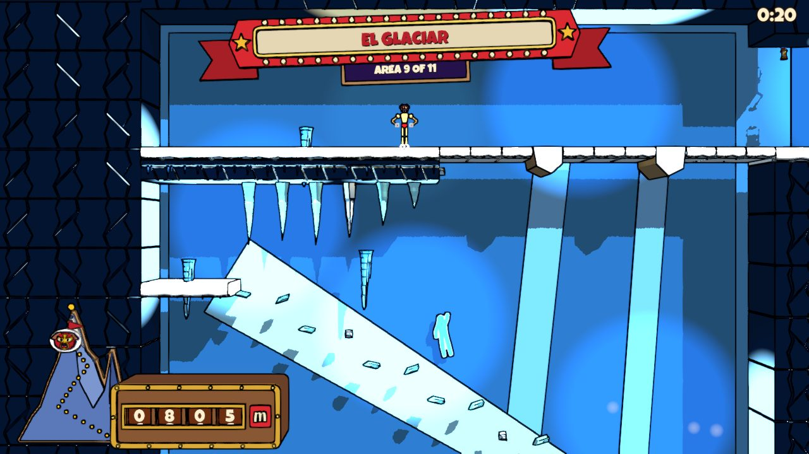
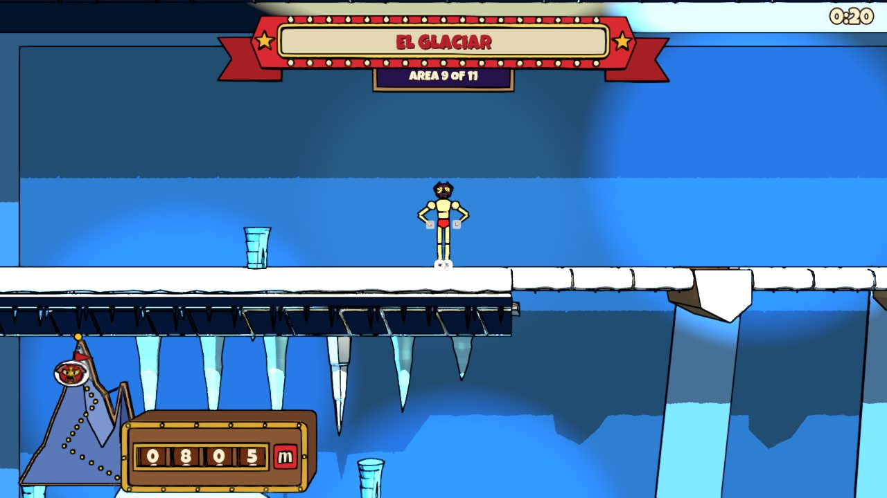
Where the nine long jumps stand now (Parker, 11-13, second round): "Make it so when you come to these 9 areas, a tool tip shows in the bottom right saying "Hold [key bind] to widen the camera"". This replaces his earlier answer (a wider view at those nine). So the close camera stays strict there, the zoom button is how you see the landing, and the game tells you so with a tool tip that names your own bind. Held with every other fix: Parker, 11-13: "Nothing fixed yet except what we have done already. We will finish the playtest and re design first".
After (from the thread, fix run group 2, 5888ae8)
Within 3 m of a long jump's launch a paper card slides in at the bottom right: "Hold Shift to widen the camera", naming the player's own zoom bind ("LT" on a pad). No automatic widening. The nine are the course's own flings in 10.6 (three), 3.5 (two), 11.2, 11.4, 7.8 and 9.6. Seen at 7.8 and 11.4, absent where it should be. Not seen on a pad or under Steam.
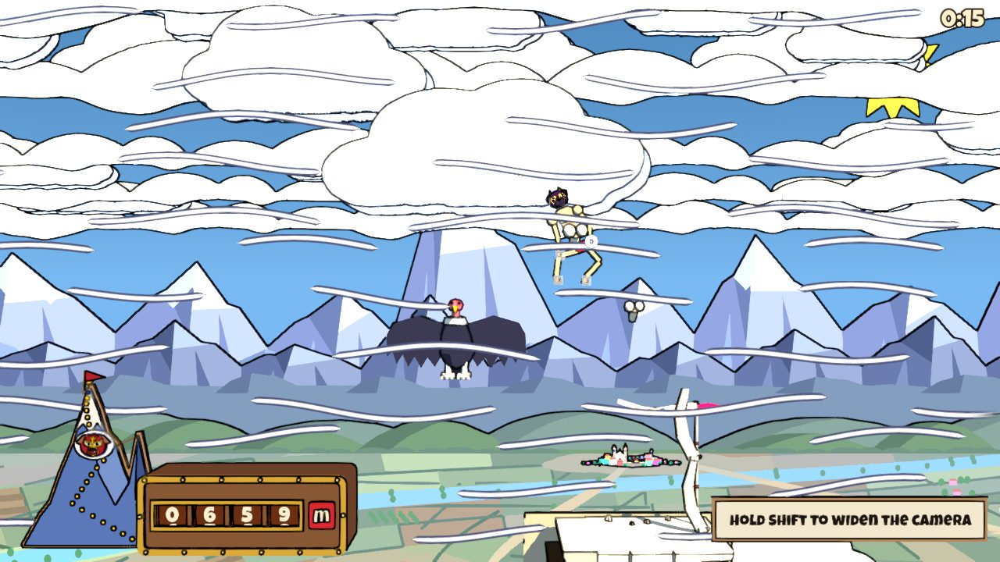
The dark plank by the big wheel should be part of the bridge
21:47"make this part just part of the larger bridge to the right"
Fixed, seen in the game

What is going on
It is the staging under the winding wheel (challenge 1.9, La Polea Grande). The staging is two pieces: 3.8 m of ordinary planks, and at the waterfall end a separate 1.2 m plank that the spray soaks for 1.5 seconds in every 6. While soaked it is slick and can't be held. Because it is its own piece it is drawn as its own, darker plank, so it reads as a different thing stuck on the end.
Plan
- Make the staging one 5 m run of planks, drawn as one bridge. (Written, parked.) The spray no longer soaks that end.
- If you want the wet end back later, the right way is to keep one bridge and darken its end only while it is wet.
- Still to do: a picture.
After (from the thread)


Cave-in rocks: one second more between them, and bounce away instead of vanishing
21:49, 21:52"this part needs a longer delay between rocks and the rocks shouldnt despawn, they should bounce into the background off a little messed up board"
"like a one second more delay, not a hugely longer delay"
Fixed, seen in the game

What is going on
Challenge 1.10, El Derrumbe. Two sources drop rocks down the shaft, one every 4.0 seconds and one every 5.6. Together that is a rock about every 2.3 seconds, and now and then two within a second of each other. Each rock is simply removed 3 seconds after it appears, wherever it happens to be. The author did that on purpose so no rock would roll along the gallery, but it means they blink out on the ramp in front of you.
Plan
- Gap: one second more on each source: every 5.0 and every 6.6 seconds. (Written, parked.) That is a rock about every 2.8 seconds on average. Note 11 replaces this: stretching the two timers moves the double fall around, so the gap has to be done as one written rhythm instead.
- No vanishing: the rock keeps rolling down the fallen beam. At the beam's foot sits a short broken board, propped up at one end. A rock that hits it is thrown up and back, away from you into the dark behind the gallery, and is only cleaned up once it is out of sight. From the moment it leaves the board it can't hit you.
- The same board can be set at the foot of any other rock fall on the mountain later.
- Check: watch ten rocks in a row leave by the board, and none come to rest on the gallery.
After (from the thread)
A snapped board on a heap of rubble (both from the kit) sits at the foot of the beam. Each rock that reaches it is thrown up and about 2.3 m back, shrinks as it goes, can hit nobody from then on, and drops out of sight behind the gallery's floor, where it is removed. The thread watched 14 rocks in a row leave by the board; none got past it onto the gallery. It also fixed a small thing it found: every rock source used to drop a rock at once on the first moment after a load.
Not tested: being knocked out by a rock. The board's sound was chosen without being heard.
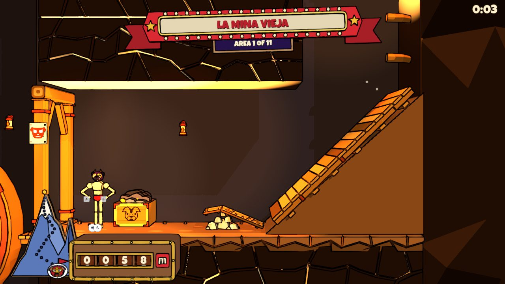

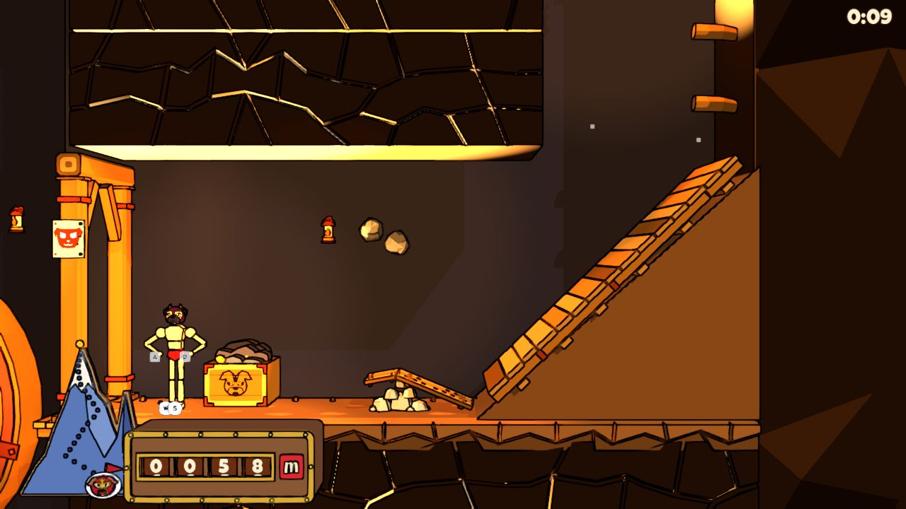
Cave-in rocks: a slightly smaller hitbox
21:50"make the hitbox on the boulder here a little smaller so it's slightly more forgiving"
Fixed, seen in the game
What is going on
A rock knocks you out when its middle comes within 0.74 m of the middle of your head, chest or hips while it is moving faster than 2.2 m/s. The rock itself is 0.42 m in radius, so the knock-out reaches 0.32 m past its surface.
Plan
- For these rocks, bring that down from 0.74 m to 0.60 m, about a fifth smaller. (Written, parked.) The rock you see and bump into stays the same size; only the knock-out is smaller.
- Other rock falls on the mountain keep their size unless you say so.
- A feel number: 0.60 is my first guess at "a little".
After (from the thread)
Kept at 0.60 m. Not tested by being hit.
Cave-in rocks: an extra half second after the double fall
21:58"make it so after the double rock fall, there is an extra .5 seconds along with the extra one second we added"
Fixed, seen in the game
What is going on
The "double" is not designed. It is what happens when the two timers (every 4.0 s and every 5.6 s) land almost together. Their pattern repeats every 28 seconds and holds 12 rocks. Twice in that loop two rocks fall 0.4 seconds apart: that is the double. Twice more they fall 1.2 seconds apart, a looser pair.
Today's gaps round the loop, in seconds: 3.6, 0.4, 4.0, 1.2, 2.8, 2.8, 1.2, 4.0, 0.4, 3.6, 2.0, 2.0.
Simply making both timers a second slower (what I parked under note 9) does not keep this pattern. It moves the doubles to different moments and makes the loop 5 and a half minutes long. So your request can't be done by changing the two timers.
Plan
- Write the rhythm out as one looping list of gaps, so it is exactly what you ask for and the double stays a double.
- How I read your two notes together: every gap gets one second more; the gap straight after a double gets one and a half; the 0.4 inside the double stays as it is.
- That gives, in seconds: 4.6, 0.4, 5.5, 2.2, 3.8, 3.8, 2.2, 5.0, 0.4, 5.1, 3.0, 3.0. A 39-second loop, still 12 rocks.
- The rocks keep falling from the same two spots, so they still come down the same two lines.
- Small: the rock sources learn to follow a written list of gaps. When this is done, note 9's parked gap change is dropped.
Settled (Parker, 22:00): "no just the 0.4 ones count as doubles". The looser pairs, 1.2 seconds apart, are ordinary gaps and get the one second only. The list above stands as written.
After (from the thread)
The two sources now follow the written list. Watched for 46 seconds, the gaps came out as 5.5, 2.2, 3.8, 3.8, 2.2, 5.0, 0.4, 5.1, 3.0, 3.0, 4.6, 0.4: the list, starting part way through. Each rock still falls from the source it fell from before. Note 9's parked gap change is gone.
Cave-in rocks need a dark hole to come out of
22:18"the rocks spawn right here, they need some kind of modeled dark hole they come out of"
Plan, not sent to the thread

What is going on
The shaft of challenge 1.10 ends in a flat rock roof 77 m up. The two rock sources sit 0.7 m under that roof, in open air. So each rock simply appears just below a flat ceiling, in plain view from the top drift, with nothing it could have come from.
Plan
- Cut a chimney up into the roof. A real hole about 2 m wide over the middle of the shaft, rising 4 to 5 m into the roof rock and closed at its top. There is room: the roof rock is 10 m thick there.
- Make it dark. The inside of the chimney is black, with no back wall showing, so it reads as a hole going up into the mountain.
- Dress the mouth. Snapped timber stubs and a lip of rubble round the opening (the kit has a rubble pile), so it looks like the place the roof gave way.
- Move the sources up inside it, out of sight. A rock then falls out of the dark instead of appearing. Both sources keep their left-to-right positions, so the rocks still come down the same two lines, and the rhythm of note 11 is unchanged. The warning trickle of dust comes out of the mouth.
- One thing to watch: a rock that starts 4 m higher arrives a little later and a little faster. The warning time before each rock may need the same small stretch so the tell still matches the rock.
- Check: a picture from the top drift and one from the foot of the shaft looking up, and that the rocks clear the mouth without catching on its rim.
The curtain's holds: stay wet and drippy, but show clearly what is going on
22:19 to 22:26Done, seen in the game; numbers are first tries
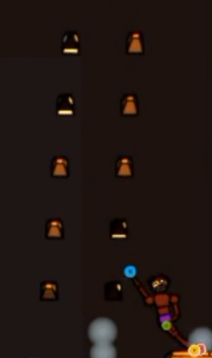
What Parker said, in order
22:19 "if these are going in and out of the wall, give them an in and out animation"
22:20 "make them shake before going in, and dont change the one further up since w are not there yet"
22:21 "make it take longer so they are out for longer. When in, make sure you can pass thorugh the spot"
22:23 "make some of them not go in and out and make them a differnt color"
22:26 "actually we will have it be wet drippy like it is, but make it so there is more of an indication of what is going on"
Where that leaves it: the holds do not slide in and out. They stay as designed, soaked in turn by the waterfall's spray. The job is to make that readable. The sliding, and passing through the spot, are dropped.
What is going on
The waterfall's spray drenches each hold in turn: 2.6 seconds wet, 3.4 seconds dry, each row 0.7 seconds ahead of the row under it, so the wet comes down the wall. A wet hold is slick and can't be held.
The only thing shown is a colour swap: a wet hold turns dark, all at once, with no warning and no water on it. Against a dark wall a dark hold looks like a hold that has gone, which is why it read as holds popping in and out. Note 8's dark plank was the same wet look misread as a different object.
Plan
- Show the water arriving. About half a second before a hold goes wet, a trickle starts running down onto it from above and the first drops fall off it. That is the warning that replaces the shake.
- Show it wet. While wet, water runs over the hold and drips off underneath it, with a small splash where the trickle lands. The hold itself turns a shiny wet blue-grey, not near-black, so it is plainly still there and plainly wet.
- Show it drying. The trickle stops, the last drops fall, and the colour comes back over a moment, so you can time the grab.
- Show the wave. The wet travels down the wall row by row. A thin veil of spray that sweeps down the two columns with it makes the pattern readable from a distance, before you are on the wall.
- Sound. A soft drip and trickle on the wet holds near you.
- La Cortina only (Parker, 22:20). The 7 wet holds in Las Aguas Negras stay exactly as they are until you have played that far. They can take the same look later with no extra work.
Added at 22:27: the drip you can watch
"maybe like a slow moving water drip you can watch fall down and get them wet"
- This becomes the main tell, and the cause. A fat drip of water runs slowly down each column of holds. You can watch it come. A hold goes wet when the drip reaches it, stays wet for a moment after it has passed, then dries. Nothing gets wet without a drip you could see coming.
- Slow. Today the wet moves down the wall at about 1.8 m a second, with nothing to see. First try for the drip: about 1 m a second, so it takes a bit over a second to go from one row to the next.
- Several drips, evenly spaced, follow each other down a column, about 7 m apart. That gives each hold about 2 seconds wet and 5 seconds dry, the same as "dry for longer" below.
- The two columns are out of step, so when the drip is on the left hold of a row the right one is dry. One hold of every pair is always dry, as the challenge was designed.
- Each drip starts at the top lip, where the curtain of the waterfall spills over, and falls off the bottom row into the throat.
- This replaces the "trickle arriving" and the "veil of spray" above: the drip does both jobs. The wet look, the drying and the sound stay.
- The speed and the spacing are first tries for you to feel.
Carried over from the sliding idea
Two of your earlier asks still make sense with wet holds, so I have kept them. Say if either should go.
- Dry for longer (from "out for longer"): first try 5 seconds dry and 2 seconds wet, where today it is 3.4 and 2.6. One hold of every pair is still always dry.
- Some holds never get wet, in a different colour (from "make some of them not go in and out"): first try 5 of the 28, one in every third row, swapping sides, in a pale bone colour, as rests.
Settled (Parker, 11-13): keep both: dry for longer, and a few always-dry holds in another colour. And the holds themselves become iron staples: rust-orange U-shaped rungs hammered into the wet rock, some bent.
After (from the thread)
Built to the later version of this note: the holds stay wet in turn and do not slide. A fat drip runs down each column at 1 m a second, with one every 7 m. A hold turns wet as the drip arrives, stays wet 2 seconds, and is dry for 5. The two columns are half a turn apart. A wet hold is now a shiny blue-grey with drops falling from it and a drip's sound, and its colour comes back over half a second.
The five holds that never get wet are in pale bone, in rows 2, 5, 8, 11 and 14, swapping sides.
Watched for 15 seconds over all 23 wet holds: a drip was within a centimetre of every hold at the moment it turned wet, 50 times out of 50, and no row ever had both its holds wet at once. The seven wet holds in Las Aguas Negras were not touched.
Not checked: climbing it by hand, and how the drip sounds.
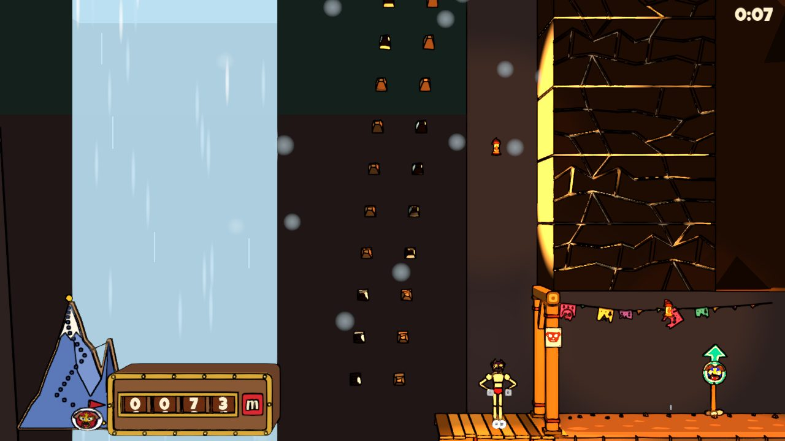
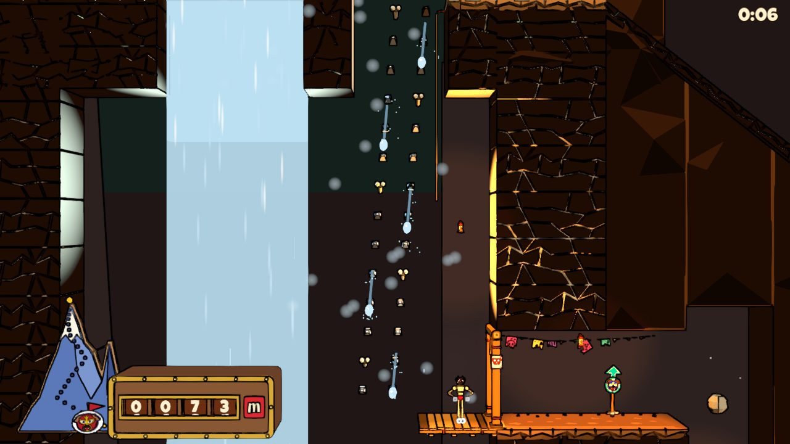
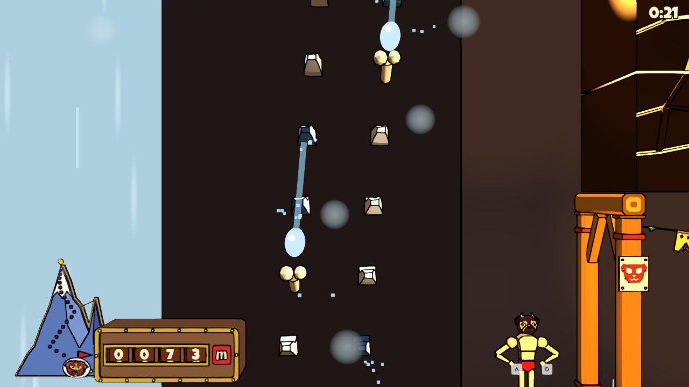
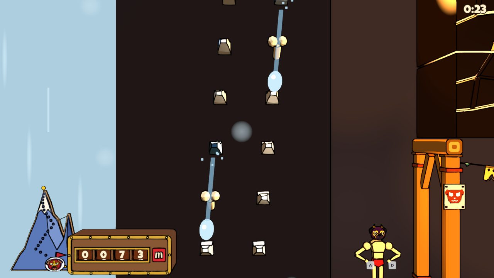
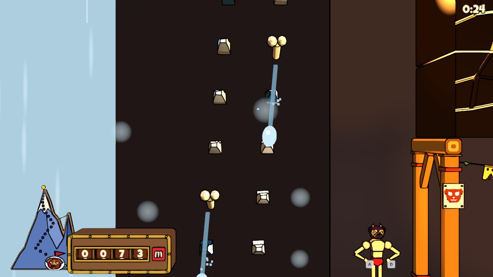
A rope from the top of La Cortina, hanging to about half way down
22:26, 22:27"make a rope hanging about half way down this challenge"
"b" (to my question: a short rope in the middle, or a long rope from the top lip that reaches down to half way)
Done, seen in the game
What is going on
"This challenge" is 1.11, La Cortina, the wall of note 13. It is the last challenge of the mine: 14 rows of holds, 17.7 m from the balcony (72 m up) to the lip where the mine ends (89.7 m up). There is nothing on that wall but the holds: no rest and nothing to catch you.
Plan
- One long rope hung from the top lip, reaching down to about the middle of the wall: about 9 m of rope, its tail near row 7 (around 81 m up).
- So the wall becomes two halves. The lower half is the wet holds. From about half way you can take the rope and climb it to the top instead of the holds.
- It is a real rope like the miner's rope lower down: you can hold it, hang, swing and climb it. It also catches a fall from the upper rows.
- It hangs from the lip on a timber arm or iron bracket, set out from the wall far enough that the rope clears the holds, and within a reach of the columns at its tail.
- Check: the reach from the holds to the rope's tail, the climb up it, and stepping off onto the lip at the top.
- One thing to know: this makes the upper half of La Cortina much easier, since a rope never gets wet. If that is too kind, the tail can be shortened to start higher.
After (from the thread)
An 8 m rope hangs from an iron bracket under the top lip. It is on the east side of the east column, not the west: hung on the west its top would have been 3.5 m from the lip, across the shaft. Its tail is level with rows 7 and 8 and 1.2 m from the nearest hold. Its top is 0.7 m from the lip's corner. A climber hung on it for 3 seconds and stayed on.
It will feel different again once the rope physics of note 20 is done.
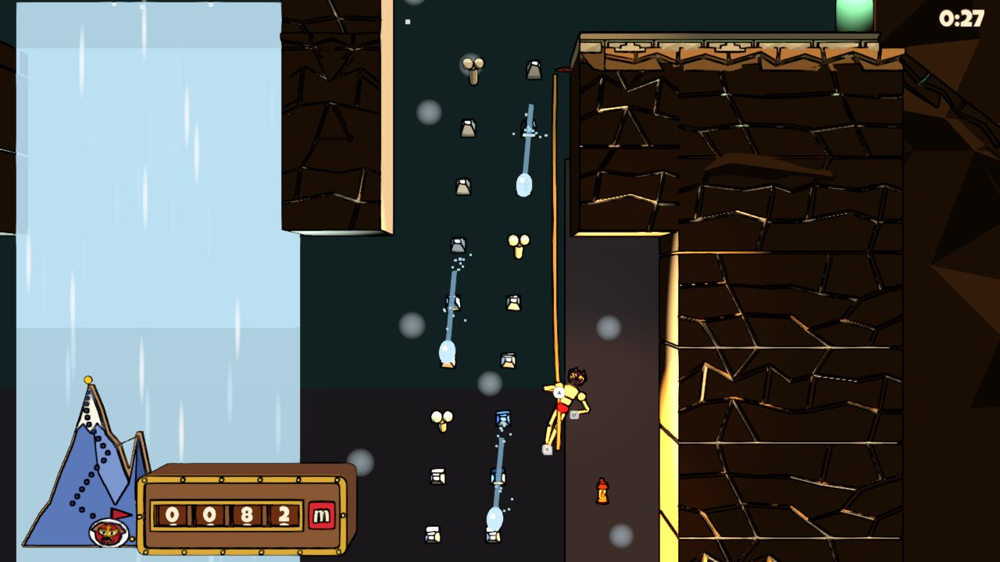
A bouncy lifesaver at the foot of the wet slide, to throw you back to the ledge
22:30"add a bouncy lifesaver here that lunches you back at least to the ledge on the right"
Done, seen in the game; the throw is a first try

What is going on
The sloping slab under the balcony is slick: nothing on it can be held. Anyone who drops off the balcony or comes off the first rows of La Cortina lands on it, slides 10 m down to its foot and is tipped into the waterfall's throat, which carries them down to the Sump at the bottom of the mine. That is the mine's big fall, and it was designed as the price of a miss here.
Plan
- The lifesaver. Del Mar's red and white life ring (the kit has it, and Del Mar's floats already bounce you), set at the foot of the slab where you circled, tilted to face up and to the right.
- The throw. "The ledge on the right" is the balcony the climber is hanging from (Parker confirmed: "yes that ledge"), 10 m above the foot of the slab and about 5 m to the right. The game already has bounce pads (the mushroom caps), so this is one of those with a life ring's look. To clear the balcony's edge with a little to spare it throws you at about 8.5 m a second, steeply up and a little right. You rise about 2.5 m above the balcony and come down onto it about 4 seconds after the bounce (falls are slow in this game). A first-try number.
- It squashes and springs like Del Mar's floats when you hit it, with their sound.
- What it changes: a miss low on La Cortina no longer costs the whole mine. You slide, bounce and are back on the balcony. Falls from higher up, or out past the slab, still go to the Sump.
- Check: drop a climber onto the slab from the balcony and from the first three rows, ten times each, and count how many land on the balcony. Also that the throw does not carry you into La Cortina's holds on the way up.
After (from the thread)
Del Mar's own life ring is propped at the foot of the slab. It throws you at the same speed and angle however you arrive (a little east and strongly up), and squashes and springs the way Del Mar's floats do, with their sound.
Counted: of 14 drops that reached the ring, 13 landed on the balcony and 1 ended hanging from its edge. None was lost. In an earlier run of 10, one throw ended with the climber holding one of La Cortina's holds on the way up. So it nearly always puts you back on the balcony, and now and then it puts you on the wall.
Not checked: falls from the upper rows onto the slab, and the sound.
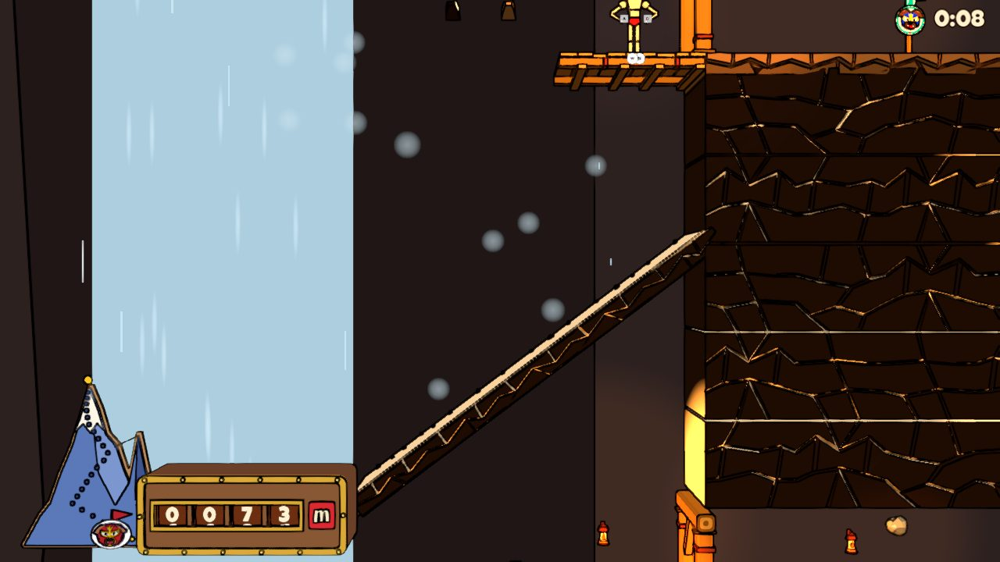
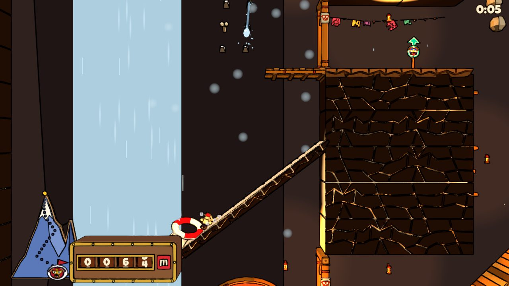
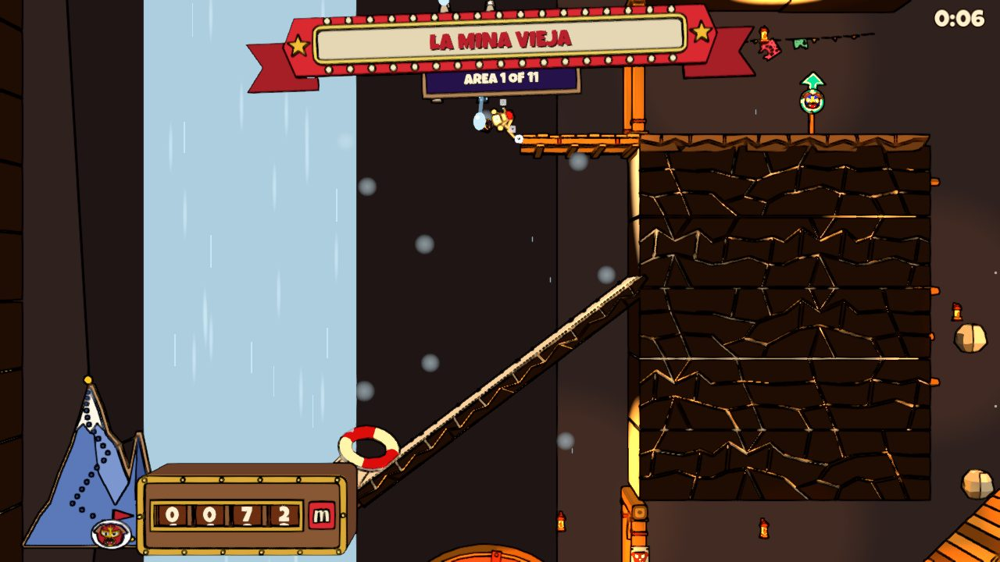
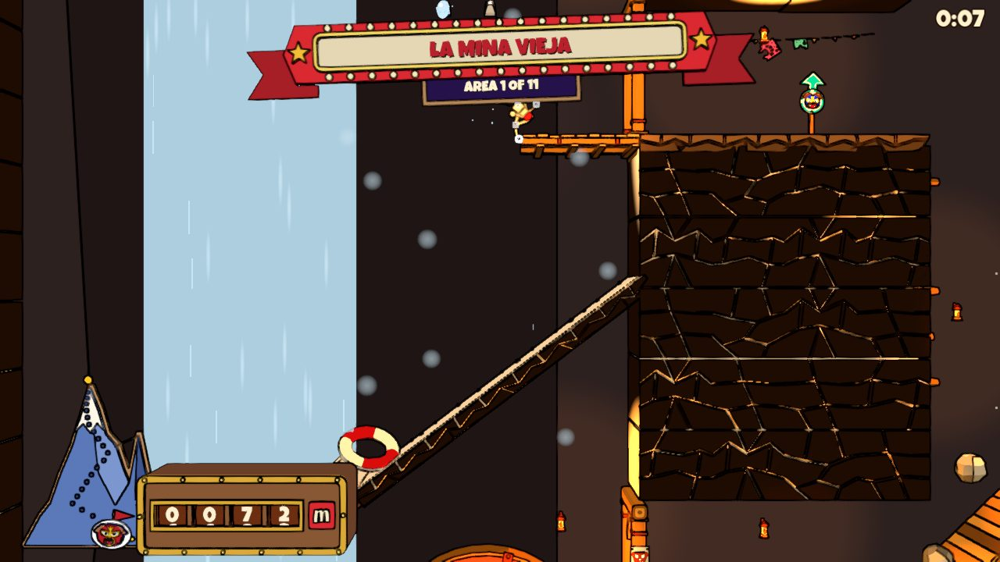
Las Aguas Negras: the dark parts of the first pipe should be breakable pieces
22:42"make these dark parts breakable pieces"
Done, seen in the game
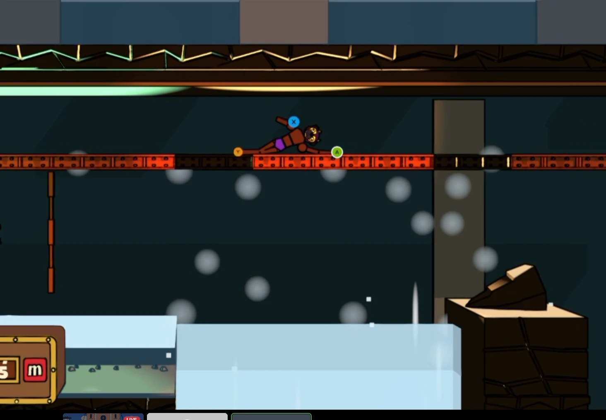
What is going on
Challenge 2.1, El Borde. The pipe is 19.5 m of red painted iron that you cross hand over hand. The two dark sections, each 1.5 m long, are grease: slick, so a hand on them holds nothing. The design was "two greased stretches need a 1.5 m lunge".
This is the third time tonight that "dark means slick" has been read as something else (notes 8 and 13 were the other two). Dark on a dark cave does not say "slippery".
Plan
- Make the two sections breakable. You can hold them, but about a second after you put a hand on one it shudders, snaps and falls away in pieces into the water below. It comes back about 8 seconds later. This uses the breaking-hold rule the game already has (the rotten planks of note 1), with the fixed return.
- Make them look breakable, not dark. Rusted through and cracked, in a paler, flakier colour than the red pipe, so you can tell before you touch one that it will not last.
- What it changes in play: today you must lunge 1.5 m past each section. After this you can also use a section as a quick stepping stone if you keep moving, and if you break one and wait you are back to the lunge until it returns.
- The chain that hangs just past the second section (the one mercy over the water) stays as it is.
- The pieces that fall should splash when they hit the water (note 2's splash).
- Check: a hand on a section holds for about a second and then is let go as it breaks; the section returns in its own place; the lunge across a missing section is still within reach.
After (from the thread)
One breakable look for the mountain. The game now draws every brittle, rusty or crazed piece already cracked, with a corner gone. Once you touch it, more cracks appear, it shudders and sheds dust (glitter, for crystal), and it goes with a burst. This is drawn by the game on the plain shapes; properly cracked models are on the request list. Rotten wood, icicles and snow bridges were left as they were.
The two grease stretches are now rusty breakable sections. A hand on one was let go at 1.01 seconds; the section was back 7.8 seconds later.
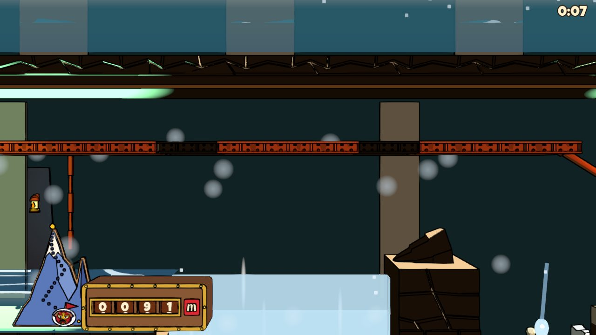
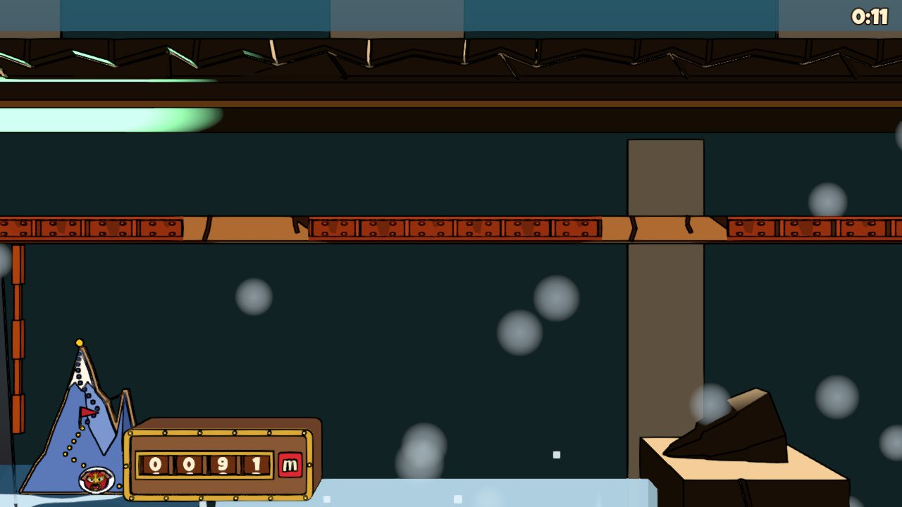
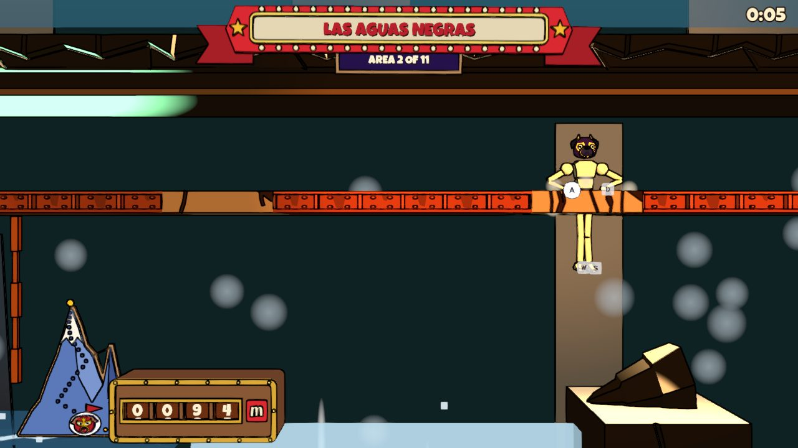
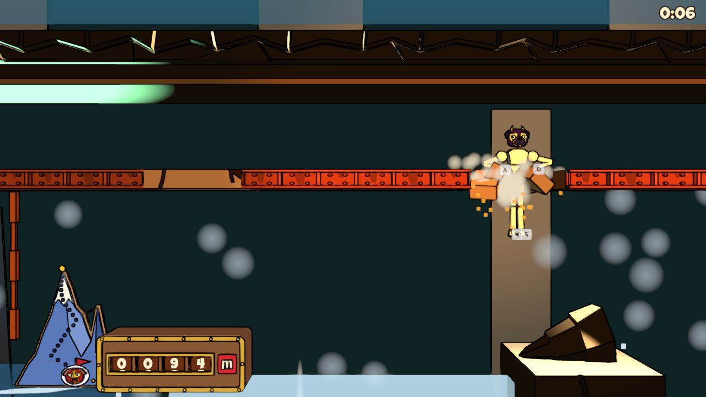
Las Aguas Negras: the light under the water pulses and flashes
22:43, 22:44"this area is pulsing and flashing weird, lighting glitch"
"under the water"
Changed, but the pulse was not reproduced; Parker to look

What is going on
I have not seen it move, so these are suspects from the code, most likely first. The fix starts by standing a climber here and watching.
- Nearly every lantern in this area flickers, and the toon shading turns a flicker into a pulse. 24 of the 25 lanterns of Las Aguas Negras are set to flicker (107 of 214 on the whole mountain): their strength swings between 72% and 100%, several times a second. The game's shading cuts light into hard-edged bands. On a wide flat surface near the edge of a lantern's reach, a small change in strength moves the band's edge a long way. The race's bed is exactly that: flat, 24 m long, and 4 to 8 m under three lanterns that reach 9 to 10 m. So instead of a soft flicker you get a hard-edged patch of light growing and shrinking on the bed, seen through the water.
- Lanterns switch on and off with no fade. Only lanterns within 34 m of you are lit, and one that crosses that line snaps on or off in a single frame. With the camera as far out as it was tonight, that could happen on screen as a flash. The closer camera of note 7 hides most of this, but it is still a snap.
- The water box sits exactly on the bed. The water is a see-through box whose bottom face lies in the same plane as the bed's top, and whose top face lies inside the thin pale surface strip. Two see-through faces in the same place can flicker against each other as the camera moves.
Plan
- Reproduce it at challenge 2.3 and find which of the three it is. It may be more than one.
- If it is the flicker: make it much gentler and slower in the cast light (a few percent, not 28), and keep the lively flicker on the lantern's own flame, which is where the eye expects it.
- If it is the snap: fade lanterns in and out over half a second.
- If it is the water box: this goes away with note 2, which rebuilds the water. The thread doing note 2 should be told about this spot.
- The flicker rule is the same on the whole mountain, so whatever is wrong here is likely wrong wherever a lantern hangs over a flat floor.
After (from the thread)
Not reproduced as a pulse, and the thread says so plainly. It measured all three of my suspects on the race's bed with a climber standing still: the lantern flicker barely registers there, nothing crossed the 34 m line, and the old water box added nothing. None of my three was it.
What it believes it was: the same lamp as note 27. A climber floating in the race throws a hard-edged bright yellow patch on the bed under it, and a floating body bobs and drifts with the current, so the patch jumps about under the water. That fits "under the water", and it was not on my list. The lamp fix above should cure it.
Also changed while there: lanterns now fade on and off over half a second, and their cast light swings by 5% where it swung by 28%.
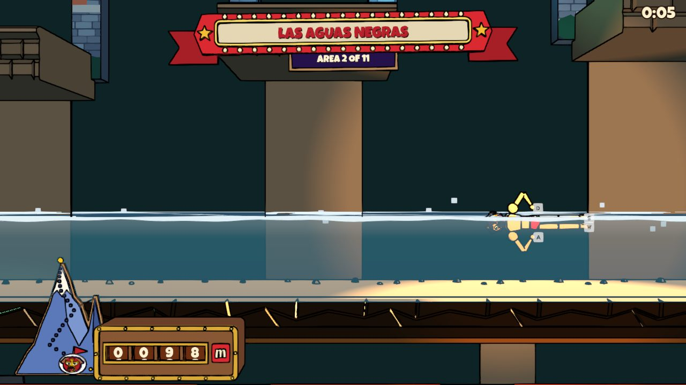
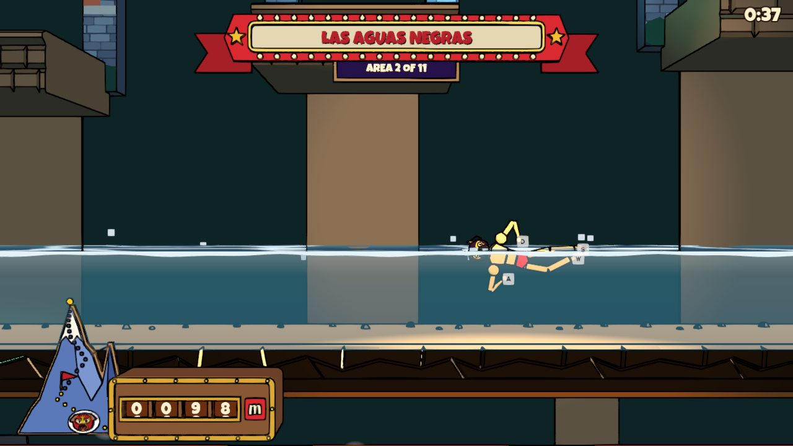
Las Aguas Negras: the rings should be fixed to the wall behind, not hung on chains
22:44"make these rings attached to the wall behind instead of on chains since it looks like you should be able to colide with the chains but you cannot"
Plan, not sent to the thread
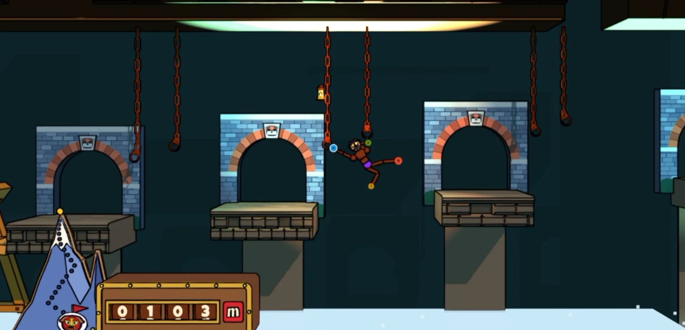
What is going on
Only the rings are real. Each ring is a small fixed hold in the air. The chain above it is a drawn prop, 3 to 4 m long, set 30 cm behind you, with no collision and nothing to hold. So you swing straight through a chain that looks like it should stop you or be something to grab. There are six: two over each of the first three arches.
It is the same mistake as note 4's lift cables: a thin hanging line that is only scenery. In this game a hanging chain or rope is normally something you hold.
Plan
- Take the six chains out.
- Fix each ring to the wall behind: a riveted iron plate bolted to the back wall with a short eye bolt holding the ring, the way a mooring ring sits on a quay wall. From the side you see the ring with its plate directly behind it and nothing above it.
- Where the back wall is too far behind a ring for that to read, give the ring a short stone or brick pad to sit on, so it is plainly fixed to something.
- The rings themselves do not move, so the challenge plays exactly as it does now: the same reaches and the same flings from crown to crown.
- Check: a picture from the same spot, and swing a climber through where each chain was.
The same thing elsewhere
I looked for other drawn-only chains and lines hanging close to the climber on the rest of the mountain. Worth a look when you get there, not changed now: two counterweight chains in the temple (area 5), the slag pan's chains in the chimney (area 6), and four hanging vines in the mushroom garden (area 4). The strings of paper flags and pennants are also lines, but they read as decoration.
Las Aguas Negras: the rising gates should be machine pistons
22:49"make these things some kind of machine pistons."
Plan, needs a model; not sent to the thread

What is going on
They were written as three sluice gates. Each is a slab 2 m wide and 3.4 m tall that rises 3.2 m in 1.8 seconds, waits 2 seconds, slams back down in 0.4, waits 2, and goes again. You ride one up and cross to the next as it drops. Only the red iron top can be held; the dark body is slick.
Drawn as a plain dark slab with a red lid, a gate reads as a block of wall sliding up and down for no reason. Nothing shows what drives it.
Plan
- Redraw each one as a piston, with the same size, the same top, the same timing and the same collision, so the challenge plays exactly as now.
- What you would see: a heavy riveted iron head (the part you ride, as today) on a broad polished steel ram that slides up out of a fixed housing bolted to the floor. The housing stays put, so when the head rises you watch the ram come out of it, and when it slams you see it drive home.
- A broad ram, not a thin rod. A thin rod under a wide head would open gaps under the heads that are not there today, and a climber could get under one before it slams. Keeping the ram as wide as the head keeps what you see equal to what you touch (note 3's lesson).
- Life: a hiss and a puff of steam at the housing as it rises, a clang and a shake as it slams. The slam is the dangerous half, so it should be the loud half.
- The model. The kit has a piston head and the temple's piston, but neither is this shape (2 m wide, 3.4 m of travel, upright). This wants one new model made to the gate's exact size, plus the fixed housing. That is a job for the Building Maker, asked through the Top Dog session.
- The challenge is named Las Compuertas (the sluice gates). If they become pistons the name could change too, for example Los Pistones. Yours to say.
Rope physics: you can't get a good swing, and they launch you up
22:50"we need to fix the rope physics. Make it so you can swing back and forth on them better. Right now they like launch you up weird but you can't get a good swing on them"
Done on the bench and seen in the game; four calls for Parker
What is going on
This covers every rope, chain and vine on the mountain: they are all the same thing, a string of half-metre pieces pinned end to end. Four things in how they are set up work against a swing. I read these from the code and have not measured a swing yet.
| The climber | The miner's rope (4.8 m) | |
|---|---|---|
| Mass | 22 kg | 36 kg (3.6 kg per half metre) |
| Gravity on it | 2.79 m/s², the game's slow fall | 9.8 m/s², full |
| So its weight | about 61 newtons | about 353 newtons |
- The rope outweighs you six to one. You are the light thing on the end of a heavy bar. Shifting your body barely moves it. A chain is nearly twice as heavy again.
- The rope and you fall at different speeds. Gravity pulls the rope three and a half times harder than it pulls you. Left alone, the rope swings back to straight in under 4 seconds; a climber on a weightless rope that long would take about 8. So the two never swing together. The rope snaps back on its own clock and drags you with it.
- Every piece of rope is braked. Each piece loses a quarter of its speed every second, and its turning is braked harder still. Whatever swing you do build bleeds away within one swing.
- Your hand is welded stiff to the piece it holds. On rock that is right: it stops you spinning on a hold. On a rope it means every push of your arm twists one half-metre piece. That piece kinks, and 36 kg of rope under full gravity yanks the kink straight. I think that whip is the "launch you up weird". It is a likely cause, not a proven one.
History to keep in mind. Earlier on 11-12 you asked for the ropes to be "about 3x heavier", because holding one a climber could haul it anywhere and nearly fly. That is why they are this heavy. The fix must not bring that back.
Plan
- Build a rope bench first. A test that hangs a climber on a 5 m rope and a 9 m chain, pumps on a script, and measures how high each swing gets, how long a swing takes, and the highest speed the body is thrown at. Without numbers this is guesswork, and ropes are in nearly every area.
- Same gravity for rope and climber, so they swing as one pendulum at one pace.
- You are the weight on the end, not the rope. Bring the rope's weight down to a fraction of yours. To stop the old "haul it anywhere and fly" coming back, cap how hard an arm can pull on a rope sideways and upward, where today it pulls as hard as it does against rock.
- Take the brakes off. A small amount to stop a rope jittering at rest, nothing that eats a swing.
- Let the hand pivot on a rope. Held firmly along the rope, free to turn, the way a hand holds a real rope. Your body then hangs under your hand and swings; it no longer twists the rope.
- What "better" should mean, for you to agree: from hanging still, four or five pumps take you to a swing of about 60 degrees each side; letting go at the bottom throws you forward and up in a way you can predict; nothing throws you upward unless you swung there.
- Then re-check every designed move that uses a rope or chain. The course was laid out against the old ropes. A better swing reaches further, so some gaps will become too easy and some catches will sit in the wrong place.
After (from the thread)
Commit 3b09e96. The thread built a test bench first (two ropes of its own in open sky, and the mine's real rope), measured the ropes as they were, then changed them. Nothing has been played by a person.
The swing. A climber hanging by one hand pumps with a leg. Degrees out to the side on each push, on a 5 m rope:
- Before: 0, 1, 1, 1, 18, 29, 39, 48, and never past 51. The first four pushes did nothing.
- Now: 22, 40, 52, 60, 62. The fourth push reaches 60 degrees.
"Launch you up weird." With a free hand held straight up, the hand that was gripping the rope used to be carried 1.9 m up at 3.6 m a second. A rope can't push, so that was a throw. Now it moves 0.08 m: the body pulls up to its grip and stops there.
What was changed: a rope weighs about a tenth of what it did (the mine's rope is 3 kg under a 22 kg climber; it was 36 kg), so you are the weight on it. It falls at the climber's own gravity. Its brakes are nearly off. A hand on a rope turns freely where it used to be welded. Steering a limb to one side pumps the swing. A limb's pull on a rope is smaller and never lifts the body above its grip. Two new numbers are in the F1 panel: rope_pull and rope_pump. The garden's plank bridge is as it was, and the arena and the tower see none of this.
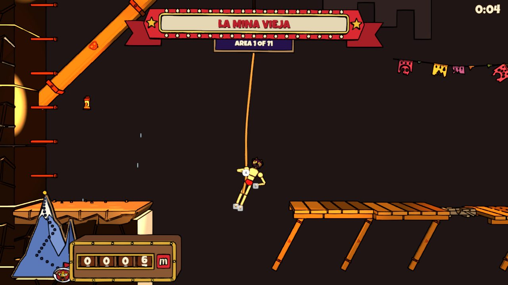
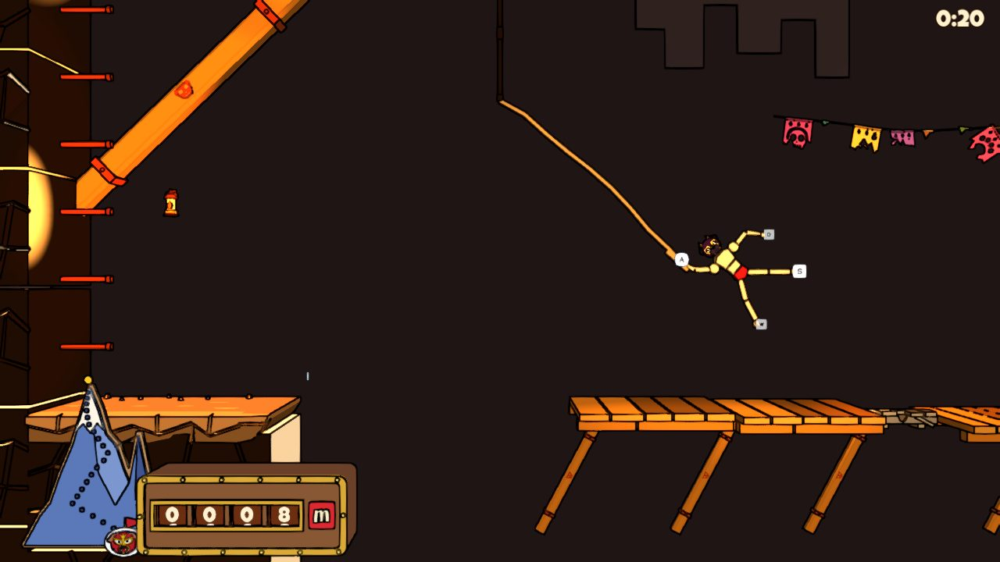
- Pace. A swing there and back takes 8 seconds on a 5 m rope and 11 on a 9 m one. It was 5. That comes from the climber's own low gravity, and no rope number shortens it. Is that slow swing what you want?
- Reach. Every rope, chain and vine now carries you two to three times as far in 20 seconds of pumping: chains from about 2 m to nearly 5 m, the garden's vines from 2.6 to 5.5 m. So chain to chain in Cadenas (2.6) and vine to vine in Lianas (4.2) can now be swung across and taken by hand, where they were flings. Nothing in the course was moved. Leave them easier, or move the chains and vines apart?
- Wind. The winds push harder than the climber's gravity, and it was the old rope's weight that kept you near plumb in them. On a light rope the wind now carries you out 50 degrees and more: the balloon's ropes (10.8), the serac's rope (9.6), the prayer line (10.1). You have not played those yet. If it is too much, the thing to turn down is the winds.
- Climbing a rope hand over hand is slower: 3 m in about 5.6 seconds, where it took 2. The 2 seconds was the launch. All right?
Two new things the survey turned up, not looked into: at Los Ojos (4.9) the two short roots now swing far enough to touch a puffball, which throws you. And on the chain off the last slag raft (6.5) the climber lost its grip at the end of a wider swing; the cause is not known.
Las Aguas Negras: the barrels should go over the fall, not vanish on screen
22:53"the barrels should fall not despawn on screen"
Done, seen in the game; Parker keeps the two swims

What is going on
There are 13 barrels. Each is slid along a straight line the length of the pool, 34 m, at just over half a metre a second. The line ends about 2 m past the end of the water, right over the cascade's lip. When a barrel gets there it is hidden and put back at the start of the line in the same instant. So on screen a barrel floats to the lip and blinks out, with a 24 m waterfall right under it that it never uses.
The same instant, a barrel blinks into being at the west end of the pool. If you are standing there you will see that too.
Plan
- Over the lip. At the end of the water the barrel is let go: it becomes a loose thing, tips over the lip and falls down the cascade, tumbling, and splashes into the river 24 m below (note 2's splash). It is cleaned up down there, out of sight.
- If you are still on it, you go over with it. That is the designed price of this challenge anyway: miss here and you go down the cascade.
- Coming in. A new barrel should arrive, not appear. (My first idea was the flume's mouth; Parker's cove, below, replaces it.)
- The spacing and speed of the barrels on the pool do not change, so hopping them plays as now.
- This is the same piece of work as note 6's falling cart: a thing that rides a line and is handed to real physics at the end of it. One mechanism serves both. Note 9's rocks are the same idea too: nothing should blink out where you can see it.
- Check: watch five barrels in a row go over, one with a climber on it, and watch five arrive at the west end.
Added at 22:54
"they should come out of some modeled cove and they should have some more space between them, like 40% less total barrels, and some variation in when they are sent out"
- A modelled cove. This replaces my flume idea above. At the west end of the pool, a dark arched opening at the waterline, built in the same brick as the aqueduct's arches, black inside. Each barrel floats out of the dark into view. It needs a small piece of new stonework; the kit's brick arch pieces may cover it, to check.
- 40% fewer. 13 barrels become 8.
- More space. Today the barrels are 2.6 m apart, middle to middle, which leaves 0.8 m of water between one barrel's end and the next: a step. With 8 on the same pool the average is 4.2 m apart, about 2.4 m of water between ends.
- Uneven sending. The cove lets them out on a written, looping rhythm, not a steady beat, so the gaps differ: some pairs close, some far. Like the rocks of note 11, it is a list of numbers you can change.
- One thing to check before the numbers are set: the barrels all drift at the same speed, so a gap never closes while you wait. Every gap has to be one a climber can actually cross from barrel to barrel, or the only way on is to swim. I'd measure the longest stretch a climber can make between two barrels, and keep the widest gap just inside it. My guess is about 2 m of water, which would mean gaps from about 1.2 m to 2 m with 8 barrels a little bunched, or wider gaps if you want some of them to force a swim. Yours to choose once it is measured.
After (from the thread)
Eight barrels where there were 13, unevenly spaced on a written rhythm. With the cove standing a little east of the west bank, the stretch of pool the barrels cross in view is 26.8 m, not the 34 m I wrote above, so about seven of the eight are on the pool at once.
They come out of a cove. The thread used the kit's own brick arch, the same one as the aqueduct, set in the back wall at the waterline by the west bank, black inside. A barrel floats forward out of the dark and can't be touched until it is level with you. No new model was needed.
They go over the lip for real. At the end of the water the barrel becomes a loose, heavy thing: it tips over the lip, falls the 24 m down the cascade and splashes into the river. If you are on it, you go with it. The thread watched five in a row come out of the cove and five in a row go over, and a climber ride one down with all four limbs on it.
The measurement I asked for: a standing climber's hand gets about 1.5 m past its back foot, so about 1.3 m of water between two barrels is a plain stretch. The first-try gaps, as water between barrels, are 1.2, 1.6, 1.1, 4.0, 1.3, 1.7, 1.1 and 4.4 m: four are a stretch, two a lunge, and two are a swim. Because every barrel drifts at the same speed, a gap never closes while you wait.
Not checked: hopping the barrels by play, and swimming a long gap. The scripted climber can't lunge. In the first picture of the cove, the arch stands in a black patch bigger than itself, which I'd want tidied when the pool gets its diorama.
Settled (Parker, 11-13): keep the two gaps that have to be swum.
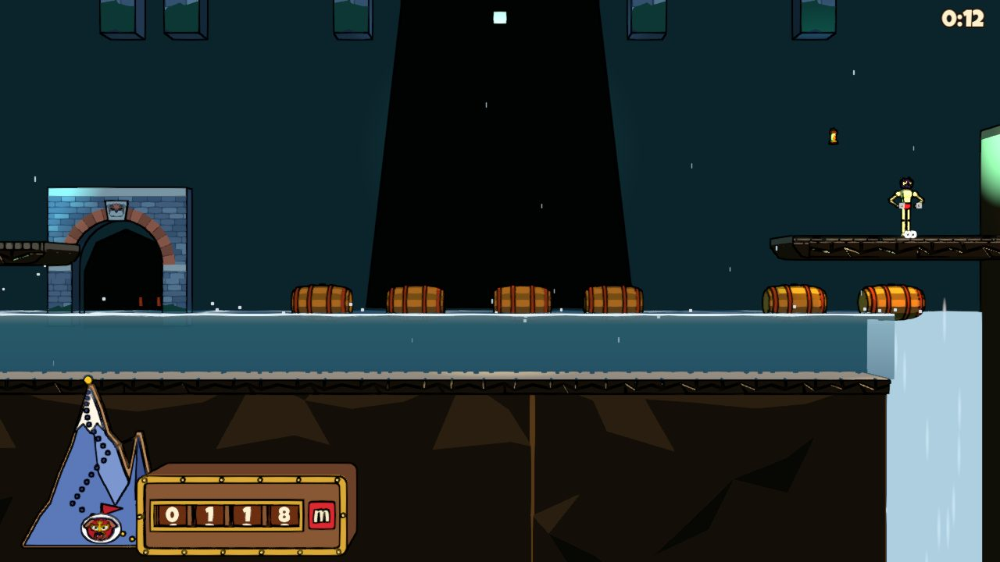
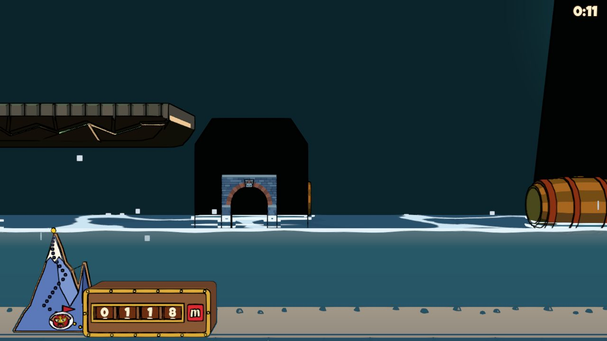
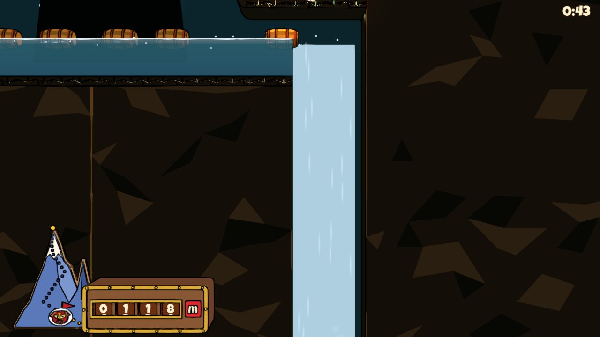
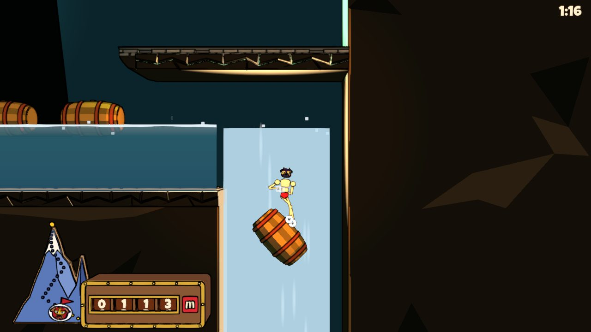
Water needs a full visual overhaul
22:55"water will need a full visual overhaul, it is in weird cubes and it doesn't pour off things or look like water"
First try: "Still not water". The new method's demo: "water looks way better". To be built with the fixes

What is going on
The water is drawn straight from the rules, and the rules are boxes.
- One see-through box per rule. Every stretch with its own current is its own box: the flume, the tail pool, each still patch behind a pillar. Where two touch you see a seam. Where a still patch is laid over the river, two boxes overlap and you see a darker rectangle, as in the picture. Where a pool ends you see a flat glass end wall.
- The surface is a ruled strip 7 cm thick. It never moves.
- The specks are squares. The white flecks that show the current are plain square cards.
- Nothing pours. A waterfall is a separate pale slab with streaks on it, placed next to the pool. The pool does not bend over its lip into the fall, and the fall does not churn where it lands. Nothing that comes up out of the water sheds any.
The size of it: 14 stretches of water and 6 waterfalls, all in the mine and Las Aguas Negras. No other area has water today.
Plan
- Separate the look from the rules. Currents and still patches stay as they are, as invisible rules. The water you see is drawn once per connected body, from the joined outline of every stretch that touches. No seams, no overlaps, no end walls: water meets rock, or it goes over a lip.
- A surface that moves. A waterline with a gentle travelling ripple, a foam line where it meets walls, piles and barrels, and rings where something goes in (Del Mar's rings and splashes, note 2).
- A body with depth. Lighter near the surface, darker lower down, tinted to its cave. Whatever is under the surface is tinted by it, the way your climber is in the picture, but without box edges.
- Current you can read. Long soft streaks and foam lines that slide with the flow, faster where the current is faster, slow swirls in the still patches. They replace the square specks. Reading the current matters: two challenges are swims against it.
- Water that pours. At every lip the surface bends over the edge and becomes the fall, with broken white at the top, a sheet with moving streaks, and churn, mist and rings where it lands in the next pool. Thin spills where a channel overflows an edge.
- Things shed water. The mill wheel's paddles lift water and drop it. A barrel, a chain or a climber coming up out of the water drips for a moment.
- Del Mar is the style to match (your note 2): its foam circles, its pale splash blobs, its ink line.
How I'd run it
- One sample stretch first: the mill race of challenges 2.2 and 2.3. It has a wheel in it, a lip, a fall and a pool below, so it shows every part. You judge that from pictures and a short clip before anything is rolled out.
- Then the other 13 stretches and 5 falls, and the frame rate checked in Las Aguas Negras with all of it on.
- This also settles note 17 if the flashing turns out to be the water box, and it is where note 21's barrels and note 6's cart get their splashes.
Overtaken (the thread finished first): I asked whether to tell the thread to leave the surface alone. Before you answered, it finished note 2 as first written: splashes everywhere, and Del Mar's surface on the existing boxes (pictures under note 2). The splashes are kept. The surface work is the part this overhaul replaces. Nothing here has been sent to the thread.
After (from the thread)
Commit 47dee34. The mill race was the sample, and because the new drawing is general, every stretch and every fall got it at once. The thread checked each one in pictures. Nothing has been played by a person, and stills can't show the water moving.
- No more cubes. Each connected stretch of water is drawn as one body, from its joined outline: 9 bodies where there were 14 boxes. No seams, no darker box where a still patch lies over a river, no glass end walls. The currents and the still patches themselves have not changed.
- It looks like water. A waterline with a travelling ripple, a body with depth tinted to its cave, long soft streaks that slide with the current, slow turning arcs in the still patches, and foam at walls and at every pile. The square specks are gone.
- It pours. At a lip the pool's whole depth turns over and becomes the fall, thinning as it speeds up, white where it breaks, with mist, spray and rings where it lands. Three falls that were missing are now drawn: the mill channel's drain into the race, the race's drain onto the lip ledge, and the flume's one-metre spill into El Charco del Pozo. The river's fall into the mine is one line through both areas.
- Things shed water. The mill wheel's paddles drop water, and a climber just out of the water drips for a second and a half.
- Note 2's splashes, rings, sounds and cave tints are kept.
- It runs faster, not slower. Frames a second, measured off-screen with no cap: the mill race 107 to 140, the flume 116 to 136, the upper pool 110 to 128, the mine over the Sump 130 to 171.
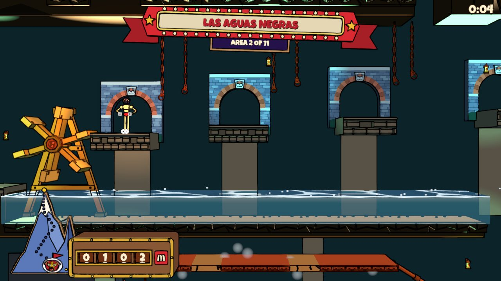
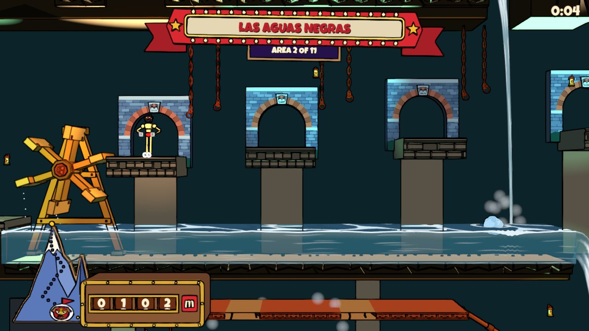
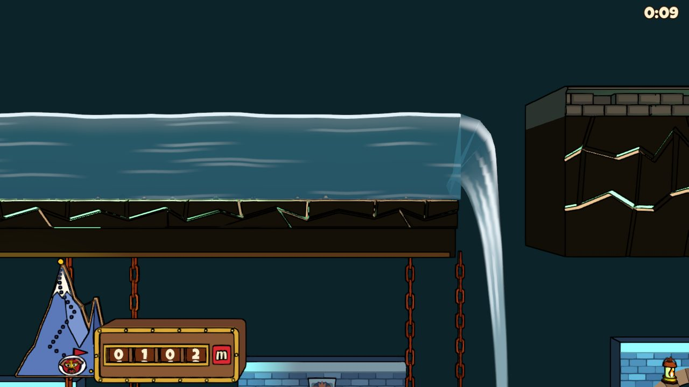
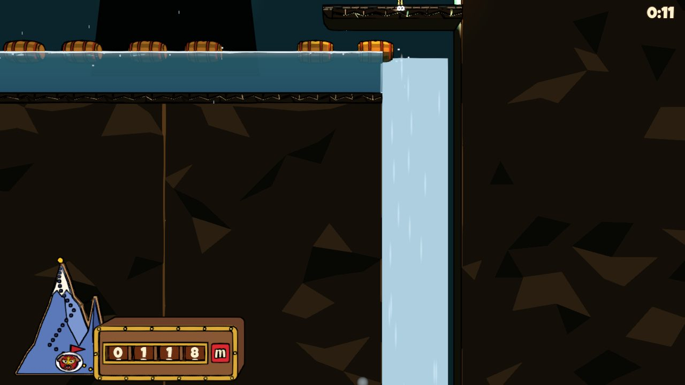
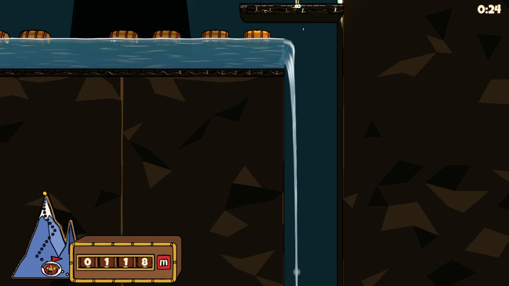
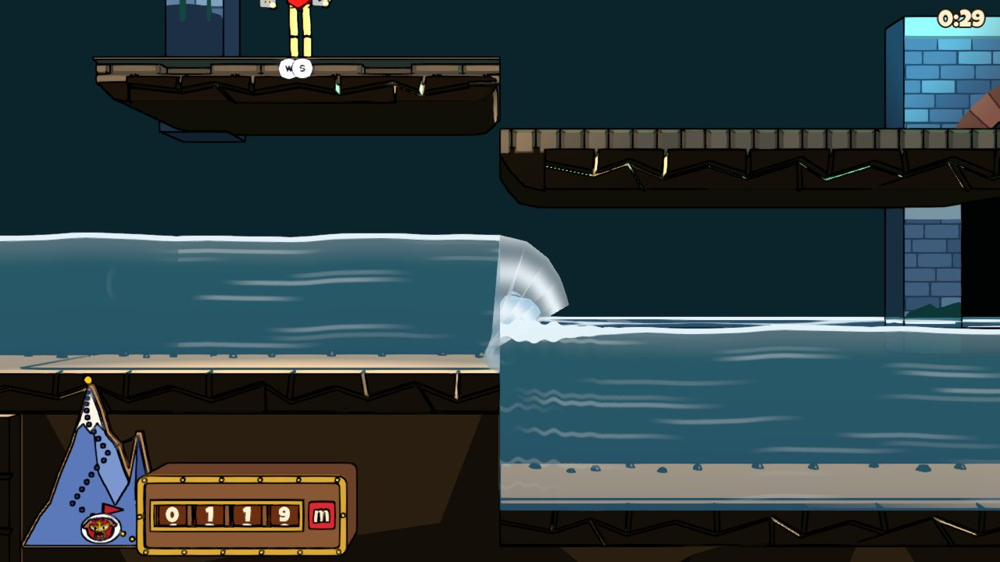
What it does not do yet, by the thread's own account: the one-metre spill above reads as a thick curl. The wheel's paddles end 0.6 m above the race, so the wheel drops water but does not visibly lift it. Barrels, chains and the cart do not drip, and no foam forms against the moving barrels. There are no thin spills where a channel overflows an edge, because nothing in the course says where one would be.
There are 20 pictures in all in after/, named 22_*, three of them from before. I looked at these four of the after pictures.
Parker's verdict (11-13, from the before and now pictures)
"Still not water". What is wrong, of the choices I gave: "Looks like a glass block" and "Falls are wrong". And: "Lets look up some good cheap fluid simulations we can use for it. It only has to be visual, the physics and feel were working well already, but it can be both if you can make it nice. Research it and figure out a good implementation".
Researched and proposed, nothing built: water/WATER_RESEARCH.md, with a moving demo of the method, water/water_demo.html. In short: each pool becomes a solid cartoon body whose top is a row of springs, so it makes real waves and bends over its lip; and everything that pours, splashes or drips is loose droplets that slide on the course's solids and are drawn as one inked shape wherever they touch. The swim, the currents and the floating stay as they are. A true fluid simulation was looked at and set aside: the water would go where the simulation takes it, not where the swim rules are.
Parker, 11-13, on seeing the moving demo: "water looks way better". So the method is the direction: a spring-driven surface for each pool, and loose droplets drawn as one inked shape for everything that pours. It is still a demo of the technique, not the game. Building it in the game waits with every other fix, starting with the one pool and one fall of his note 22 pictures.
Las Aguas Negras: the hot pipe joints show nothing of what they do
22:56"what is the deal with this? There is no visual for what is going on."
Done, seen in the game; needs a person to judge

What the deal is
Challenge 2.9 is a climb through steam pipes. The round orange joints are hot. A hand or foot can hold one for 1.5 seconds, then it is let go, and that hand can't hold anything for the next 0.8 seconds. So you have to keep moving: grab, swing on, grab the next. The one joint at the very bottom, the one at the very top, and the three level pipes between are cool and safe to rest on. There are 11 hot joints. The cool pieces are painted red, the same red as the pipe in note 16, which sits close to the hot joints' orange.
You are right that nothing shows it. A hot joint is an orange disc that never changes. The only tell is a sizzle sound in the last half second, and then your hand lets go for no visible reason.
Plan
- At rest it should look hot. A slow pulse in its colour, a heat shimmer above it, a wisp of steam now and then. The cool joints get a plainly different look: dull grey-blue, no shimmer.
- While you hold it, you can watch the time run out. The joint brightens from orange through yellow to nearly white over the 1.5 seconds, and steam starts to curl off your hand and thickens. In the last half second it spits and your hand shakes, with the sizzle.
- When it lets go: a burst of steam, your hand is flicked off, and the hand smokes and stays red for the 0.8 seconds it can't hold. That shows both why you were dropped and why the hand won't take the next hold yet.
- Teach it once. A warning plate by the first hot joint, in the mine-sign style: a hand and a flame. A sign in the world, not a pop-up.
- No glowing materials: the house rule is no emissive, so "hot" is done with colour, shimmer and steam.
Added at 22:57
"make it so there is obvious effects and stuff for what is going on, we can use particle effects if we need it"
- Go big, not subtle. Everything in the plan above is turned up until it can't be missed from across the screen: thick steam off the hand, sparks spitting from the joint in the last half second, a real burst when it lets go.
- Particles are allowed (Parker). Steam, sparks and smoke are done as particle effects, in the toon-blob style of Del Mar's splashes so they match the rest of the game.
- The test for "obvious": someone who has never been told the rule should be able to say what happened after being dropped once.
The same rule elsewhere
Three kinds of hold on the mountain let go on a timer, and none of them shows it. Worth doing together so they speak the same language: 11 hot joints here; 9 hot holds in the chimney (area 6), which let go after 1.2 seconds; and 50 ice holds on the cableway and the glacier (areas 8 and 9), which let go after 2 seconds with only a tick and a crack to warn you. The ice ones would get the cold version: frost creeping, a crack spreading, then it lets go.
After (from the thread)
One system now covers every hold on the mountain that lets go on a timer, so all 20 hot holds have it: the 11 joints here and the 9 in the chimney (note 56). At rest a hot hold pulses between orange and bright yellow and breathes steam, with the odd spark. Held, it brightens toward white while the hand smokes thicker and faster, and in the last half second it shudders and spits sparks. When it lets go there is a burst, the hand is flicked off, and it wears a red mark and smokes for the 0.8 seconds it can't hold. No glowing materials were used.
Timed: a hand laid on the first hot joint was let go at 1.51 seconds (its time is 1.5).
One correction to what I wrote above. I said the cool pieces are painted red. In the game the cool joint is already a teal valve wheel, plain to see. Only the three level pipes are red. Nothing was recoloured there.
Not done: the warning plate by the first hot joint needs a small model. It is on the request list.
The ice holds were left alone. The cold version is written and switched off, ready for when you reach the cableway and the glacier.
Not checked, and it can't be by a test: whether someone who was never told the rule can say what happened after being dropped once. That is yours and Dan's to judge.
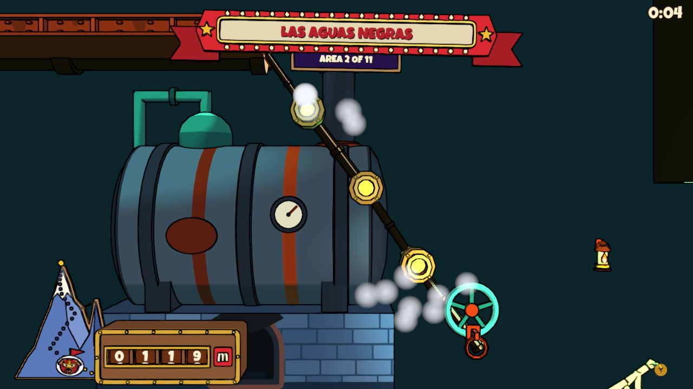
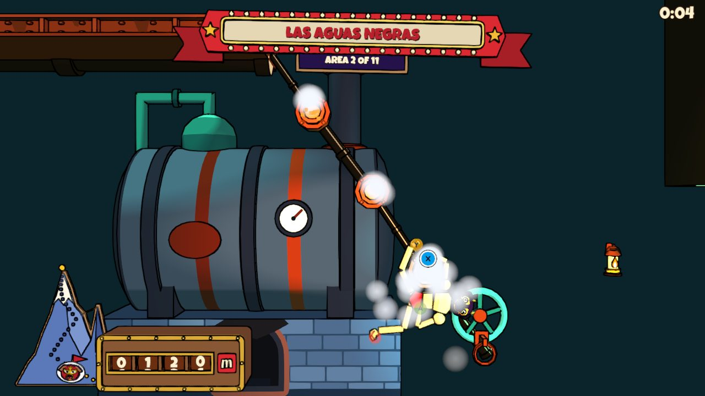
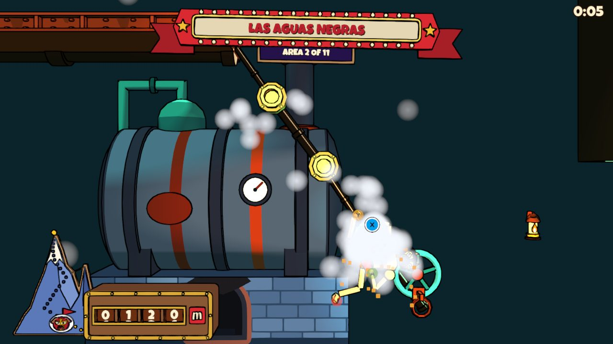
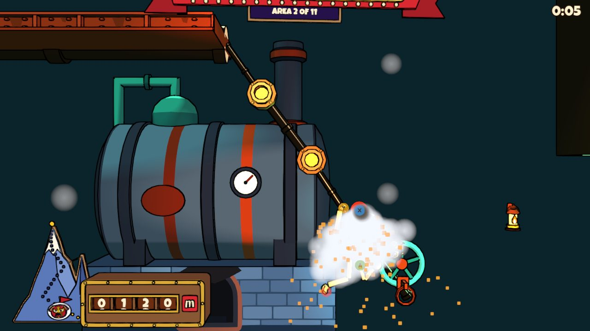
Las Aguas Negras: the catwalk before the dam should be mostly breakable floor
22:59"make this area out of mostly breakable floor. There is only one breakable thing here"
Done, seen in the game; the delay is a measured first try
What is going on
This is the walk between challenge 2.10 and the dam: 34 m of catwalk, 2 m above the river. It is five slabs of solid iron with three 1.3 m gaps, and one 2 m plank that breaks (the author called it "the plank that creaks"). So 2 m in 34 can break. It was written as a breather between two hard challenges.
The river under it runs east at 1.2 m a second, back toward the lip of La Cascada Chica. Fall in and don't get out, and you go back down the 15 m cascade you just climbed.
Plan
- Most of the catwalk breaks. About 70% of its length becomes breakable sections, each about 2 m long. A section shudders and creaks when you put weight on it, then drops into the river in pieces, and comes back about 8 seconds later.
- What stays solid: a short landing at each end (the top of the cascade and the dam's apron), and two short rest plates along the way, so there is somewhere to stop and look at what is ahead.
- The three gaps stay, so the crossing is a run of breakable stepping stones, not one long floor.
- You can tell them apart. Solid plates keep the red riveted iron. Breakable sections are rusted through and sagging, in the same breakable look as note 16's pipe sections, so that look means one thing everywhere.
- The falling pieces splash (note 2), and the returning sections come back in place (note 1's fix).
After (from the thread)
The measurement I asked for first: a scripted crawl along level floor makes between 0.6 and 1.1 m a second. Brisk is about 1.1. A climber's body is about 1.6 m from leading hand to trailing foot, so getting wholly clear of a 2 m piece takes about 3.3 seconds at a brisk crawl. The 1.2 seconds that breaking holds use could never have been crossed.
What was built: 22 of the 34 m now breaks, in eleven pieces of about 2 m. A 2 m landing at each end and two 2 m rest plates stay solid, and the three gaps are unchanged. Each piece holds for 3.4 seconds. The crawl made every stretch, the long run of five pieces included (10.5 m in 12.1 seconds). Stand still and you are in the river 4.4 seconds after first touching a piece.
Not checked: the scripted crawl can't lunge the three 1.3 m gaps, which were there before, so the whole crossing end to end has not been done in one go. That needs a person.
The dam: one elevator with its winch on board, in place of the five steps
23:00"replace this area with one elevator platform and the spiney which is attached to it so you have to stand in the elevator and spin the winch instead of all these steps"
First version in (fix run, 671fafe); not played by a person

What is going on
The dam is climbed in five identical steps. On each step a plank lift rises 1 m while you wind the crank fixed to the wall beside it, and sinks when you stop. Then you climb 1.9 m up onto the next step and do it again. Five cranks, five lifts, about four turns each: the same small thing five times, and the crank stays behind on the wall while the lift moves away from it.
From the apron at the foot to the dam's crest is 14.8 m up and about 10 m across.
Plan
- One elevator, the whole way. A single platform that carries you from the apron to the crest. The five steps, lifts and wall cranks go.
- The winch rides with you. The crank is mounted on the platform itself, on a post at one end. You stand on the deck, take the handle and wind. While you wind it climbs; when you stop it sinks back.
- It runs up the dam's slope. The dam's face is already a slope with steps cut into it. I'd smooth the steps into one sloping face with a rail, and have the platform ride the rail like an inclined lift, its deck staying level. That keeps the dam looking like a dam and needs no new shaft cut into it.
- Numbers, first tries. Today a turn of the crank is worth 0.3 m. At that rate 14.8 m would be about 50 turns, which is too many. First try: 0.6 m a turn, about 25 turns to the top, and it sinks at 0.3 m a second when you let go, as the lifts do now. So a rest costs you height, and the higher you are the more a slip costs.
- It should look like it works: a chain or toothed rail that the winch visibly climbs, a pawl that clicks as you wind, and a creak and slide when it sinks.
- What has to be built: the crank has to turn on a thing that moves (today a crank can only be pinned to the rock), and the dam's face has to be reshaped. The kit's lift and crank models may do; the post and rail are new.
- Check: wind a climber from the bottom to the top without falling off; let go half way and see it sink; step off onto the crest at the top.
Added at 23:01: how the hand takes the winch
"it connects to the hand like the chair does, while you hold it not" ... "the whinch"
- The winch handle is gripped the way the folding chair is. In the arena, a hand that takes the chair is locked to it for as long as you keep holding that limb, and lets go when you release. The winch handle works the same: reach it with a hand, keep holding, and the hand is locked onto the handle so that circling the stick drives it round. Let go of the limb and the hand comes off the handle.
- This is different from every other hold on the mountain, where a hand sticks when you stop moving it. On a crank that rule fights you: the moment the hand sticks you can no longer steer it round. The chair's rule is the right one for something you turn.
- Your sentence stopped at "while you hold it not". I have read it as "it holds while you hold, not when you let go". Tell me if it was something else.
- The same grip would suit the other cranks on the mountain, if any stay after this note. Not changed unless you say.
Settled (Parker, 11-13): it always sinks when you stop winding. And the lift goes straight up in a shaft, not up the dam's leaning face as the plan above had it.
After (from the thread, fix run group 3, 671fafe)
The dam's five lifts and cranks are one cage in a shaft inside the dam, reached by a gallery from the apron. Its winch rides with it, taken like the lever by the held limb, 0.6 m a turn, and it always sinks when you stop winding.
La Gruta de Cristal: the hexagon steps should be pointed crystals jutting out of the back wall
23:03"replace these pointed at crystals with crystals that look like the circled ones, jutting out of the back wall"
First version in (fix run, b6b8eb8); not played by a person

What is going on
Challenge 3.1, Primer Destello: six steps climbing west, each a fling of 2.7 m across and 2.2 m up to the next. Each step was written as a six-sided crystal column seen end-on, 3.4 m wide and 1.5 m tall: the idea was a crystal shaft coming straight out of the wall at you. Its top and shoulders can be held (the white cap); its under-faces are glass and can't (the dark part).
Seen end-on, a shaft shows no length and no point, so it reads as a dark six-sided pod with a white lid, floating. Nothing says "crystal", and nothing joins it to the wall. The circled cluster is a prop from the kit: pale lavender shafts with lighter tips, plainly crystals.
Plan
- Each of the six steps becomes a cluster of pale pointed crystals growing out of the back wall, in the circled cluster's shape, colour and ink: lavender shafts, lighter toward the tips, fanned out from a root on the wall.
- Rooted in the wall. Each cluster has a visible base where it breaks out of the back wall, with small shards round it, so it is clear what holds it up.
- What you hold has to be what you see. The part of the cluster that crosses your path is where its collision is. Glass under-faces stay dark and glossy so "can't hold this" still reads; the faces you can hold are the pale ones.
- New models. The kit's clusters are floor props that stand upright; these need to be made to grow sideways out of a wall and to fit each step. Six pieces (the sixth is wider). A job for the Building Maker, asked through the Top Dog session.
- The same hexagon-pod look is used for other crystal steps in this area. Once the first six are right, the rest of the cave should follow, when you have seen them.
Settled (Parker, 11-13): truly slanted pointed shafts, with sloping tops, and the six flings re-laid to suit.
After (from the thread, fix run group 3, b6b8eb8)
Primer Destello's six pods are slanted pointed crystal shafts and the flings are re-laid; the start moved 0.85 m so the reaches fit; the sixth is snapped.
La Gruta de Cristal: the floor flickers
23:03"the floor in here spazes out"
Fixed, measured in the game
What is going on
I have not seen it move. Suspects from the code, most likely first. Unlike note 17, the lanterns are not it: the three lanterns over this floor are steady.
- Your climber's own lamp. In the caves a warm yellow light rides with you, 0.6 m above the middle of your body. A crawling climber's middle wobbles with every limb, so the lamp wobbles too. The floor is only about a metre under it, and the toon shading cuts its light into a hard-edged patch. So a hard yellow patch jitters about on the floor right beside you. In the mine the floors are orange and wood, so warm light on them hardly shows. This floor is pale lavender and glossy, so the yellow patch stands out. The yellow blotches in the picture are the lamp's colour and lie within a few metres of the climber.
- Two surfaces in the same place. The floor's top wears a strip of fitted crystal ground laid along its edge. If that strip lies exactly in the plane of the floor block under it, the two flicker against each other as the camera moves.
- The glossy crystal finish. The shiny materials in this cave have a broad sheen that depends on the angle of the light. With a light that moves, a sheen can pop on and off across a flat face.
Plan
- Reproduce it at the start of challenge 3.1 with a climber crawling, and with one standing still. If it only happens while you move, it is the lamp.
- If it is the lamp: steady it. Have it follow you smoothly, not frame by frame, sit further out from the wall so its patch on the floor is wide and soft-edged, and perhaps take its colour from the cave (a cool white here) so it does not paint yellow on lavender.
- If it is the two surfaces: lift the ground strip a hair or cut the floor's top face away under it.
- This and note 17 are the same family: a light that changes, cut into hard bands on a flat floor. It is worth one pass over how the caves are lit, not two separate patches.
After (from the thread)
It was the climber's own lamp, the first suspect, and this time it was measured. The thread taught its test to measure flicker: how far a patch of the picture strays in brightness over a few seconds. The floor beside a climber standing still: none. Beside a crawling one with the lamp on: large (0.22 and 0.33 on its scale). The same crawl with the lamp switched off: none. After the fix: 0.01 and 0.04.
What changed: the lamp follows you smoothly, stands twice as far out toward the camera so its patch is wide and soft, and takes half its colour from the cave it is in. This softens your climber's light in every cave on the mountain. The numbers are first tries.
Look around with the right stick, or Alt and the mouse
23:04"make the right stick let you control the camera a bit line in Hallow Knight where you can look around with it and it returns to normal when you let go of it. Make it holding alt and useing the mouse on mouse and keyboard"
First version in (fix run, 5888ae8); not played by a person
What is going on
Today you can't move the camera at all. It follows the climber and nothing else. On a pad the right stick does nothing, and on the keyboard the Alt key does nothing, so both are free. The mouse is in use: it is how a keyboard player aims the limb they are holding.
Plan
- Right stick looks. Push it and the view slides that way, further the harder you push. Let go and it glides back to the climber in about a quarter of a second. The climber does not move and nothing else changes.
- How far. A first try: up to about three quarters of a screen in any direction, so at the edge of the look your climber is still just in view on the opposite side. Far enough to see the landing of a long jump or the drop under you.
- Keyboard and mouse: hold Alt. While Alt is down, moving the mouse slides the view the same way and by the same limits. Let go of Alt and it glides back.
- The mouse can't do two jobs at once. While Alt is down the mouse stops aiming your limb: a limb you are holding stays exactly where it was. Without that, panning the view would drag your hand across the wall. Aiming picks up again when you let go of Alt.
- Smooth, not twitchy. The look eases in and out, and a stick that drifts a little does nothing (the same dead zone the left stick uses).
- Where it works: in the solo climb. The party modes share one camera between everyone, so one player's stick should not move it. Say if you want it there too.
- Alt and the right stick should appear on the controls card and be rebindable like the rest.
What this settles elsewhere
Note 7's open call was the nine long jumps that land out of frame now that the camera stays close. With a look-around you can check the landing before you jump, so the close camera can stay strict everywhere and those nine zones need no special case. I'd close that call this way unless you say otherwise.
After (from the thread)
Commit 2fb74b2, the solo climb only. The right stick slides the view, further the harder you push, and it glides back when you let go. On the keyboard, hold Alt and move the mouse. While Alt is down the mouse aims no limb (a held limb keeps its pose), and the pointer is put back where it was when you let go, so the limb is not thrown.
Measured with a test pad at challenge 1.4: a full push east slides the view 7.5 m in a quarter of a second, 8.3 m in all. A quarter of a second after letting go it is within 0.4 m of home. A drifting stick does nothing.
How far it goes: my plan said two things that disagree ("about three quarters of a screen", and "your climber is still just in view on the opposite side"). The thread built the second: the view slides 85% of the way from the middle to the edge, so the climber stays just in view.
- A pad with Steam running is untried. Under Steam the game reads pads through Steam's own layer, from a layout the game writes, and the right stick and left trigger were not in that layout. The thread added them without being able to test them. If either does nothing in a Steam run, the place to look is
core/steam_input.gd. With Steam off they work. That file is shared with the party game, so the Top Dog session should know it changed. - Alt with the mouse, Shift, and a real pad were not exercised by hand: a test can't move the real mouse.
- Rebinding: both controls are real binds (saved, swapped, put back by Reset), but they are not rows on the Controls board. The board is the UI kit's poster, laid out for six rows. Two more rows are a job for the UI creator. Do you want them on the board?
Settled (Parker, 11-13): "Add both rows and just add a Next page button to the current UI screen, no need for a full rework". So the Controls board keeps its poster and its six rows, and gets a Next page button that leads to the two camera rows. Held with every other fix: Parker, 11-13: "Nothing fixed yet except what we have done already. We will finish the playtest and re design first".
After (from the thread, fix run group 2, 5888ae8)
A NEXT PAGE belt beside BACK turns the Controls board to a second page with LOOK AROUND (HOLD) and ZOOM OUT (HOLD) and their keycaps; there the belt reads FIRST PAGE. Their badge is a plain gold block for now (the kit has no camera icon: a model request). Rebinding a camera row was not tried.
La Gruta de Cristal: the geode should spin 50% faster
23:07"make this geode spin 50% faster"
Plan (one number), not sent to the thread
What is going on
The geode is a hollow wheel, 5 m across inside, with one gap. You get in through the gap, walk its inside as it turns, and leave by the gap when it comes round to the top, beside the spar that leads on. It turns twice a minute: one full turn takes 30 seconds, and from getting in to the gap reaching the top is a 22 second wait.
Plan
- Three turns a minute where it is two: 50% faster. One full turn takes 20 seconds, and the wait from getting in to the gap reaching the top drops from 22 seconds to about 15.
- The floor under your feet inside it moves at about 0.9 m a second where it was 0.6, so you have to walk a bit more briskly to stay at the bottom.
- It is one number in the area's file.
- Check: get in at the gap, ride it to the top and step out onto the spar, at the new speed.
La Gruta de Cristal: the needles you grab should be the pale purple crystals
23:10"make these grabbable crystals the purple crystals that look more like actual rocks like in the second screen shot"
Plan, needs models, one question; not sent to the thread

What is going on
Challenge 3.5: four needle spires, and three long flings from tip to tip, 7, 9 and 11 m. Each needle is a shaft of glass 1.1 m wide and up to 6.5 m long with a frosted point on top. Only the point, the top 1.3 m, can be held. The shaft is glass and slick.
The game draws "can't hold" as near-black glass and "can hold" as a white cap. So a needle is a tall black slab with a small white hat. It has the right outline for a crystal but none of the look: no colour, no facets, nothing that reads as stone.
This is the same complaint as note 26's steps. Both are the crystal cave's building pieces, and both come out as dark pods with white lids. The props in the same cave (the cluster you pictured) are drawn the way you want.
Plan
- Redraw the four needles as single shafts of the pale purple crystal: lavender, faceted, lighter toward the point, with the cluster's ink. Same size, same place, same point to hold, so the three flings play as now.
- Still tell the two parts apart, without black. The point you can hold is frosted and bright, as the cluster's tips are. The shaft you can't hold is the same lavender but glassy and smooth, with a sheen. Dark means nothing in this cave after that; frosted means hold, glassy means slide.
- Treat notes 26 and 30 as one job: restyle the crystal cave's building pieces to the cluster's look. The cave has 69 crystal pieces and 58 glass ones, all dressed from the same small set of kit parts, so changing that set changes the whole cave at once. A job for the Building Maker, asked through the Top Dog session.
- You have only seen the first five challenges of this cave so far. I'd restyle the set, show you these needles and note 26's steps as the sample, and roll it over the rest of the cave once you like it.
Settled (Parker, 11-13): only the point of each needle can be held, as now.
La Gruta de Cristal: the breaking shelves should look breakable, and last half a second longer
23:11"I think these are supposed to be breakable crystals, make that more obvious. Make them take .5 seconds longer to break"
Done, seen in the game

What is going on
You are right. Challenge 3.6 is eight small shelves up a 12 m diagonal, each 1 m wide. A shelf shatters 0.8 seconds after you take it and comes back 8 seconds later. It was meant as a sprint.
Nothing about them says so. They are drawn as plain tan blocks, like bricks, in a cave where nothing else is tan. There are no cracks, and nothing changes between taking one and it going.
One more thing I found: the design says each shelf chimes one note higher than the last, a rising scale as you climb. The eight notes were made and are in the game, but it picks one of them at random every time a shelf is taken. So the notes come in any order and never rise.
Plan
- Half a second longer: 1.3 seconds from taking a shelf to it shattering, where it is 0.8. For these eight shelves only. The same breaking kind is used in the temple, on the cliffs and at the summit, and those stay at 0.8 until you have played them.
- They look breakable before you touch them. Thin plates of pale crystal, a little see-through, already crazed with fine cracks and with a chipped corner. In the cave's purple, not tan, once notes 26 and 30 restyle the cave.
- You watch it go. From the moment you take one, the cracks spread across it and brighten over the 1.3 seconds, it trembles, and small chips start to fall. Then it bursts into shards with a puff of glitter, not boxes.
- You hear it go. A tinkle that rises as the cracks spread, and the rising scale the design asked for: each shelf plays its own note, one higher than the last, so the eight ring a full scale when you run them cleanly. The notes already exist; they only need playing in order.
- One breakable language for the whole mountain. This, the pipe sections of note 16 and the catwalk of note 24 should share the same tells: cracked at rest, trembling and cracking further once touched. Each in its own material.
- The returning shelf grows back in its own place (note 1's fix, already done).
After (from the thread)
The eight shelves are crazed crystal plates now, holding for 1.3 seconds (the first let go at 1.32). The scale plays in order: each shelf rings its own note, one higher than the last.
One thing still short of the plan: the falling pieces are still chunks, with glitter, not shards.
La Gruta de Cristal: the little white block should be a tiny crystal bonsai tree
23:14"make this tiny crystal bonzai tree"
Plan, needs a model; not sent to the thread

What is going on
I believe this is the block on the rest ledge after the quartz pendulum (challenge 3.7). The area's author called it "a broken stump" and put it there on purpose: it is 0.6 m wide and 1.2 m tall, and its job is to stop whatever tumbles in from the east from rolling on along the ledge. You can hold it. It is drawn as a bare white box because it is just a box of the cave's holdable crystal. If you mean a different block, tell me which.
Plan
- A tiny crystal bonsai in its place: a short twisted trunk of crystal with a few flat faceted pads for its crown, in the pale purple of the cave's crystals, about the same size as the block (a little over a metre tall).
- It keeps its job. It still stops what rolls along the ledge and can still be held. Its collision is cut to the tree's trunk and crown, so what you touch is what you see.
- A new model, small. A job for the Prop Maker, asked through the Top Dog session.
- If you like it, the same little tree could mark other rest ledges in this cave, as a sign that says "you can breathe here". Only if you say so.
La Gruta de Cristal: the flat ceiling crystals should be the same purple
23:14"make these flat ceiling crystals the purple of the other ones"
Plan (part of the cave's restyle), not sent to the thread

What is going on
Challenge 3.8 is a glass ceiling you cross hanging underneath it. The glass can't be held. Six flat patches on its underside can: you hang from one, swing, and catch the next, 2 to 3 m each time. Each patch is a thin plate 30 cm thick, drawn in the cave's "you can hold this" finish, which is plain white. Against a dark glass ceiling they read as white strips of tape, not crystal.
Plan
- The six patches become flat growths of the pale purple crystal: a low crust of small lavender facets clinging to the underside of the glass, lighter at their edges, in the same colour and ink as the clusters.
- Same size and place, so the swings play as now.
- This is the same job as notes 26 and 30: every "you can hold this" surface in the crystal cave is drawn plain white today. The same white strip is used for the frosted faces on the steps, the needles' sides, the mirror's edge and the landings. Restyling that one finish to the cluster's purple fixes all of them together.
- One thing to keep: the patches must still stand out from the glass at a glance, because finding them is the challenge. Pale purple on dark glass does that.
La Gruta de Cristal: the spikes on the column's rings should pop in and out
23:15"make the spikes on these pop in and out"
Plan, one question; not sent to the thread
What is going on
The column wears three rings, each 6 m across. The rings are glass and can't be held. The spikes are the only holds: four on the bottom ring, three on the middle, four on the top, eleven in all. The rings turn against each other (the middle one the other way and a little faster), and every 5 seconds a spike on one ring passes within 0.9 m of a spike on the next, like gear teeth. That is where you change rings. Today the spikes are fixed to their rings and never move.
Plan
- Each spike slides into its ring and back out, on a rhythm. When it is in, there is nothing to hold and nothing to bump into, and a hand that was on it is let go.
- A shake first. A spike trembles for about half a second before it goes in, and snaps out with a small ring of glitter and a click, so both moves can be seen and heard coming. (This is the in-and-out I first drew up for the wet holds in note 13, before you chose to keep those wet. It fits here.)
- First-try rhythm: out for 3 seconds, in for 1.5, with the spikes on one ring taking turns so two neighbours are never in together.
- The change of rings must stay possible. The two spikes that meet at each 5-second crossing have to be out at that moment, or the climb can't be done. I'd fix the rhythm to the rings' turning so that is always true, and check it with a climber.
- The spikes get the cave's pale purple with the rest (notes 26, 30, 33).
- The kit's ring models have their spikes built in, so the spikes need to become separate pieces. A small model change, through the Top Dog session.
Settled (Parker, 11-13): harder. A spike can go in under your hand, after its warning shake.
El Jardín de Hongos: a weird static noise
23:17"the garden green place has weird static noise"
Changed from the recipe and the numbers; nobody has listened
What is going on
I can't hear the game, so this is from how the sounds were made. Every area has a background bed that loops every 12 seconds under the music. The mushroom garden's bed (amb_a4.wav) was built by a script, and its main layer is described in the sound list as random clicks pushed through high, ringing filters, meant as spores fizzing. Random clicks through high filters is very close to how you would make radio static on purpose. On top of that it has a few plops, three insect chirrs and a low room tone.
Two things make it stand out more than the other beds:
- The garden is the loudest of the areas so far. Its level is set 1 to 3 decibels above the mine, the black waters and the crystal cave.
- The crystal cave just before it has a soft, tuned bed (faint glassy tones). Walking from that into a fizz is a sharp change.
All of the Peak's sound was generated overnight and, as the showcase notes said, nobody had listened to it. The sound list itself flags the hissing sounds as weak.
Plan
- Confirm it first. Play
amb_a4.wavon its own. If that is the static, the cause is settled. If it is not, the next suspects are the garden's steady effects: the spore puffs and the updraughts' wind. - Rebuild the garden's bed without the fizz. A soft damp garden: slow drips, the plops, a few insect chirrs, a low breath of air, and something gentle and tuned to the music's key, as the crystal cave has.
- Bring its level down to sit with its neighbours.
- Dan is doing the audio pass. This may be his to replace with a real recording or his own bed. If so, the stopgap is simply to turn this one layer off until he does.
After (from the thread)
Commit b8a3b5f. The thread can't hear the game, so this was done from how the sound is made and from measuring it. It needs ears.
- What the static was. The garden's bed of sound had a "fizz" layer made exactly the way static is made: random clicks rung through sharp filters high up, over a band of high noise. Its "room" layer was noise too, and by the script's own loudness guide the louder of the two. So the whole bed was noise with a few events on top. Taking out only the fizz would have left a "shh", so both are gone above 900 Hz.
- The new bed: a low room tone, a slow breath of air, a soft pad in the climb's key, four slow drips (new), the six plops without their burst of noise, and the three insect chirrs at a little under half the loudness.
- Measured: the bed's power above 2 kHz went from 4.34% to 0.03%, and above 900 Hz from 8.16% to 0.84%.
- Level: the bed is turned down by 2 dB, to the black waters' setting. A correction to what I wrote above: by the loudness guide the old bed was level with the crystal cave and the black waters, not louder. It stood out for what it was, not for how loud it was.
- The game does not have the new sound yet. It picks the file up the next time Godot imports (the editor, or a build). No import was run.
El Jardín de Hongos: the mushrooms need bounce animations
23:18"these mushrooms need to have bounce animations"
First version in (fix run, e09ab84); not played by a person

What is going on
The garden has 13 bouncy caps. When you land on one the game changes your speed (it throws you off along the cap's facing, from 3 up to 9.5 m a second depending on the cap) and plays a boing. That is all. The cap itself is a fixed piece of scenery and does not move, so you are thrown by something that looks as stiff as rock.
Plan
- Squash and spring. When you hit a cap it flattens and spreads under you, then springs up taller than it started and wobbles back to rest over about half a second. The stalk dips and rocks with it. Del Mar's floats already do exactly this, so it is the same recipe.
- Sized to the hit. A hard landing on a strong cap squashes deep and throws a puff of spores from under the rim. A light touch on a weak cap gives a small dip.
- Timed to the throw. You leave the cap on the spring back up, not at the instant you touch it, so the squash is what throws you and not something that happens after you have gone. A delay of a few hundredths of a second is enough; more than that would make the caps feel late.
- They look bouncy at rest too. A slow breathing sway on every bouncy cap, so you can tell a cap that throws you from a flat ledge before you land on it.
- For this each bouncy cap has to be its own moving piece. Today the caps are baked into the scenery with everything else.
- Note 15's life ring under the balcony is the same kind of bounce pad and gets the same squash.
After (from the thread, e09ab84)
The ten throwing caps each squash and spring as they throw, and puff spores. The great cap waits for its re-made model.
El Jardín de Hongos: bouncy caps should look like the spotted mushrooms; push the scenery ones back
23:19"make the bouncy mushrooms look more like the background ones, insted of checkered. Also make the background mushrooms farther back so they look more like background mushrooms"
Plan, needs kit work; not sent to the thread

What is going on
There are two kinds of orange mushroom in the garden and they are the wrong way round for the eye.
- The 13 bouncy caps are built from the garden's building pieces: flat orange plates with a white check pattern, on plain green stalks. They look like tiles, not mushrooms.
- The 10 scenery mushrooms are proper models: a round orange cap with cream spots on a pale stalk. They can't be touched. But they stand only 1.6 to 2.8 m behind you, on the same floor, at full size and in full colour, so they look like the nearest and most real things in the frame. Your climber's body is over a metre deep, so the closest ones are almost touching it.
Plan
- The bouncy caps get the spotted look: a rounded orange cap with cream spots, gills underneath, a pale stalk. No checks. Every one of the 13 caps bounces, so the rule becomes simple: an orange spotted mushroom you can reach will throw you.
- Keep what you touch equal to what you see. The caps are flat-topped today. If they become domed, their collision and the line that throws you are reshaped to the dome, or the dome is kept low. The throws were laid out carefully, so each cap's throw is re-checked after.
- The scenery mushrooms go well back: from about 2 m behind you to 6 to 10 m behind. They are then smaller on screen, slide more slowly as the camera moves, and take the darker, greener tint of the far layers. A couple could go further still, among the dark shapes at the back.
- With both done, near and bright means "play on it", far and dim means "scenery". Note 36's breathing sway on the bouncy ones adds to that.
- Kit work. The check pattern is part of the garden's cap pieces, so this is a restyle of those pieces by the Building Maker, asked through the Top Dog session. Moving the scenery back is a change to ten lines in the area's file.
El Jardín de Hongos: the "low gravity" is an updraught with nothing to show it
23:22"if this area has low gravity or something, there is no indication of it"
Cause found (partly note 5's bug), plan; not sent to the thread
What is going on
It is not low gravity. It is challenge 4.3, El Ascensor de Esporas: a column of rising air 4.6 m wide and 15 m tall, starting at 277 m. In its lower half it pushes up harder than gravity pulls down, so you float upward. In its upper half it is weaker, so you sink slowly, as if gravity were a quarter of normal. You are meant to step in, ride it up, and catch the vines at the top. Step out of the column and you fall normally.
Two reasons nothing shows it:
- Its streaks are in the wrong place. This is the same bug as note 5. For a wind that blows up or down, the build you are playing turns the streak-maker on its side, so the streaks are scattered off to one side and slide sideways. Those are the white lines at the left of your picture. The thread has fixed that on the branch, and checked this very updraught, but the fix is not in tonight's build.
- Even in the right place it is too faint. A column this size gets only 8 thin white streaks. The design called it a spore updraught, but nothing about it says spores, and nothing marks where the column's edges are.
Plan
- A column you can see from across the screen. A thick stream of orange spores rising through it, dense at the bottom and thinning toward the top where the lift weakens. Its edges show as a soft shaft, so you know where to step in and where you will drop out.
- Something that makes it. A ring of puffing mushrooms or a vent at its foot, visibly blowing the spores up. An updraught with a source reads as a thing; one without reads as a glitch.
- It acts on what is in it. Loose spores and bits swirl upward, and your climber's limbs drift up when you are inside.
- Sound. A soft rushing that fades in as you enter the column and out as you leave.
- The stronger and weaker halves read differently: the spores rise fast in the lower half and slow in the upper, so you can see where the lift gives out.
- The garden has two more updraughts higher up (challenge 4.8), which come in gusts. They get the same look, plus a puff of warning before each gust. The chimney's updraught and the waterfall's draught in the mine use the same code and should be looked at with these.
El Jardín de Hongos: a tiny piece of mud on the ledge for no reason
23:23"tehre is a tiny piece of mud here for no reason"
Fixed, seen in the game
What is going on
It was put there on purpose, by a rule. The design has a law, "Nowhere is quite safe": every rest ledge must have something small that keeps you from relaxing, such as a drip that slicks the lip, a gust, or a plank that creaks. The area authors were told to add one to each rest. The cheapest way to obey was a little patch of slime on the lip. This one is half a metre wide and 16 cm thick: a spot on the ledge's edge where a hand or foot won't hold.
Counting every slick piece this small, there are 19 on the mountain (a count by size, so one or two may be something else): 3 in Las Aguas Negras, 6 in the mushroom garden, 6 on the cableway, 4 on the storm ridge. Other areas obeyed the law in other ways.
As you saw, it doesn't work as intended. Nothing drips onto it and nothing explains it, so it does not make the ledge feel uneasy. It looks like a speck of dirt or a mistake.
Plan
- My recommendation: take all 19 out, and let the law be met only by things that read: a creak, a visible drip, a gust you can see coming.
- Or keep the idea and make it legible: a real drip falling from above onto the lip, with a small wet sheen where it lands, in the wet look that comes out of note 13.
- Either way, a rest ledge is the place you stop to breathe in a hard game. I'd rather the unease came from what is ahead than from a patch you can't see the reason for.
Settled (Parker): "remove them all they feel like bugs". All of the small slick lip patches come out, on every area. The rest ledges keep any creak or gust they have. No drips are added in their place.
After (from the thread)
All removed, and there were more than I counted. I said 19, from a count by size. The thread found them by name in the area files, where each is labelled "unease": there were 39, in seven areas (Las Aguas Negras 3, the garden 6, the temple 6, the chimney 7, the cliffs 7, the cableway 6, the storm ridge 4). All 39 are out.
Pieces in front of the screen hide the climber: most should go
23:28"these pieces in front of the screen, like in the crystal cavern too, most of them I think need to be romoved"
Done, seen in the game; a keep list for Parker

What is going on
The mountain is built like a paper theatre: flat painted layers behind the climb and, in places, in front of it, to give depth. The front layers stand 1.5 to 4 m nearer the camera than your climber, so whatever is behind one is hidden, your climber included. With the camera pulled far back, as it was written, a front layer was a small shape at the edge of a wide view. With the close camera of note 7 the same layer fills a third of the screen.
There are 35 front layers on the mountain:
| Area | Front layers | What they are, by size |
|---|---|---|
| 1, the mine | 2 | Two very large ones (46 m and 110 m long). Need a look: they may only cover rock. |
| 3, the crystal cave | 10 | Slabs 3 to 4 m wide and 5 to 7 m tall, standing through the climbing space. |
| 4, the mushroom garden | 2 | The 9 m by 16 m stalk in your picture, and one small strip. |
| 5, the temple | 1 | 17 m by 9 m. |
| 6, the chimney | 2 | Long low strips, 29 m and 55 m. |
| 9, the glacier | 10 | Small, 1.7 m by 3 m each. |
| 10, the storm ridge | 6 | About 10 m by 5 m each, probably cloud. |
| 11, the summit | 2 | Two very large ones, about 35 m by 30 m. |
Plan
- One rule: nothing may stand in front of a place the climber can be. Any front layer that crosses the climbing space is removed, or moved behind the climb if the scene looks bare without it.
- What may stay in front: layers that only ever cover solid rock, the ground below the lowest floor, or the far edges past the walls. They frame the picture without hiding anything you need.
- Going by that rule, I expect the ten in the crystal cave and the big stalk in the garden to go, since those are the ones you have met. The rest I'd check one by one against where a climber can reach, and show you a short keep list with a picture of each.
- The storm ridge's clouds are worth a separate thought when you get there: cloud drifting across you could be part of that area's difficulty. Not decided here.
- Check: after the pass, drop a climber at every challenge and confirm it is never covered.
After (from the thread)
Of the 35 front layers, 20 were moved behind the climb: all 10 in the crystal cave, both in the garden, the temple's 1, 1 in the chimney, and 7 on the glacier (the ice sheets now stand at the frozen climbers' backs). 15 were kept, each with a reason and a picture in the thread's log: they cover only rock, the ground under the lowest floor, or a fringe at the edge.
The storm ridge's six clouds (Parker, 11-13): "Decide when I play it". They stay in front of the climb until he has played area 10.
Decided (Parker, 11-13 21:59, on reaching them): "storm clouds do look bad". They go; see note 92.
El Jardín de Hongos: a little hut you can go into, with a frog in it
23:28"this area is cute, add a little hut here that you can go in. There will be a frog in it"
Plan, settled, needs models; not sent to the thread

What is going on
Corrected 11-13: I first wrote that this was the rest floor at 334 m, under the giant mushroom. That was wrong. Checked against the course, the picture is the floor at 318 m, east of the snail wall (challenge 4.5) and across the gap from it: the upright root with a flat arm at its west lip, the sleeping snail and the big scenery mushroom are all there in the course. It is about 19 m of flat, safe ground where nothing happens, the place you land if you fly wide off the giant mushroom. It is the calmest spot in the garden, which is why it reads as cute.
Plan
- A small mushroom hut on the ledge: a fat stalk with a round door and a little window, under a spotted cap for a roof, a crooked chimney, a lantern by the door. Sized to the climber: a door you can crawl through and a room about 4 m wide inside.
- You can really go in. The doorway is open and the floor carries on inside. When your climber is inside, the hut's front wall lifts away so you can see the room and yourself. That keeps to note 40's rule that nothing stands in front of the climber.
- Inside: one small room. A stool, a shelf, a rug, a warm light, and the frog.
- The frog: a small round frog on a stool. It breathes, blinks, turns its eyes to follow you, and croaks now and then. A model of its own.
- Safe. Nothing in the hut can hurt you or cost you height. It is a place to stop.
- Models: the hut (outside and inside) and the frog are new. Jobs for the Building Maker and the Prop Maker, asked through the Top Dog session.
- Where exactly on the floor is open. The hut's design page (the garden's area 4.0, under Area and background design) puts it toward the middle, and asks you to confirm the spot.
Settled (Parker): "the frog is just a friendly thing for now". It lives in the hut and does nothing else yet.
El Jardín de Hongos: the giant mushroom looks like cardboard and is hard to read
23:31"why is this mushroom made of cardboard? Idk what id going on with this, make this better"
Plan, needs a model; not sent to the thread

What is going on
Why cardboard. The giant mushroom's cap is a one-off shape, 19 m across, drawn by the area's author as an outline. The game dresses the mountain from a kit of building pieces, and no piece fits a shape like this. When nothing fits, it falls back to its plainest drawing: the outline cut into rough brown facets, which is its stand-in for bare rock. So the biggest mushroom in the garden is drawn as a brown rock roof. Its stalk is not even a model: it is a flat dark card behind you, put there so it would not wall the ledge in two.
The other huge cap in this area, higher up, did get a model made to its outline by the Building Maker. This one was missed.
What you are meant to do, since nothing tells you: only three things on the mushroom can be held. The cream gills hanging under the east half, the pale brim at the east rim, and five warts up its shoulder. Everything else is slime. You go hand over hand out along the six gills, 1.4 m apart, to a knot on the end of a strand of slime that hangs just outside the rim. Swing on the knot, let go on the way up, and you come round the rim and land on the brim. Then up the five warts to the dry crown on top.
Plan
- A real giant mushroom, made to this outline the way the great cap was: a broad orange cap in the spotted look of note 37, a thick pale stalk as a proper model set behind the climb, and a pale underside.
- Slime that looks like slime. The cap is slick everywhere except its three holds. It should glisten, with slow drips off the rim and a wet green-yellow sheen, so "this will not hold you" is plain without it being brown.
- The three things you can hold stand out: the gills as a row of real cream gill plates under the cap, the brim as a dry pale lip, the warts as dry cream bumps. All three in one dry, pale finish against the wet cap, so the route reads as a line of pale things.
- The knot and its strand get a look of their own: a fat drip of slime with a firm bead on its end, clearly the thing to swing from.
- Show the way once. The fling round the rim is not something you would guess. One of the frozen climbers placed mid-swing on the knot, or reaching for the brim, shows it without a word.
- The model is a job for the Building Maker, asked through the Top Dog session. The collision stays as it is, so the challenge plays the same.
Hold the left trigger on a controller, or Shift on the keyboard, to zoom the camera out
23:31"make holding L on controller zoom the camera out and make it holding shift on keyboard and mouse"
Done, measured with a test pad; not tried by hand
What is going on
There is no zoom today. On a pad the left bumper and the left trigger both do nothing, and on the keyboard Shift does nothing, so all three are free. (The right bumper is taken.)
Plan
- Hold to zoom out, let go to come back. While the button is held the camera pulls back smoothly over about a third of a second. Let go and it eases back in. Your climber keeps playing as normal while you hold it.
- Which L: the left trigger (Parker confirmed: "left trigger"). It counts as held once it is pulled about half way, so a resting finger does not zoom.
- How far. The course already holds a wide view for every one of the 111 challenges: the frame its author drew to show the launch, the landing and the fall below. Note 7 stopped the camera using those because they were too far out to play in. Holding the trigger can show exactly that frame. So in every challenge the zoom-out shows you the whole problem, as it was designed to be seen. Where a spot has no such frame, it doubles the view.
- It works with note 28's look-around. Zoomed out, the right stick (or Alt and the mouse) still slides the view.
- Solo climb only, like the look-around, unless you want it in the party modes.
- It goes on the controls card and can be rebound like the other buttons.
What this settles elsewhere
Together with note 28 this closes note 7's question about the nine long jumps: the normal view stays close, and when you want to see where a jump lands you hold the left trigger (or Shift) or look that way.
After (from the thread)
Commit 2fb74b2, with note 28. Hold the left trigger (it counts as held from about half way) or Shift, and the camera pulls back. It shows the frame the place's author drew for that spot; where there is none, twice the normal view. While zoomed out, the look of note 28 still slides the view.
Measured with a test pad at 1.4: the view goes from 5.5 m to 9.0 m of half-height in a third of a second, and back as fast.
The untried things are listed under note 28.
The giant mushroom's shoulder: only 2 little mushrooms, so it is harder
23:33"make these little mushrooms have only 2 of them so it's harder"
First version in (fix run, e09ab84); not played by a person
What is going on
These are the "warts": five small holds up the giant mushroom's shoulder, from the brim where you land to the dry crown on top. The shoulder is 8.6 m of slime at 46 degrees, so the five holds are the only things on it. They are 1.5 m apart, which is an easy reach each time: a ladder.
Plan
- Two holds where there are five. First try: keep the second and the fourth and take out the other three. That makes three gaps of about 2.8, 3.0 and 2.8 m: brim to first, first to second, second to crown.
- What that does to the climb. A climber's reach is about 2.1 m, so none of the three gaps can be reached any more. Each becomes a short swing and lunge up the slope from one hold to the next, with slime under you the whole way. Miss and you slide back down the shoulder and off the rim.
- One thing to check before it is set. Each lunge is about 2 m across and 2 m up, which is right at the top of the easiest fling the course uses. The course's own reach check and a climber on the slope will say whether all three can be made. If one can't, the two holds are nudged until they can. Harder is the aim; impossible is not.
- The frozen climber of note 42 could move here to show the lunge.
After (from the thread, e09ab84)
Two shoulder mushrooms. The three gaps (2.6, 3.0 and 3.0 m) are now short flings up the slope, as the note planned; ruled 11-14 to keep two, nudging the holds only if a fling cannot be made. Not tried by hand.
El Jardín de Hongos: the dark place is far too dark, and the light must fade, not snap
23:34"its way too dark in here, it can be a little dim but not this and the lighting needs to fade between the places"
Fixed, seen in the game; numbers are first tries

What is going on
Challenge 4.9 is a traverse under a ceiling between puffballs that burst and throw you when touched. Its author marked a box round it, 20 m by 18 m, as a "dark" place at strength 0.85 out of 1.
- Too dark: at 0.85 the game cuts the garden's main light to under half and its fill light to about a third, and turns the background nearly black. The garden is already a dim cave, so that leaves almost nothing. The holds, the ceiling and the drop can't be read.
- It snaps: the dark is all or nothing. The moment your climber comes within 2 m of the box, the full darkness is applied in one frame, and it lifts in one frame when you leave. The change from one area to the next does fade (over 14 m, and smoothed in time), but these dark boxes were never given the same treatment.
There are three dark places on the mountain: this one, the cart tunnel at the very start (nearly as strong, 0.8), and a mild one on the glacier (0.3).
Plan
- "A little dim." First try for this place: about half the strength it has now, so it is plainly darker than the garden round it but the ceiling, the holds and your climber all read. A number for you to judge from a picture.
- Let the puffballs do the lighting. They are called the eyes. Each one casts a soft pale pool of light around itself, so the dark is where they are not and the route is drawn in light. When one bursts, its light goes out until it grows back.
- Fade in space and in time. The dark deepens gradually over the last 6 to 8 m as you approach, and any change is smoothed over about a second, so there is never a snap, even when you fall or are thrown through the edge of the box.
- A ceiling on how dark anything gets. No dark place anywhere on the mountain may go below the level where the climber and the holds can be read. The cart tunnel at the start gets the same fade and the same ceiling.
- This belongs with notes 17 and 27: one pass over how the caves are lit.
After (from the thread)
My cause was right. Los Ojos is now at about half its old strength (0.42, was 0.85). The dark deepens over the last 7 m as you come in and is eased in time, so it no longer snaps. Each of the nine puffballs casts a pale pool of light that goes out when it bursts.
A floor for the whole mountain: no dark place may count for more than 0.55. The cart tunnel at the very start was 0.8, so it is lighter now too, with the same fade.
Not checked by eye: a puffball's light going out as it bursts. The numbers are first tries for you to judge.
El Jardín de Hongos: the great cap at the well does not look like a mushroom
23:37"if this is a mushroom, fix it to actually not be shit"
Plan, needs a model; not sent to the thread

What is going on
It is a mushroom, and an important one. This is challenge 4.10, El Salto del Pozo II, the hardest in the garden. You climb the post, walk out on the board above, and drop onto this cap. It is the great springy cap on the rim of the well: it throws you 12 m out over the well, and you catch the temple's two banner chains in the air (the banners at the top left of your picture).
Why it looks like that: the throw was worked out very exactly, so the cap's top is three flat faces at set angles, a tilted middle and two flanks. The model was made to that outline and nothing more. So it came out as a cream wedge about 4 m wide with an orange band, sitting on the corner of a rock pillar with no stalk. It follows the numbers and looks like a doorstop.
Plan
- A real mushroom, and the grandest one in the garden. A broad spotted cap (note 37's look) on a short thick stalk that grows out of the rim and leans over the well, with gills under it and a fat rounded edge.
- Keep the throw. Only the top surface matters to the jump. The new cap keeps the same tilt where you land, and everything else about its shape is free. The 12 m throw is checked again afterwards.
- It looks like a springboard. Bigger and brighter than the other caps, with the deep squash and spring of note 36 when you land on it, since this is the one jump of the area.
- The well beside it. In your picture the well is flat black with nothing in it. Before a 12 m leap you should be able to see across: the far rim, the two banner chains you are aiming for, and some depth going down. That may be the dark place of note 45 still applied here, or the well may simply have nothing drawn in it. To check when this is looked at.
- The model is a job for the Building Maker, asked through the Top Dog session.
El Templo: the climber goes behind the great mask
23:39"you should not be behind this part"
Depth fixed, seen. The holds: waiting on a model request

What is going on
The mask was modelled 10 m tall and 2 m deep. The area asks for it at 21 m, so the game enlarges it a little over two times in every direction, depth included. That makes it about 4 m deep. It was placed 1.2 m behind you on the assumption that it was 2 m deep, so at its real size its front face comes out about 0.9 m in front of your climber. Wherever you overlap the mask you are inside the stone or behind its carving.
The jaw is worse. It is the lift you ride up the face, and its model sticks out a full metre in front of where you stand. So while you ride it, the jaw's front lip is between you and the camera. The jaw's model also hangs 0.9 m lower than the part you can stand on (found in the check under note 3).
Plan
- Set the mask back so its whole front face is well behind your climber: about 2 m further back than it is now, or made shallower. The things you hold on it (the teeth, the nostrils, the cheekbones, the eye rims, the brow) are separate pieces at your depth, so they stay where they are and still read as parts of the face.
- Fix the jaw so you ride on it, not in it. Its front is cut back to behind you, or lowered to below your feet, and the model is lined up with what you stand on.
- Widen note 40's rule to cover models. Note 40 said no flat layer may stand in front of where the climber can be. The same goes for any model: props and moving pieces placed so close behind you that their fronts poke through. That wants one sweep over the mountain, comparing every model's front face with the climber's depth, the way note 3's check compared collisions.
- Check: a climber on the jaw at the bottom and the top of its ride, and one at every hold on the face, never covered.
Added at 23:40: what you can hold on it
"this whole thing needs to kinda be fixed as far as what you can connect with. But it looks great other than interacting with it"
Why it doesn't connect. The mask was built from two sides that never met. The area's author laid out the climb as a list of small shapes in the air: a lip, three teeth, two nostrils, two cheekbones, two eye rims, a brow. Separately, a carved mask was modelled, 10 m tall, with its own teeth, fangs, nose and eyes. The game then enlarges that model to the 21 m the author asked for. Nothing lines the two up. So the teeth and eyes you see carved on the face are not the things you can hold, and the things you can hold are small blocks sitting somewhere else on the face.
- Keep the mask exactly as it looks, since you like it. Fit the play to the carving, not the other way round.
- The carved features become the holds. The teeth you see are the teeth you hold. The same for the fangs, the lip, the nostrils, the eye sockets and the brow ridge. Their collisions are cut from the model's own shapes, and the author's stand-in blocks are removed.
- Smooth stone is not a hold. The flat cheeks and forehead stay unholdable, so the route is the features.
- The jaw the same way: what you stand on is the jaw you see, lined up, with its fangs where they are drawn.
- Then re-lay the route. With the features where the carving puts them, each reach from one to the next is measured again. If a gap is too far, the answer is one more carved detail on the face (a crack, a stud, an earring), not an invisible block.
- This needs the Building Maker to give the outlines of the mask's features, asked through the Top Dog session.
- It is note 3's lesson again, at the largest size so far: what you see has to be what you touch.
After (from the thread)
The depth is fixed. The mask is set back from 1.2 m behind you to 2.9 m, the jaw's model is set back 0.6 m, and its chin is solid. The climber is in front of the face everywhere the thread tried.
The second half is not done: making the carved teeth, nostrils, eyes and brow the things you hold needs the outlines of those features from the model. That is on the model request list.
El Templo: the piston shaft flickers at the walls, and its walls can be climbed
23:41"these things are z fighting the walls and this area should not let you climb the walls, you should only be able to grab the platforms that are moving back and forth"
Fixed, seen in the game
What is going on
The shaft has nine stone pistons, alternating walls, 1.2 m apart in height. Each slides 3.2 m out of its wall, stays out 4 seconds, slides back and stays in 4 seconds. They are your steps, and the one above shoves you off if you are slow.
I believe both of your complaints come from one thing: when a piston is in, its end sits exactly flush with the wall's face.
- The flicker. The end of the piston and the surface of the wall are in the same place, so the two fight over which is drawn. That is the flickering plate at your arrow. There is one on the wall for every piston that is in.
- Climbing the walls. The walls themselves are set as slick in the course file: by the rules you can't hold them. But a piston is holdable stone, and its end is right at the wall's surface, so a hand on the wall there takes hold of the piston's end. Each wall has such a patch, 0.9 m tall, every 2.4 m. That is a ladder up each wall, and it lets you skip the timing altogether.
I have read this from the numbers and not tried it. If you were holding plain wall between the pistons, tell me, because then there is a second cause.
Plan
- Pull the pistons right into the wall when they are in, a third of a metre past the surface. Nothing is flush any more, so the flicker stops and there is nothing at the surface to hold.
- A piston can only be held once it is out. While it is inside the wall, or still within its first few centimetres, it can't be grabbed. Belt and braces with the point above.
- Show where each one lives. A dark square socket in the wall for every piston, with a carved stone frame. You can then read the whole pattern of the shaft before you start, and a socket with nothing in it is plainly not a hold.
- The walls read as unholdable. They are slick by rule, but in your picture they are drawn as pale dry stone like everything you can hold. They should look polished, wet or greased, in the temple's own style.
- Check: a climber pressed to each wall between and on the sockets holds nothing; the nine pistons can still be climbed in time.
Added at 23:42
"when it goes into a wall and your hand is on it, it should not let you still be grabbed on"
- Today a hand that is on a piston stays stuck to it as it slides back, and is dragged into the wall with it. You end up held against the wall by a hand that is inside the stone.
- The wall wipes you off. As a piston goes in, any hand or foot on the part that is passing into the wall is let go at the wall's face. A hand further out along the piston keeps its hold until that part reaches the wall too. So you can ride a retracting piston toward the wall, but you can't be carried into it.
- You can see it coming. A piston gives a short grind and a puff of dust at its socket just before it starts back, so being wiped off is your mistake, not a surprise.
- This is the same rule in general: a hold that disappears into something lets go of you. It applies wherever a moving piece slides into a wall: the three steps at the temple's door (challenge 5.1) do the same thing.
After (from the thread)
My reading was right: the flush ends were the cause of both. The pistons now sit 0.33 m past the wall's face when they are in, so there is no flicker and nothing at the surface to hold.
Being wiped off is now a rule of the game, not a special case here: any sliding piece that goes into rock lets go of you at the rock's face. It applies by itself to every piece of that kind on the mountain.
Two corrections to what I wrote above. The three sliding steps at the temple's door are not covered by it and don't need to be: they slide under the next step into open air, not into a wall. And the shaft's walls already draw as dark slick stone in the game; the pale look in your picture was the stream. Nothing was changed there.
El Templo: the gear section is way too easy
23:43"this whole gear section is way too easy, make it harder"
First version in (fix run, 5888ae8); not played by a person

What is going on
Four gears zigzag up the room, each about 6 m across and turning against the one below. The disc of each gear is greased and can't be held. All twelve teeth on every gear can. The gears turn slowly: one turn takes 24 seconds, so a tooth moves at about 0.7 m a second.
Why it is easy:
- There is always a tooth. Twelve holdable teeth a gear means one comes past every 2 seconds, and the next is never more than a short reach away.
- It is slow. You can hang on a tooth and be carried three quarters of the way round with time to spare.
- Nothing bites. The design says to change gears before the mesh, "where the teeth close". But where the teeth close nothing happens to you. They are just solid blocks passing each other.
Plan: ways to make it harder
- Fewer teeth that hold. Only four of the twelve teeth on each gear are dry stone you can hold. The other eight are greased like the disc and look it. You have to wait for a dry tooth, and when changing gears, time it so a dry tooth on the next gear is arriving.
- Faster. Half again as fast: a turn in 16 seconds.
- The mesh bites. If you are still on a tooth when it goes into the mesh, the closing teeth knock you off and out for a moment, with a crunch. The design already promised this.
- The train changes direction. Every so often the whole set grinds to a stop and runs the other way, with a second of warning groan. Whatever was carrying you up now carries you down.
My first try would be 1, 2 and 3 together. They make it a timing puzzle with a real penalty, and all three are small changes. Number 4 is the cruel one; I'd add it only if the first three are not enough.
- Whatever is chosen, the reaches between gears are measured again at the new speed, so it is hard but can be done.
- The greased teeth must look different from the dry ones at a glance: dark and shiny against pale and dry.
Settled (Parker, 11-13): "Make them knock you out if you get crunched by them and also move 2x as fast". So: the mesh bites and knocks you out, and the gears turn twice as fast (a turn in 12 seconds). Not fewer teeth, and no reversing.
After (from the thread, fix run group 2, 5888ae8)
The gears turn at 5 turns a minute, twice as fast; and the crunch knocks you out (group 1). Gear reaches not re-tried by play.
El Templo: of the three swinging censers, keep only the middle one
23:45"remove the middle one of these"
"sorry remove both but the middle one. So only the middle is left"
First version in (fix run, f12c640); not played by a person
What is going on
Three censers hang 4.5 m apart and step up from the last champion statue toward the east balcony. Each swings 1.6 m to either side, at different speeds, and their chains can be held. Today you drop onto the first from the statue's arm, then reach from one to the next as they swing together, a gap that closes to about 1.3 m, and step off the third onto the balcony.
Plan
- The first and the third censers go. Only the middle one is left, swinging 1.6 m either side, once every 5 seconds.
- What that does. The crossing becomes two long flings with one moving thing between them:
- From the champion's arm to the censer: about 7.3 m across when the censer swings nearest, and a little upward.
- From the censer to the balcony: about 5.6 m across when it swings nearest that side, and 1.6 m up.
- Both have to be timed to the swing: you leave when the censer is coming toward you, and you leave it at the far end of its swing toward the balcony.
- One thing to check before it is called done. The first fling is at the long end of what the course asks for in this hall (the statue-to-statue flings before it are 6 to 8 m), and it lands on a chain that is moving. It has to be tried with a climber. If it can't be made, the censer is hung half a metre nearer the statue or given a wider swing. Harder, not impossible.
- A miss here drops you to the foot of the ramp and the drain, as now.
After (from the thread, f12c640)
One censer, the middle one. 5.6 is now a fling from the champion's fist to censer 2 (7.3 m to a moving chain), then censer 2 to the balcony. Not tried by hand.
Weird black spots: places where the painted back wall stops
23:46"another one of those weird black spots here"
Fixed, seen in the game (my cause was wrong)
What is going on
The inside of the mountain is painted on flat layers standing behind the climb. Where a layer stops and nothing lighter is behind it, you see whatever is further back, and in the temple that is close to black.
Here the black band is 3 m wide and sits exactly where the hall's painted far wall ends. That wall was drawn stopping at the west edge of this balcony, 3 m short of the stone wall on the right. The strip between is the shaft with the chain you climb next, and nothing was painted behind it. I have not confirmed in the running game which layer the black is, but its edges match that gap to within a few centimetres.
The black to the left of the great cap in note 46 is the same kind of thing, only bigger: the well between the garden and the temple has no layer behind it at all, so the whole well is the cave's black.
Plan
- Here: carry the hall's far wall across behind the shaft to the stone wall, so the balcony and the chain have the same dim wall behind them as the rest of the hall.
- Find them all at once. A check over every area that asks, for each place a climber can be, "is there a painted layer behind this spot, and how dark is it?" It lists every gap. That is quicker and surer than waiting for you to meet each one.
- Then fill each gap, or, where the dark is meant (the well, a shaft dropping away), make it look meant: layers stepping back into the depth, a far glint, so it reads as a deep space and not as a missing piece.
- This fits with the lighting pass (notes 17, 27, 45): the same rule there, that nothing you need to see may fall to plain black.
After (from the thread)
My cause was wrong. The painted wall behind the balcony was there all along. The black band was a shadow: the sun, which still shines inside the mountain at a third of its strength, was throwing the shadow of the rock wall 5 m across and 7 m down onto the back wall. The thread fixed it at the root: inside the mountain the sun no longer casts shadows.
A side effect to know about: in the caves your climber no longer throws a shadow onto the back wall either.
The check I proposed exists now and finds no bare place in any area. The well did have a layer, one flat near-black one; it now steps back in depth with glints far down.
Looking at the after picture myself: the black is gone, but the strip behind the chain is still a shade darker than the hall beside it. It reads as a shaft now and not as a hole. Yours to judge.
The insides of small pits should not be grabbable
23:47"make the insides of little pitfalls like this not grabbable so pits are actually an issue"
First version in (fix run, 0fab494); not played by a person
What is going on
This is the gallery, the walk over the champions' heads. Its author put two slots in the floor, each a step wide, and wrote that falling through one "costs the whole temple". But the floor is holdable stone, and in this game a block of stone can be held on every face, its sides included. So if you drop into a slot, your hands and feet stick to its walls on the way down and you climb straight back out. The pit can't hurt you.
The same is true of any narrow gap between two blocks you can hold, anywhere on the mountain.
Plan
- These two slots: line both inner faces, top to bottom, with a surface that can't be held. Fall in and you go through.
- The top edge stays fair. The floor's top surface, right up to the lip, can still be held, so a hand that catches the rim saves you. Only the inside walls below the lip are slick.
- It must look like it. The slick faces are drawn as polished or worn-smooth stone, clearly different from the rough floor, and for the whole height of the slot. Not a small odd patch, which is what read as a bug in note 39.
- Every other pit. A check over the whole mountain can find them: any gap up to about 2 m wide between two holdable blocks, with a real drop under it. Each one found gets the same lining. I'd show you the list before changing them, since a few gaps may be meant as places to wedge and rest.
After (from the thread)
The two gallery slots are lined. A climber dropped in goes straight through; a hand on the lip holds.
Settled (Parker, 11-13): all eight more pits get insides that can't be held.
After (from the thread, fix run group 3, 0fab494)
All eight more pits are lined slick under their lips. Not watched by dropping into each one.
El Templo, the altar: the whole beam breaks, and the cross spins four times as fast
23:49"make this whole platform break"
"make the thing spin 4x as fast"
Done, seen in the game; the wall after it is untried

What is going on
The altar's chamber has no floor. A single stone beam, 9 m long, crosses it, and under the beam is the gallery 16 m down. Above the beam a stone cross 10 m across turns slowly: once every 37 seconds, so an arm comes past every 9 seconds. Its arms sweep half a metre over the middle of the beam and then brush up the east wall, which you climb next. The idea was to walk across behind an arm and follow it up the wall.
Two things make it tame today. The beam is plain solid stone, so you can stand on it as long as you like. And the cross is so slow that an arm sweeping into you does nothing: the game knocks you out when the arm is moving at 2 m a second or more where it touches you, and the fastest point on these arms moves at under 1. Today it only knocks you out if you yourself are moving fast when you meet it.
Plan
- The whole beam breaks. All 9 m of it, in sections of about 1.5 m. A section gives way a moment after you put weight on it and drops to the gallery in pieces, so the beam falls away behind you as you cross. It comes back a section at a time after its usual wait, so you can try again. It looks cracked and crumbling before you step on it, in the same breakable language as notes 16, 24 and 31.
- The cross turns four times as fast: once every 9 seconds, an arm past every 2.3 seconds. The tip of an arm then moves at about 3.4 m a second.
- At that speed it bites. The outer 2 m of each arm is now moving fast enough to knock you out on contact, with no change to the rule. Near the hub it is still slow.
- How the two fit. The arms pass half a metre above the beam, so a climber who stays low can go under them, and a climber who stands up is hit. The beam breaking means you can't wait for a gap. So: cross low and keep moving.
After (from the thread)
The beam is six pieces of cracked stone, 1.5 m each, holding 3.5 seconds each. The cross now turns at 6.4 turns a minute, an arm past every 2.3 seconds.
What the test found: three crawls crossed under the turning cross, in 8, 10 and 13 seconds, and none was knocked out, the highest crawl included. A crawling climber's head, chest and hips are all under the arm's tip. So on the beam the hard part is simply not standing up, and the breaking delay is not what presses you. If you want it tighter, the delay is one number.
Settled (Parker, 11-13): the wall after the beam will not be tested first. "No, I'll find out".
An achievement for farting at the altar: "Pay Your Respects"
23:50"make an achievement at this alter where if you fart, you get an achievement called "pay your respects""
First version in (fix run, 0fab494); not played by a person

What is going on
- The game has no achievements at all yet. Nothing in the code records, shows or sends one. This would be the first.
- Steam can't take it yet. The game still runs on Steam's shared test app, which has no achievements of ours. Real Steam achievements need the game's own Steam app, with each one set up on Steam's side.
- The fart is controller only. It is on the right bumper. There is no key for it on the keyboard, so a keyboard player could never earn this.
- The altar is a prop standing 1.2 m behind you at the west end of the beam. There is a second, smaller one higher up by the well (the sacrifice stone).
Plan
- The achievement: "Pay Your Respects". Fart while your climber is at this altar, within about 2 m of it. Earned once, kept for good.
- A small achievements system to carry it, since there is none: a list the game keeps in your save, and a way to award one. Built so each achievement is one line, because more will follow.
- The moment it pops: a lucha-style ribbon drops in with the name and a short fanfare, in the game's own 3D look. That part is mine as the UI director. The altar's bowl could puff a little smoke in answer.
- Steam, later: when the game has its own Steam app, the same list is wired to Steam's achievements, and anything already earned is handed over the first time you start.
- A fart key on the keyboard, so everyone can earn it. F is free, if you like the joke.
- A place to see what you have earned (a page on the title screen) can come with it or after.
Settled (Parker, 11-13): both altars count, and F is the keyboard key for the fart.
After (from the thread, fix run group 3, 0fab494)
F is the keyboard's fart. Both altars award "Pay Your Respects", the game's first achievement, kept in the Peak's save and shown on the HUD card. Watched at the first altar only. Not built: Steam achievements, a page listing them, a ribbon.
The area name banner: a 15 second cool-down before it can show again
23:51"make it so once an area gives you it's name banner, there is a 15 second cool down before the banner can show again"
First version in (fix run, 5888ae8); not played by a person
What is going on
The banner is shown every time the game decides you have changed area, in either direction, with no memory of what it just showed. Areas meet at an invisible line. Hang about on that line, or get thrown back and forth across it, and the game flips between the two areas each time you cross, and the banner fires each time. And one is held back: if another banner is asked for while one is on screen, the latest is kept and plays the moment the first is done. So on a border you get banner after banner with no gap. A long fall through several areas does the same.
Plan
- 15 seconds of quiet. Once a banner has shown, no banner can show again for 15 seconds, whatever lines you cross in that time.
- Nothing queues. Banners asked for during the quiet time are dropped, not saved up.
- You still find out where you are. When the 15 seconds end, if you have settled in a different area from the one last announced, its banner shows once then. So a real arrival is never missed, only delayed, and a fall through three areas gives you one banner for where you land.
- Not while you are falling. The banner waits until you have hold of something again, so it does not drop across the screen in the middle of a fall.
- This is in the solo HUD, which is my code, and it is a small change.
After (from the thread)
Done in the solo HUD: 15 seconds of quiet after a banner, nothing held back, the area you have settled in is announced once when the quiet ends, and not while you are falling.
Not yet checked by me: the thread added five checks to my own HUD test but did not run it, because that test opens a full window on your screen. I have not run it either while you are watching the stream. I will run it when you are done for the night.
Settled (Parker, 11-13 22:02, the second playtest): "ok the cool down on the name of things banner popping up, make that 40 seconds". So the quiet time goes from 15 seconds to 40. It is one number (area_quiet_s in ui3d/peak_hud.gd); everything else about the rule stays: nothing is saved up, where you have settled is announced once when the quiet ends, and never in the middle of a fall. To know: the second playtest is on Dan's build, the same build all the playtesting started on (Parker, 11-13: "we are on dans build which is the same one we started all play testing on"). It is older than every fix, so it has no quiet time at all, and what he saw was a banner at every crossing. Not changed now; held with every other fix.
After (from the thread, fix run group 2, 5888ae8)
The banner's quiet time is 40 seconds.
La Chimenea: the hot holds show nothing and give no warning
23:52"these have no indication of what is going on and no leading indicator"
Done, seen in the game; needs a person to judge
What is going on
Challenge 6.2 is a 10 m wall of hot rock with twelve holds. Nine are hot: a hand or foot can stay on one for 1.2 seconds, then it is let go and can't hold anything for 0.8 seconds. Three are cool, and those are the rests. It is the same rule as the hot pipe joints of note 23, a little quicker.
As there, nothing shows it. A hot hold is a small red knob on a red wall, so it barely shows at all. It does not change while you hold it. The only warning is a sizzle sound half a second before your hand is thrown off. The cool holds are pale, which helps, but nothing says why they are different.
Plan
- The same treatment as note 23, turned up, as you asked there: obvious effects, particles allowed.
- Before you touch it: a hot hold burns bright and pulses against the wall (done with colour, since the house rule is no glowing materials), with heat shimmer and the odd spark, so the nine read as hot and stand out from the wall behind them.
- The leading indicator, while you hold it: the hold brightens from red to yellow to white over the 1.2 seconds, and smoke builds off your hand. In the last half second it spits sparks and your hand shakes, with the sizzle. You can watch the time run out.
- When it lets go: a burst of sparks and smoke, and the hand glows red and smokes for the 0.8 seconds it can't hold.
- The three cool holds look like relief: dark, damp stone with a wisp of steam, plainly not hot.
- Contrast. A red hold on a red wall is the root of it here. Either the wall goes darker behind the holds or the holds go brighter, so they can be found at a glance.
- One piece of work covers this, note 23's pipe joints, and the 50 ice holds higher up (the cold version: frost, a spreading crack, then it lets go).
After (from the thread)
The same system as note 23. Timed: a hand on the first hot hold here was let go at 1.21 seconds (its time is 1.2).
Red on red is fixed by darkening the wall, not by changing the holds: the furnace face is now burnt black along the line of the holds, so the hot ones stand out and the three cool pale ones stand out more.
La Chimenea: the great bellows needs animations
23:54"this bellows needs animations"
Plan; sent to the thread with the rest

What is going on
The great bellows on the west wall is what makes this challenge hard: it blows a gust east through the three stepping bellows, 1.4 seconds on and 2.6 seconds off, pushing you back the way you came. But the bellows itself is a still model. It never moves. The gust is just wind that happens, with a small warning sound, next to a machine that looks switched off.
The three small bellows you step on do move (each swells 1.8 m and folds on a 4.2 second cycle), but they slide up and down as stiff blocks. Their pleats do not open and close.
Plan
- The great bellows works its own gust. It draws open slowly through the 2.6 seconds of quiet, its pleats spreading and its top board lifting. That is the warning, and you can read exactly how long you have. Then it slams shut over the 1.4 seconds of the gust, and the blast comes out of the nozzle as a visible jet of steam and sparks along the line the wind blows.
- Small touches: the nozzle shudders, the pug face on its box puffs its cheeks, soot shakes off, the frame creaks on the draw and thumps on the blow.
- The three stepping bellows breathe too: their pleats open as they swell and close as they fold, so they read as bellows and not as blocks on springs.
- The top board you land on (it is the ledge that ends the challenge) rides the great bellows' movement only if that can be done without changing the last reach. Otherwise it stays still and the body moves under it.
- The models may need to be cut into parts that can move (pleats, boards, nozzle). If so that is a small job for the Building Maker, asked through the Top Dog session; a first version can squash and stretch the models as they are.
La Chimenea: the second rung from the top is a stick of dynamite
23:56"make the second one from the top a stick of dynamite and explode if you hold it, it's fuse lights and it fuckin blows up"
First version in (fix run, 16bd32e); not played by a person
What is going on
Four plain iron rungs, 1.1 m apart, each 0.8 m wide. They are the easy last steps of the bellows challenge: a ladder with nothing to it.
Plan
- The second rung from the top becomes a stick of dynamite, lying across where the rung was: a fat red stick with a fuse curling off one end. The same size and place as the rung, so it can be held like one.
- Hold it and the fuse lights. A hiss, a bright spitting spark that runs along the fuse, and the stick starts to shake. First try: one second of fuse.
- Then it blows up, big. A toon blast with smoke, flying bits, a flash, a shake of the screen and a proper bang. Anything holding it or close to it is thrown hard away from the blast and knocked out for a moment. Particles are fine here, as you said for the hot holds.
- Letting go does not save the stick. Once lit, the fuse keeps burning. Let go in time and you are clear of the worst; hang on and you take all of it.
- What it does to the climb. The rungs above and below it are 2.2 m apart, a touch more than a climber's reach. So the clean way is a lunge past the dynamite from the third rung to the top one. The cheeky way is to tap it and go before it blows.
- It comes back. A fresh stick is there again after about 10 seconds, so you are never stuck with a gap you made yourself.
- Where the blast sends you. The great bellows' top board is right underneath, so mostly you land there and try again. To check: that the blast can't throw you somewhere you can't get back from.
- The kit has no dynamite, so the stick is a small new model, for the Prop Maker through the Top Dog session.
After (from the thread, fix run group 3, 16bd32e)
The dynamite rung: a 1 s fuse, then a blast that knocks out within 1.3 m and throws within 2.6 m; back after 10 s. The thread found the throw cancelling itself out limb by limb and now throws the climber as one. First guesses: the fuse and blast numbers.
La Chimenea: a blacksmith's hut at the anvil corner, with a frog in it
23:58 to 00:00"ok there is a place with a dog and an anvil. Make it a blacksmith hut and put a frog in it too"
"its kinda in a fall area with nothing in it"
"im talking about this area"
Plan, needs models; not sent to the thread
What is going on
This is the east end of the forge floor, the floor at the very bottom of the chimney where its falls end (you had just fallen 52 m onto it). The floor runs into the chimney's east wall here. All that stands in the corner is one anvil, as scenery, and one of the frozen climbers in his dog mask, sitting next to it. A torch is on the wall above. Otherwise it is bare rock, and the challenges start well to the west, so nothing brings you to this corner except a fall.
My first guess was the other end of the same floor, under the big iron dog mask. Your picture corrects that: it is this corner.
Plan
- A blacksmith's hut in this corner, built against the east wall round the anvil that is already there. A small forge under a lean-to roof of timber and iron sheet, with a hearth of coals, a little bellows, a quench barrel, a bench with hammers and half-made things, and horseshoes on nails. The wall torch becomes its lamp.
- The frozen climber stays, sitting where he is, now on a bench by the forge, as if he came in for a repair and never left.
- You can go in, the same way as the garden's hut in note 41: an open front, the floor carries on inside, and the front lifts away while your climber is in there so nothing covers you.
- The frog: a blacksmith frog in a leather apron with a tiny hammer, tapping at the anvil now and then and looking up when you come in. Friendly and nothing more for now, like the garden's frog.
- It makes the fall kinder. This is where you end up after losing the chimney. Landing by a warm hut with a frog in it is a better place to gather yourself than a bare corner.
- Keep the way out clear. The hut must not block the walk back west along the floor to the first challenge, and its roof should not be somewhere a falling climber gets stuck on.
- Models: the hut and the smith frog are new. The Building Maker and the Prop Maker, asked through the Top Dog session. The anvil is already in the kit.
With note 41 that is two huts and two frogs. If a frog in a hut is becoming the mountain's rest stop, it could be one per area. Not planned unless you say.
A little frog hidden in every area
00:01"we're gunna hide a little frog in every area"
First version in (fix run, f12c640); not played by a person
What is going on
The mountain has 12 areas, counting the station at the bottom and the summit. Two frogs are already planned: the one in the mushroom hut (note 41) and the blacksmith (note 59). That leaves ten to place. There is no frog model yet.
Plan
- At least one frog per area (thirteen so far: Los Riscos has two), each tucked somewhere off the main way: a nook, a ledge you would only reach on purpose, the place a fall drops you. Finding it is never needed to climb on.
- The same little frog each time, dressed for where it lives. One model with a few small props, so it is recognisably the same kind of creature everywhere. It breathes, blinks, watches you, and croaks.
- A croak gives it away. When you are within a screen or so, you hear it. That makes them findable by ear without marking them on anything.
- Friendly only, as you said for the first one. Nothing to press, nothing gained.
Where each one goes (mine are first ideas; the ones marked Parker are settled)
| Area | Frog |
|---|---|
| 0, La Estación | Asleep in the ticket window of the station. |
| 1, La Mina Vieja | In a little cave room at the west end of the Sump (Parker, note 71), the lake at the very bottom where the great falls end. |
| 2, Las Aguas Negras | Riding one of the barrels, or sitting in the cove they come out of (note 21). |
| 3, La Gruta de Cristal | Under the crystal bonsai (note 32), admiring itself in a facet. |
| 4, El Jardín de Hongos | In the mushroom hut (Parker, note 41). |
| 5, El Templo | On the small second altar by the well, in a tiny luchador mask. |
| 6, La Chimenea | The blacksmith, in the hut at the anvil corner (Parker, note 59). |
| 7, Los Riscos del Viento | Two frogs (Parker). In the vulture's nest ("put a little frog in the vultur's nest"): challenge 7.2 has two nests; I'd use the one on the nest ledge, where the vulture sets you down, sitting among the sticks like an egg. And at tea in the little cave under the first burro's ledge (note 68). |
| 8, El Teleférico | A passenger in one of the gondolas, going round and round. |
| 9, El Glaciar | In a little snow cave, wrapped in a blanket. |
| 10, La Cresta de la Tormenta | Under an overhang, holding a leaf for an umbrella. |
| 11, La Cumbre | Already at the top, beside the bell, with a tiny flag. |
Two things you might want with it
- A count. "FROGS 3 of 12" on the pause poster and the summit poster, so finding them is a quiet second goal. That is my HUD and is a small addition.
- An achievement for all twelve, on the system note 54 sets up.
Neither is planned unless you say. The frog model and its outfits are a job for the Prop Maker, asked through the Top Dog session.
After (from the thread, f12c640)
The temple's frog room is cut into the west wall, its stone floor level with the exit ledge. Its things are models still to come. Frog rooms are also cut in the crystal cave (a frosted floor), the mushroom garden's hut has its solid moss roof, and the summit has its spring full of frogs.
La Chimenea: the updraught shaft needs half as many rings
00:02"this place needs less rings. 50%"
First version in (fix run, 5888ae8); not played by a person
What is going on
Challenge 6.7 is the updraught shaft, 13 m tall. A steady hot draught pushes up a little harder than gravity pulls down, so when you let go you drift slowly upward. Half way up there is a window in the west wall, and every 5 seconds a gust sucks sideways through it for a second and a half. Be loose in that band when it blows and you are pulled out of the window and down to the forge floor.
There are seven rings. Four up the east wall, about 3 m apart: one low, one just under the gust band, one inside the band, one just above it. Then three across the top of the shaft, 1.3 m apart, to the ledge. With a ring every 3 m you are never loose for long, and the three across the top are a handrail.
Plan
- Seven rings become four. Seven doesn't halve cleanly; three is the other choice, below.
- On the wall, keep two of the four: the one just under the gust band and the one just above it. The low one goes (you can drift up to the first ring from the floor). The one inside the band goes, and that is the one that changes the challenge: there is no longer anywhere to hide in the band.
- Across the top, keep two of the three: the first and the last, 2.5 m apart, so the crossing to the ledge is a drift and a catch and no longer a handrail.
- If you want it at three rings, the top keeps only its middle one.
After (from the thread, fix run group 2, 5888ae8)
The updraught shaft has 4 rings (under the band, over it, first and last across the head). By the shaft's own numbers you can still clear the gusting band in the lull. Not tried with a climber.
La Chimenea: is the high red block grabbable? Show it either way
00:04"indicate you cannot grab this somehow, if it is not grabbable"
First version in (fix run, 16bd32e); not played by a person
What is going on
It can be grabbed. In the course file it is iron, the same holdable iron as the rungs and the catwalks. I have not tried it with a climber.
It is not a spare block. It is the next step of the challenge: the grate of the second steam vent. Challenge 6.8 is three vents stacked 8 m apart. You stand on the first vent's grate (the red grille set into the ledge you are on), it blows you up, you catch the ring at the top of the throw, and you step from the ring onto this block. Then this block is a vent too, and blows you up to the third.
Why you couldn't tell: it is a small dark box hanging in the air with nothing holding it up, 8 m above you, lit by nothing. Nothing about it says "vent" or "stand here next".
Plan
- Make the second and third grates look like what they are. Each sits on the end of a fat iron steam pipe that comes out of the wall, so it is plainly held up and plainly part of the machine. Steam seeps from it between blasts, and it has the same red grille on top as the one on your ledge.
- Light them. A lantern or the glow of the vent itself, so the next step is the brightest thing above you.
- The general rule you are asking for: anything you can't hold must look like it, in one consistent "can't hold" look per area, and anything you can hold must not look like scenery. Notes 13, 16, 48 and 52 are all this rule. A check over the mountain can list every piece where the look and the rule disagree.
After (from the thread, fix run group 3, 16bd32e)
The vents seep steam between blasts, and lanterns hang over grates 2 and 3, so the high grates are seen.
La Chimenea: all the vents about 10% stronger
00:05, 00:06"make this vent stronger"
"Make all the vents only about 10% stronger than they currently are"
First version in (fix run, 5888ae8); not played by a person
What is going on
The vent in your picture carries you up a 4.5 m column at about 4.5 m a second, and then you coast upward on that speed for another 3.7 m. Added up, the very top of your flight is level with the next grate, 8.2 m above, and the ring you have to catch is 0.7 m higher than that. So it reaches the ring only if you are perfectly placed, with your arm at full stretch, at the exact top of the flight. There is no slack at all.
All the steam vents on the mountain are in the chimney. There are six: one at the very start (challenge 6.1), the twin vents of 6.3, and the three stacked vents of 6.8.
Plan
- All six vents about 10% stronger, each from its own current strength. (My first suggestion was 20% on the one vent; your second message replaces that.)
- What 10% does here. The three stacked vents go from 4.5 to 5.0 m a second. You then coast about 4.5 m after leaving the column where it was 3.7, so the top of the flight comes out just above the ring where it was 0.7 m below it. The ring is now within easy reach at the top, with a little to spare.
- The first vent and the faster of the twins go from 5.0 to 5.5 m a second, and the slower twin from 4.0 to 4.4.
- The length of each column and the timing of each blast stay as they are.
- One thing to check: the first vent and the twins were not complained of, and a stronger blast there throws you a little further than their landings were laid out for. Each landing is tried again after the change.
After (from the thread, fix run group 2, 5888ae8)
Every vent is 1.1 times stronger. Landings not re-tried by play.
La Chimenea: the breakable stone in the crack to daylight is still a block-out
00:07"there is a breakable thing here but it's just a block out still"
Plan, needs a small model; not sent to the thread
What is going on
The last challenge of the chimney is a crack leading out to daylight. Wedged across it is a chockstone: a stone 2.9 m wide, jammed between the two walls over a slick pipe. It is rotten. It gives way 1.2 seconds after you put weight on it and comes back 8 seconds later. The three small nubs above it are the way across when it has gone. Fall down the pipe and the draught sets you down two challenges back.
Why it is a block-out: the stone is a wedge shape drawn by the area's author, and no piece in the building kit fits a wedge. It was also given the "rotten" kind, which is the rotten wood of the mine's planks. So the game draws it as a plain flat slab in the weak-wood colour. Nothing about it says stone, and nothing says it will break.
Plan
- A real chockstone: a rough boulder visibly jammed between the two walls of the crack, in the chimney's own rock, made to the size of the stand-in so the step across plays the same.
- It looks like it will go: cracked through, with grit trickling from under it and a small shift when you first touch it. The same breakable language as notes 16, 24 and 31, in stone.
- It breaks like stone: into rough chunks that drop down the pipe with dust, not into boxes.
- It comes back in a way that makes sense. A rock can't grow back. A fresh stone drops into the crack from above with a thud and a puff of dust, and wedges itself where the last one was.
- The model is small, for the Prop Maker through the Top Dog session.
The same thing elsewhere
Any breakable piece whose shape no kit piece fits will be drawn this way. A check can list every breakable piece on the mountain that falls back to a plain slab, so they are found before you meet them.
Los Riscos: the dead tree's breakable branch is a blank block-out
00:12"this breakable thing is a blank block out"
Plan (one job with note 64); not sent to the thread
What is going on
Challenge 7.3 is a dead tree leaning out over the void, and the design says "its last two branches snap". Those two branches are separate pieces added on the end of the tree: a thin one that gives way after 1.2 seconds, and a thinner twig after it that gives way after 0.8. Each is a bar about 20 cm thick set at its own angle.
The tree is a proper white model. The two branches are not part of it. They are thin slanted bars that no kit piece fits, so the game draws each as a plain bar in the flat "weak" colour. That is the tan stick at your arrow: it does not match the tree it is supposed to be growing from. And when one snaps, it breaks into the same grey boxes every breakable thing breaks into.
Plan
- Draw the two as branches of that tree: the same bleached white wood, tapering, with a few twigs, joined to the trunk where they start. Same length, place and angle, so the reaches are the same.
- They look ready to snap: split along the grain near the join, a strip of bark hanging, a creak and a dip when you take one.
- They break like wood: into splinters and twigs that spin away, not grey boxes.
- Breaking pieces by material, everywhere. Today every breakable thing bursts into plain boxes of its own colour. Wood should splinter, stone should chunk, crystal and ice should shard. That one change improves notes 16, 24, 31, 53, 64 and this.
- Coming back. A branch that grows back out from the trunk reads as a cartoon and is fine here; the alternative, a branch that stays broken, would leave the tree unclimbable.
How many more of these there are
There are 45 breakable pieces on the mountain: 4 in the mine, 1 in Las Aguas Negras, 8 in the crystal cave, 5 in the temple, 1 in the chimney, 3 on the cliffs, 14 on the glacier, 2 on the storm ridge and 7 at the summit. You have now met two that are blank (this and note 64). A check can list which of the 45 fall back to a plain bar or slab, so the rest are fixed in one pass before you reach them.
Los Riscos: make the cut bridge look like a rope bridge that is out and broken
00:14"make this area look like a robe bridge is out and broken"
Plan, not sent to the thread
What is going on
This is meant to be exactly that. Challenge 7.4 is named Puente Roto, the broken bridge: a rope bridge 10 m long that was cut in the middle, its two halves hanging down the two walls. You go down the west half, swing it, let go, and catch the east half 7 m away.
What was built is the least that would play: a short stub of planks on each side, and from each stub one plain rope 5.3 m long with a single board tied on its end. Nothing says "bridge". There are no handrail ropes, no row of boards, no posts it was tied to, no frayed ends. It looks like two swings.
Plan
- Each hanging half becomes half a rope bridge: two side ropes with a ladder of boards between them, hanging down the wall, some boards missing, the lowest one hanging by one end. The kit has the bridge's plank piece already.
- Where it was tied: a pair of stout posts at each end with the handrail ropes still knotted to them, and the stubs of deck that are there now running out from between them.
- The cut: frayed rope ends that sway, and a few boards lying broken on the ledge below or caught on the rock.
- It still plays the same. You hold and swing the hanging half as you do now, and its length and where it hangs do not change, so the 7 m fling is the same. Whether the whole hanging ladder is one swinging thing or a rope with boards dressed onto it is a build choice, as long as what you can hold is what you see.
- This depends on note 20's rope work. The swing here is the whole challenge, so it should be judged again once the ropes swing properly.
Los Riscos: a warning sign sticking off the mountain, with just a "!"
00:17"add a warning sign that says DO NOT FALL sticking of the mountain"
"actaully just make a ! sign"
Plan, settled; not sent to the thread
What is going on
This is the edge that the design calls the worst fall on the mountain. Past this point you are out over open air: come off the cornice and you go down the throat, the slide tube, the river and the waterfall, all the way back to the Sump in the mine, about 700 m. Today nothing at the edge says so.
Plan
- A warning sign that sticks straight out from the rock face, where your arrow points, just under the ledge, hanging out over the void on an iron bracket.
- It shows one thing: a big "!". No words. A yellow warning diamond with a black exclamation mark, weathered, a little bent.
- It creaks and swings a little in the cliffs' wind.
- It is scenery, set behind the climb so it never covers you (note 40). Say if you would rather be able to grab it.
- The kit has a blank sign board, so it can be built from that with the mark painted on. No new model is needed.
- A wordless "!" works in any language. The same sign could mark the mountain's other great falls, if you want it to become the symbol for "this one costs everything". Not planned unless you say.
Los Riscos: a little cave you can go into, with a tea corner and a frog
00:21"make a little cave you can go in here with a tea area and a frog"
Plan, settled, needs models; not sent to the thread
What is going on
The circled area is solid rock: the mass that carries the first burro's ledge. On its east side, where your climber is, there is already a small notch with a floor, about a body wide. It leads nowhere. It is a place you pass.
Plan
- Open the notch into a small cave running back into the rock you circled: a doorway where the notch is, and one snug room behind it, about 5 m wide and tall enough to stand in. It is dug out of solid rock, so it changes nothing on the routes round it.
- You can go in, and the cave's front wall lifts away while you are inside so you can see the room and yourself, as with the huts (notes 41 and 59).
- The tea corner: a low table with a steaming pot and two cups, cushions on a woven rug, a shelf of tins and cups cut into the rock, a small lantern, a kettle on a tiny brazier with a thread of smoke going out through a crack.
- The frog sits at the table with a cup, blinks at you, and now and then sips. The second cup is set out for you.
- Warm against the cliffs. Outside is wind and a 700 m drop. Inside, the wind sound falls away and the light is warm. Nothing in here can hurt you.
- Models: the tea set, the cushions and the frog's cup are small new props, for the Prop Maker through the Top Dog session. The cave itself is cut in the area's file.
Settled (Parker): "both frogs, keep the nest one too". Los Riscos has two frogs: one in the vulture's nest and one at tea in this cave. So "a frog in every area" means at least one, and the mountain now has thirteen planned.
Something else in your picture
The pale block in the middle of your circle, covered in dark jagged patches, does not look right. It looks like two surfaces drawn in the same place, a pale one and a dark one, each showing through the other in pieces. You did not ask about it, so it is only noted here to be looked at when the cave is cut.
Los Riscos: "what is the puzzle here?" (challenge 7.8)
00:22"what is the puzzle here?"
Answered. Parker: a good puzzle; keep it
The answer
It is a there-and-back in three steps, all of it over the big drop.
- Out, by vulture. From the small perch plank on the tower, a vulture flies back and forth between the tower and the lone rock horn, 19 m out. It hovers for a second at each end, about 2 m above the plank and then about 2 m above the horn. Take it by the legs, as in the nests challenge, ride it out, and let go over the horn's flat top.
- Up the snag. The white dead stick on the horn is a snag: a stub, one knot, and the end of a bough 5.6 m above the horn's top. Climb to the bough. That is your launch hold.
- Back, by wind. Spin on the bough and fling west, back to the tower, to the porch: the ledge 4.4 m higher than the bough, at the top left of your picture. It is 18 m across and 4.4 m up. In still air that is nearly impossible. But every 7 seconds a gust blows toward the tower for 2.5 seconds, and it whistles one second before it starts. Let go as the gust begins and it carries you home. That is the name: Viento a Favor, wind in your favour.
Miss it short, long or sideways and you are in the throat: the 700 m fall. The three little flags (on the plank, the horn and the porch) are there to show the wind.
Parker's verdict: "ok overall that is a good puzzle". The challenge itself stays as designed. Only the wind's reach changes (note 70).
That you had to ask is the note
Nothing on screen tells you any of that. If you want it readable without being told:
- The vulture reads as a ride: it hovers plainly right over the plank with its legs hanging, and one of the frozen climbers hangs from a carved vulture nearby, or the nests challenge earlier is made unmissable so the lesson is already learned.
- The porch reads as the goal: a bright banner or lantern on it, so your eye goes there from the horn.
- The gust reads as help: long streaks of wind and leaves blowing from the horn toward the porch when it gusts, the flags snapping that way, and the whistle. With note 43's zoom-out you would see the whole thing at once.
- The frozen climbers show the way: one clinging to the bough, leaning toward the tower.
None of this is planned as a change unless you say. The swing off the bough also depends on how things spin after note 20's rope work is judged.
Los Riscos: the tail wind should cover the whole area, up to the rock on the right
00:25"make the wind cover this whole area too"
First version in (fix run, 0914a13); not played by a person
What is going on
The tail wind of challenge 7.8 is a box of air. It starts at the tower and ends in mid-air about 5 m east of the horn. Past that line there is no wind and no streaks, so the wind visibly stops at an edge you can't see, with a strip of still air between it and the rock on the right. If you are carried or thrown a little east of the horn, you are suddenly out of the wind that the whole challenge depends on.
Plan
- Stretch the wind's box east until it meets the rock on the right, so the gust and its streaks fill the whole gap from the tower to that rock.
- The wind's strength, its rhythm and its whistle stay as they are. It is one number in the area's file.
- What changes in play: a climber who ends up east of the horn is now pushed back toward it and the tower by each gust, where today they hang in dead air. That is kinder, and it matches what the eye expects.
- Check: the fling from the bough to the porch is unchanged, since that flight is all inside the old box.
After (from the thread, fix run group 3, 0914a13)
The tail wind's box now reaches the fang (x -172.2), and its wavy lines with it.
The mine: a little cave room with a frog, at the west end of the Sump
01:15"at the very bottom of the waterfall that you end up in that lake at the bottom of the map, make it so over on the left of the screen there is a little cave room with a frog in it"
Plan, not sent to the thread
What is going on
The lake is the Sump: the pool at the foot of the mine's waterfall, the lowest water on the mountain, where every great fall ends. It is 60 m long. Its west end, the left of the screen, is the mine's outer wall: 4 m of slick rock rising straight out of the water, with nothing in it. You arrive here after losing the most, and the only way on is the long swim back east.
Plan
- A doorway in the west wall, just above the waterline, with a worn stone step you can pull yourself out onto.
- Behind it, a small dry cave room, about 5 m wide and tall enough to stand in, cut into the rock beyond the wall. Like the huts and the tea cave, its front lifts away while you are inside (notes 41, 59, 68).
- The frog lives there, the mine's frog. This is the one place everybody will come to sooner or later, and usually at their lowest. A warm lantern, a dry floor, a frog who has plainly seen a lot of people arrive this way.
- First ideas for the room: a towel on a line, a little stove with a kettle, a row of lost boots and masks along a shelf that the water has brought in, and tally marks on the wall. Yours to change.
- Safe. Nothing in it can hurt you, and it leads nowhere: the way out is back into the water.
- This replaces my first idea for the mine's frog in note 60 (a miner frog by the old camp's bedroll).
- The room and its few props are new; the frog is the same frog as everywhere. Models through the Top Dog session, later.
The station: pull the lever to start the cart
11-13"make it so you have to pull the lever to start the cart, regardless of if you are in the cart. If you pull the lever it goes. It controls like the chair whaere you are hlding the activated limb"
Works in the game, by its test climber; its real model and its place in front of the cart are still to come
What is going on
This came out of a design question about the station. Today the red brake lever beside the cart is scenery. The cart starts by itself a second after you sit in it. The challenge list always said the lever should let it roll.
Plan
- The lever starts the cart, and nothing else does. Sitting in the cart no longer sets it off.
- It works whether you are in the cart or not. Pull it from the platform and the cart leaves without you.
- It is held like the chair: a hand takes the lever and stays on it for as long as you hold that limb's button. Let go of the button and the hand lets go of the lever.
- The lever has to be reachable from the platform and from inside the cart. Its place is drawn on the station's design page.
- To decide when it is built: if the cart leaves without you, does it come back, or do you walk the tunnel? The tunnel can be walked today.
After (from the thread)
Commit 24d683f, built as part of the station test. Nothing played by a person.
- The cart no longer starts when you get in. The test climber stood in it for 3 seconds and it stayed.
- The lever is taken as the arena's chair is: by the limb whose button is down, when that hand or foot comes within 0.3 m of the grip (the top 0.4 m), and kept while the button is held. While held it follows the hand round its pivot.
- Drawn all the way (0.7 m at its top) it drops into its second notch with a clunk, and the cart goes whether or not anyone is in it. Let go short of that and it springs back.
- It stays over while the cart is away and goes back, with a quieter clunk, when the cart is home.
- Watched: from inside the cart the right hand took the handle and threw it in 0.28 seconds, and the cart rolled. From the deck, with nobody in the cart, the left hand threw it in 0.8 seconds and the cart left without the climber. The cart was home 42.8 seconds after the pull.
- The cart's rule for coming home is the old one, unchanged: 25 seconds after it stops once you are 22 m from it, or 75 seconds if you stay near and are off it. So a cart that leaves without you does come back.
- The same taking and keeping is ready for the dam's winch (note 25).
Still to come, from the station test: the lever's real model (a red shaft 1.7 m tall with a pale grip, in an iron quadrant with two notches) has been made and is not in the game yet. And the lever moves from behind the cart, where the cart hides most of it, to just in front of the near rail, where the whole of it shows. The thread has been told.
The thread points out that nothing yet tells a player the cart needs the lever. The station's design answers that with a red arrow painted on the station house wall above the handle, which is being modelled.
The cart ride: a real hop over a broken rail, with dust when it lands
11-13"real hop and make dust come off the wheels when it lands"
First version in (fix run, 671fafe); not played by a person
What is going on
The challenge list says the cart jumps a broken rail on the way down. The designer of the station found that the track in the game has no break in it: the cart's path is one unbroken line. I asked whether the broken rail should be real or only for show.
Plan
- A real gap in the rail, just past the crest of the ride, where the design page puts it. The cart leaves the rail, flies a short way, and lands on the rail beyond.
- Dust off the wheels as it lands, with a bang and a jolt you can feel in the camera.
- The hop must not throw a rider out. First try: a small one, a metre or so of air, tuned by riding it.
- The broken rail itself, bent up at the take-off, is in the mine's kit already.
After (from the thread, fix run group 3, 671fafe)
The cart leaves the rails at the crest, flies the broken stretch and lands with dust off its wheels, a bang and a jolt of the camera.
La Gruta de Cristal: the column's rings become collars round the column
11-13"Collars round the column"
First version in (fix run, b6b8eb8); not played by a person
What is going on
Challenge 3.9, La Columna. In the game the three rings are flat hoops that face the camera, 6 m across, with the column passing behind them, and you ride their spikes round like the hands of a clock. I asked how they should look, and of three choices he picked rings that wrap right round the column like bracelets. I told him those would be seen edge-on, so the play would need rethinking.
Plan
- Seen from the side, a collar round a column is a band across it. Its spikes come round the front of the column from behind, cross it, and go away again.
- So the challenge changes from riding a wheel to catching holds that pass: a spike comes round, you take it, it carries you across the front of the column, and you must change to a spike on the next collar up before yours goes round the back.
- Note 34 still holds: the spikes slide in and out, and one can go in under your hand.
- A first version is drawn: the design page for 3.9. Three collars hang askew round the column in a zigzag. Each carries pairs of spikes that slide out at its low end, cross the front of the column on a slant (6 m across and 3.8 m up, in 10 seconds) and slide back in. You change collars at each corner, and a new short horn at the top takes you onto the upper shelf. Every number is a first try, and nothing has tried it in the game.
- The page ends with one question for Parker: is this how La Columna should play?
Settled (Parker, 11-13, from a side-on diagram of the proposal): "Yes, build that". Three slanted collars in a zigzag, pairs of spikes that slide out and carry you up and across the front of the column, a change at each corner, a short horn to finish on. Held with every other fix: Parker, 11-13: "Nothing fixed yet except what we have done already. We will finish the playtest and re design first".
After (from the thread, fix run group 3, b6b8eb8)
La Columna's rings are three collars round the column. Pairs of spikes slide out, carry you up across the front of the column on slants, and slide back in; each spike shakes and goes in on its own clock, and the two of a pair take turns (note 34). A new west horn finishes it.
El Templo: the hall of statues gets broken arms, with only hands to hold
11-13"Right now the arm on the right is background, so you fall through it. I like that design, make it so that part of the arm has broken and only the hand is sticking from the background and make the second statue have both arms broken so it only has hands, making it harder"
First version in (fix run, f12c640); not played by a person
What is going on
Challenge 5.5, El Salón de los Campeones. Each champion statue has one raised arm you can hold. Its other forearm is drawn but is only scenery, so a climber who reaches for it falls through. The temple's designer flagged that it looks like stone you could hold, and I asked whether to mark it or make it holdable.
Plan
- The far arm is broken. The forearm that is scenery today is broken off. Only its hand is left, sticking out of the background. Nothing there looks like a whole arm you could take.
- The second statue has both arms broken, so all it offers is hands. That makes the second fling's target smaller, which is the point: it is harder.
- To settle when it is built: on the second statue, which hands can be held. I read it as: the hands are the holds, and they are small.
- The broken pieces lie on the hall's floor, as scenery. New models: a broken-armed champion, and the fallen pieces.
- The flings are measured again once the holds are hands only.
After (from the thread, f12c640)
The forearms are off all three champions, and the second has its west arm cut to a 1.2 m stump, its stone hand left in place. 5.5 now runs fist to hand, hand to the stump's end (1.83 m), then onto the shoulders. The broken-armed statue models are still to be made. Not tried by hand.
Los Riscos: the big wheel at the low station catches you on parts you can't see
11-13 21:17"first thing we noticed is this wheel thing has some kind of invisible geometry. It will likely be fixed in the design pass anyway but noting it"
First version in (fix run, 11adc97); not played by a person
What is going on
The wheel you see and the wheel you touch are two different sizes.
- What you touch: the course gives the wheel six spokes 3.8 m long and a rim at 3.8 m from the hub, so it is 7.6 m across (
A.wheel("bullwheel", (-220.2, 675.0), 3.8, ...)intools/peak/areas/a7.py). - What you see: the kit's
bull_wheelmodel, which is made 5 m across, drawn at its made size. Nothing scales it to the course's wheel. - So the outer 1.3 m of every spoke and the whole rim are there to be hit and held, and are not drawn. They turn with the wheel, which is why it feels like something invisible sweeping past. In the picture the climber is about where that unseen rim is.
Plan
- Make the two agree. Either draw the model at 1.5 times its size so its rim sits on the real one (one value,
model_scale), or shrink the course's wheel to the model's 2.5 m and re-measure the two reaches of 7.10 that use it. Which one is a design call for this area: how big should the wheel be on screen? - The same check for every moving piece that wears a kit model: does what is drawn match what can be touched? This wheel is unlikely to be the only one.
- Not fixed now. Parker: "It will likely be fixed in the design pass anyway". It goes with area 7's design.
Settled (Parker, 11-13, late): the wheel is drawn at 7.6 m ("Draw it at 7.6 m"). The model is re-made to the solid wheel's size; the challenge plays as now.
After (from the thread, fix run group 1, 11adc97)
The bull wheel is drawn 1.52 times larger, so its rim sits on the solid rim, until the re-made model lands.
El Teleférico: the low station's roof can't be held, and the gondolas' rails can't be seen
11-13 21:20"ok there is a ton of non grabbable roof and invisible grabbable geometry in this section"
"like Dan is connected here to the gondola and is just flying"
First version in (fix run, db45483); not played by a person
What is going on
Two faults that are the opposite of each other, side by side.
- Roof you can see and can't hold. The station is one scenery model (
cable_station_low, 14 m wide and 6 m tall). None of it is solid: not the striped roof, not the posts, not the sign. Above it the area adds a second, peaked roof as a flat painted card, also scenery. The only solid things at the station are the plank deck (top at 688 m), the short boarding gangway at its east end (0.7 m higher), one rail post and the rock at the west end. So from 689 m up, everything that looks like building is air. - The station model is 3 m deep and stands 1.2 m behind the climb, so its front half reaches into the play space. That breaks your second rule (11-13: "If it is in the play space you should generally be able to hold it").
- Rails you can hold and can't see. Every gondola is given a foot rail out of each end at floor level: a short one to the west (0.6 to 0.9 m, "what you catch") and a 2.4 m boom to the east ("what you launch from"). They are 10 cm thick, they are solid, and the challenges of 8.2 are built on them. The
gondolamodel is the car alone, 2.6 m wide: it has no rails. So the two things the area asks you to catch and to jump from are not drawn. Dan in the picture is on the east boom: 1 to 2 m out from the car, level with its floor. - It is all eight gondolas (the two pairs on the first lines and the four express cars).
Plan
- The gondola: its rails must be drawn. Either the model gains a west foot rail and an east boom at the lengths the course uses, or they are separate small iron pieces fixed to each car. A model request when building starts.
- The station: a design call for area 8. Either the roof is real (its eave and ridge solid, a way up onto it, and the route allowed to use it), or the building steps back out of the play space and is painted as background, so nothing in reach looks like a hold.
- The same check for the area's other moving pieces (the four chairs, the zip trolley, the sheaves, the counterweights): does the model match what is solid? Note 76 is the same fault on the wheel.
- Not fixed now. It goes with area 8's design.
Settled (Parker, 11-13, late): the station's roof is made real ("Make the roof real"): the roof over the deck is solid, and can be held and stood on. And every gondola's step and rack are drawn. The gondolas' hangers stay solid and holdable, and are drawn that way (asked whether every hanger should become scenery, he picked "Only the chairs' poles").
After (from the thread, fix run group 1, 11adc97)
Every gondola's step and rack are drawn, as plain iron bars exactly along their solid parts, until the gondola model is re-made. The real station roofs come later, from the redone pages.
After (from the thread, db45483)
Both station roofs are real: solid tin, the old cards and the icicle row gone. Low station: the cars' steps pass 1.00 m from the roof's east end, as designed. High station: a glaze of black ice on its east end; the fourth car's roof stops 2.15 m from the eave. Not tried: reaching either roof by hand.
El Pilón: the sheave turns you into a pinch; a crunch should knock you out
11-13 21:22"this rotates you into the crunch. Make it knock you out if you get crunched"
First version in (fix run, 11adc97); not played by a person
What is going on
- The wheel is the pylon's lower sheave: 2 m across, turning 9 times a minute, counter-clockwise, so its west side goes down. You are meant to take a spoke and ride it up the east side.
- Stay on it past the top and it carries you down the west side, where the solid cable of 8.3 ends 0.8 m from its rim with the landing 1.7 m under it. That corner is the pinch: a body does not fit between the turning rim and the cable.
- Nothing happens there today but a jam. The game does have a rule that a moving piece knocks you out, but only for a hard hit: your head, chest or hips must be inside the piece while it sweeps at 2 m a second or more. This rim moves at under 1 m a second, so it never fires. Being squeezed is not looked for at all.
Plan
- One crunch rule for the whole mountain: when a part of your body is caught between a moving piece and something solid (or between two moving pieces) and there is no room left for it, you are knocked out, with the knock-out's stars and sound, and you drop.
- It is the same thing Parker asked of the temple's gears (note 49, 11-13: "Make them knock you out if you get crunched by them"), so the two are built as one rule: the gears' mesh, this sheave and its twin above it, and any other wheel, piston or counterweight that closes on a wall.
- To settle when it is built: how tight counts as crunched (a limb alone, or only the head and body), and that a slow squeeze you can still wriggle out of does not count.
- Not built now. Held with every other fix.
Settled (Parker, 11-13, late): a crunch counts for the head or the body only ("Head or body only"). A trapped hand or foot slips free.
After (from the thread, fix run group 1, 11adc97)
A crunch knocks you out: when a small ball inside the head, the chest or the hips is touched by a moving piece and by anything else solid (or by two moving pieces) for 0.08 seconds. A still jaw, or a pinched hand, does nothing. Proven on a test jaw. Not yet tried on the real gears of 5.4 or the sheave of 8.4. First guesses: the ball's size (62 per cent of each piece) and the 0.08 s.
El Cable: take the cable out, so it is one long jump
11-13 21:26"this whole pole does not need to be here, remove it so it's just a long jump"
First version in (fix run, 86e2880); not played by a person
What is going on
- It is 13 m of bare cable rising 5 m from west to east, climbed hand over hand with your body hanging under it. Two stretches of 1.6 m are greased, so each is a full reach across.
- You get onto it from a gondola: the car on the second line comes down its east leg and you step from its boom to the cable's stiff frayed end and a small clamp plate.
- At its top it ends over the west end of pylon 2's landing, under the sheave of note 78.
Plan
- Take out the cable (its five stretches, grease and all), its frayed end and the clamp plate. Nothing is left to hold between the gondola and pylon 2.
- The jump: from the tip of the gondola's east boom to the west end of pylon 2's landing is 10.7 m across and 4.7 m up. That needs a release of about 6.8 m a second: a fling of the biggest kind the mountain uses, which this area is already laid out for. It is thrown from the boom, which is another reason the boom has to be drawn (note 77).
- If that proves too far, the landing can come west or down a little; you gave leave to move things in the play space (11-13).
- A miss falls into La Garganta as the cable's did. To check: where that fall lands, and that it is no worse than it was.
- What is drawn there: a cableway with no cable between two pylons looks unfinished, and a drawn cable looks like a hold. Suggested for the area's design: the cable has snapped, with a short end hanging from each pylon, well out of reach. That is also why you have to jump.
- The lower sheave then has no cable running onto it, so what it turns for, and whether it stays, is settled with note 78.
- Not built now. Held with every other fix.
After (from the thread, fix run group 3, 86e2880)
The cable is gone. 8.3 is one long fling from the gondola's boom tip to pylon 2's landing. Not tried by hand.
Sillas Voladoras: the chairs' hanger poles become background
11-13 21:27"make these poles background not play space"
First version in (fix run, 86e2880); not played by a person
What is going on
- Each chair is a pendulum: an iron hanger 3.2 m long and 12 cm thick with a plank seat 1.2 m wide on its end, swinging 20 degrees each way every 4 seconds.
- The hanger is solid and can be held, the same as the seat. So you can hang on a pole, and a pole swinging past can block or bat you. The challenge is laid out seat to seat; the poles are in the way of it.
Plan
- The four hangers leave the play space: not solid, not holdable. Only the seats are. You pass in front of a pole as if it were not there.
- And they must look it (your second rule, 11-13): the pole is drawn behind the climb, fixed to the back of the seat, and in the background's duller colour, so it does not read as a hold. That is a change to the
chairmodel or to how it is placed, for the area's design. - To check when it is built: the three reaches of 8.5 are measured between seats, so they should stand, but a seat is now the only thing to catch on a miss.
- The same question for the gondolas' hangers (1.5 m, also solid today) is worth asking in the same pass; the route up to pylon 1's head climbs one.
- Not built now. Held with every other fix.
Settled (Parker, 11-13, late): only the chairs' poles become background. The gondolas' hangers stay as they are, solid and holdable. Also picked for the cableway: the chairs become plain benches, a cream band marks every edge you take on a moving thing, and wind engines on the towers are what still turn it.
After (from the thread, fix run group 3, 86e2880)
The chairs' rods cannot be touched; only the seats can. The gondolas' hangers stay solid.
El Pilón: take out the two poles; the jumps from the wheels are enough
11-13 21:27"remove these poles, the jump from the wheels is enough"
First version in (fix run, 86e2880); not played by a person
What is going on
The pylon is climbed by its fittings, bottom to top: the landing, the lower wheel, a slanted brace, the upper wheel (turning the other way), a level rung, and the plank head. The two bars are stepping stones between the wheels, so every move today is a plain reach of under 2 m.
Plan
- Take out the brace and the rung. The climb becomes: landing, lower wheel, upper wheel, head.
- Lower wheel to upper wheel: their hubs are 3.7 m apart across and 4.5 m up, so rim to rim is 3.7 m of air. Too far to reach; the lower wheel has to throw you. It turns up its east side, toward the upper wheel, so the throw is with the turn.
- Upper wheel to the head: from the top of its rim to the underside of the head is 2.8 m up. Also past a reach, so also a throw, and this wheel turns the other way.
- To measure when it is built: that 9 turns a minute (a rim speed just under 1 m a second) gives enough throw for both, or what speed does. With note 78's crunch rule the lower wheel is also the one you must leave in time.
- The challenge's five listed reaches become two flings and a reach. Its difficulty goes up from 3; to be re-rated.
- Not built now. Held with every other fix.
After (from the thread, fix run group 3, 86e2880)
The brace and the rung are gone; the two sheaves do the throwing. Not tried by hand.
Tirolesa: the zip line goes all the way
11-13 21:28"The zip line should go all the way instead of stopping. This is an area that will be reworked a bit with the re pass and modeling round"
First version in (fix run, 86e2880); not played by a person
What is going on
- Challenge 8.7. You take the trolley on the fang's top and it runs 20 m west at 9 m a second, dropping 3 m, in a little over 2 seconds.
- Then it stops dead, 4 m short of the maintenance deck, "the cable beyond is gone", and you must let go in the last 0.45 seconds of the ride to be thrown onto the deck. Hold on and you hang 4 m short with one swing left.
- So the ride is only the run-up to a timed fling. That is the stop he means.
Plan
- The line runs to the deck. The trolley carries you the whole way, about 24 m, and ends over the maintenance deck (6 m of planks at 720 m), where you let go and stand. No timed release.
- To settle in the area's design: how it ends (a buffer at the deck you swing up against, or a gentle stop over the middle of the deck), and what is left as the challenge. Catching the trolley, a fast ride, and perhaps something to lift your legs over on the way.
- Parker's second sentence stands for the whole cableway: area 8 "will be reworked a bit" in the redesign and the modelling round. Notes 77 to 82 all go to that.
- Not built now. Held with every other fix.
After (from the thread, fix run group 3, 86e2880)
The zip line runs to the middle of the maintenance deck and eases to a stop there. First guess: the 6 m/s2 stop.
Held between two moving things: the higher one, or the one with more limbs on it, wins
11-13 21:29"when 2 things are grabbed and moving, the one higher up should have priority, or the one you have more limbs connected to"
First version in (fix run, 11adc97); not played by a person
What is going on
- The game already has a rule for being pulled apart (your note of 11-12: "a certain amount of force should break your welds"): when your joints are stretched open while you hold two things, one grip lets go, and the one that goes is the grip on whatever is moving least. That is right when one thing is still: you leave the dock and go with the gondola.
- Here both things move, at the same speed, in opposite directions: one block going up, its neighbour going down. "Moving least" then means nothing. The game picks whichever hand happens to be a hair slower at that instant, so which block you keep is a coin toss, and half the time it is the one going down.
Plan
- When one thing is still, as now: the moving thing wins.
- When both are moving, the grip that lets go is chosen by Parker's two tests. Suggested order: first, keep the thing more of your limbs are on (it is the one you have committed to); if that is a tie, keep the higher one (you are climbing). To settle when it is built: whether he wants height first and limbs as the tie-break; he gave them as either-or.
- All the limbs on the losing thing let go together, so you are not left hanging by a foot.
- It is one rule for the mountain: these counterweights, gondola to gondola (8.2), the chairs (8.5), the temple's gears and pistons.
- Not built now. Held with every other fix.
Settled (Parker, 11-13, late): more limbs first ("More limbs first"): you keep the thing more of your limbs are on, and if that is a tie, the higher one.
After (from the thread, fix run group 1, 11adc97)
Between two moving things the grip on the thing with fewer of your limbs lets go, then on the lower one, and every limb on it lets go together. The thread found the old rule never fired at all for two things moving apart at the same speed, which is exactly the counterweights of 8.8. Fixed.
El Glaciar: the blue ice holds let go of you, and nothing shows why
11-13 21:34"what is going on here? Same thing as hot things?"
First version in (fix run, 11adc97); not played by a person
What is going on
- Yes: the same thing as the hot holds, slower. Pale blue ice can be held for 2 seconds. Then that hand lets go and cannot take anything for 0.6 seconds. A hot hold is the same rule with a shorter time.
- Why it is baffling: the hot holds were given a language you can read (they pulse, the hand smokes, they spit before they let go, the hand stays marked). The same language was written for ice (frost off the hold and the hand, a crack, a pale blue hand afterwards) and then left switched off, on purpose, because you had not played the glacier yet. So here you get a small tick half a second before and a crack as the hand goes, and nothing to see.
- Also in this picture: the wide pale ramp is a painted card behind you. It is not solid. Only the small blocks are holds, and the dark blue ice is slick.
Plan
- Switch the ice's language on (one value,
TELL_COLDinstages/peak/peak_things.gd), then look at it in the game: frost that thickens over the 2 seconds, a crack and a burst as it lets go, the hand pale blue until it can hold again. It covers the cableway's ice too. - For the glacier's design: a ramp you cannot stand on should not look like one. By your second rule it steps back and dulls, or it becomes real.
- A first-ice warning in the world, as the hot holds are to get (note 23's sign): to decide with the area.
- Not switched on now. Held with every other fix.
Settled (Parker, 11-13 21:51): "to make an indication for cold things, make the glyph shiver harder until you loose grip". So the sign for cold is on the hand itself: the button mark on the limb that is holding ice starts to shiver and shivers harder as the 2 seconds run out, until the hand lets go. It is read where you are already looking, and it needs no new art. The frost that was written can stay as a quiet extra or go; the shiver is the tell. To settle when it is built: whether the mark keeps a slight shiver while the hand cannot grip again (0.6 seconds). Held with every other fix.
After (from the thread, fix run group 1, 11adc97)
The cold tell is on the hand: the button mark on a limb holding timed ice shivers from 6 mm to 5 cm over the 2 seconds, and a little (8 mm) while the hand cannot grip again. The frost language stays off.
Carámbanos: the icicles hold longer, and an arrow on the ledge to show the way
11-13 21:37"make these icicles take longer to break when you connect to them. Also this whole area is kinda hard to read, like where are we going after going up into the top left corner? It's to the right but that might need a little arrow sign up on this ledge to know"
First version in (fix run, 5888ae8); not played by a person
What is going on
- The icicles: the five big ones under the shelf are the holds of 9.2, each good for 0.7 seconds from the moment a hand takes it. Then it breaks off, and grows back 9 seconds later. They are 1.4 m apart, so the whole traverse has to be done at about one reach every 0.7 seconds.
- The way on: the ramp of 9.1 climbs west into this corner. From the ledge the route turns back east: along under the shelf from icicle to icicle, a rock tooth in the middle as the one rest, to a rock hold on the shelf's nose and up onto the snow above. Nothing on the ledge says so, and the icicles you must use look the same as the small ones that fall on you.
Plan
- Icicles hold longer: one number for the kind. A first try of 1.5 seconds (about double), then tuned by play. To check with it: that a held icicle still gives a clear warning before it goes.
- An arrow sign on the ledge, the pug pointing east. The station's west-pointing sign already exists (
sign_pug_arrow_west); this is that sign turned round. - Hard to read, the whole crevasse: for the glacier's design. Where the route goes should read without a sign: the holding icicles made to look different from the falling ones (thicker, a frost collar where they join the shelf), the shelf's nose and the rock tooth lit or marked, and the ice ramp that cannot be stood on dulled (note 84).
- Not built now. Held with every other fix.
Settled (Parker, 11-13, late): the lower crevasse's redesign is right ("Yes, that"), and for finding the way: "Keep the close camera as normal but add a background arrow sign sticking out the wall or ceiling indicating which way to go". So the camera stays close, and besides the pug sign on the ledge an arrow sign sticks out from the wall or the roof, behind the climb.
After (from the thread, fix run group 2, 5888ae8)
The big icicles of 9.2 hold 1.5 seconds. The way-on signs are models still to come.
El Glaciar: falling icicles pin you for good; they must shatter, grow first, and the room be redesigned
11-13 21:41"so this is perma stuck since you get pinned forever. Make them shatter on the floor. This whole room needs work to make it more readable. Make the falling icicles grow before they fall."
"Redo the whole thing design wise. It doesn't need to be easier but like are you trying to get through the ceiling? Its hard to tell."
First version in (fix run, 60e4cac); not played by a person
What is going on
- The trap. Five places on the shelf drop a small icicle each: four of them every 4.6 seconds, out of step with each other, so one lands somewhere along this floor about every second. A falling one that hits your head or body knocks you out. Then it does not break: it is a 12 kg solid that lies where it fell for 5 to 7 seconds before it blinks out, and it can lie on you. By the time you can move, the next has landed. That is the pin.
- The warning is a tick, one second before. Nothing is seen until the icicle is already falling.
- The room is the lower crevasse: challenges 9.1 (the blue ice ramp up to the west corner), 9.2 (back east under the shelf on the big icicles) and 9.3 (the snow bridges), with every miss landing on this floor. The way out is not through the ceiling: it is round the east end of the shelf and up onto it. Nothing in the room says that, and the shelf reads as a lid.
Plan
- They shatter on the floor. A falling icicle breaks into pieces the moment it lands on anything solid, and the pieces are harmless and gone in a moment. Nothing is left lying, so nothing can pin you. The game already breaks rocks up this way where a rock fall ends.
- They grow before they fall. At each source a small icicle grows from the shelf over a few seconds, shivers, then drops. You can see which one is next and how long you have. The tick stays.
- To check with the two: a knocked-out climber on this floor must always be able to get up and away. If the rhythm still catches him, the sources over the floor are thinned or a dry strip is left along it.
- The room is redesigned, at his word: "Redo the whole thing design wise. It doesn't need to be easier". The questions the design has to answer on sight: where you are going (west up the ramp, then east under the shelf, then up at its nose), that the shelf is something you go round and not through, which icicles hold and which fall (note 85), and what is ice you can hold, ice that is slick, and a painted ramp (note 84). This is the first brief for the glacier's biome sheet, which is not drawn yet.
- Not built now. Held with every other fix.
After (from the thread, fix run group 1, 11adc97)
Falling icicles grow at the shelf for 2.6 seconds before they drop, and shatter where they land. A knocked-out climber left on the crevasse floor for 20 seconds was never hit again, against one to four times before. First guess: the 2.6 s.
After (from the thread, fix run group 3, 60e4cac)
The lower crevasse's snow bridges are laid as its design page shows (9.3).
La Cueva de Hielo: ice in front hides the frozen climbers, who are the way up
11-13 21:43"could not tell at all what we were supposed to do here. Thing in foreground messes you up"
The foreground ice is already moved back on the branch (note 40), not in the build he played; the rest is a plan
What is going on
- What you are supposed to do: climb the dead. Two climbers frozen into the ice by the door are the way up to the balcony 8 m above, and four more are the way up the chimney beyond it. Each one gives three holds: his boots, his belt and his mitten.
- Why you could not tell: each frozen climber was built with a sheet of pale blue ice standing in front of him, 1.5 m nearer the camera than you. By the door two sheets stack into the slab in the picture, 1.6 m wide and 6 m tall. It hides the frozen climbers, so you never see what the holds are, and it hides your own climber while you are on them.
- Already changed, but not in the build you are playing. This is the same fault as note 40 ("these pieces in front of the screen... most of them I think need to be romoved"). The fix thread moved every one of these sheets to the frozen climbers' backs. That work is on the
luchador-uibranch. You are playing Dan's build, the same one all the playtesting started on, which is older than every fix.
Plan
- Nothing more to do for the foreground: it comes with the merge.
- Still to answer in the glacier's design: that the frozen climbers are holds has to read at first sight. Suggested: their boots, belts and mittens in the pale rough colour the mountain uses for holds; the first one right beside the door at hand height with his mitten reaching toward you; and the lantern, which is there already, lighting him and not the wall.
- Held with every other fix.
El Serac: it falls all the way and shatters in the pit, so you must cross it as it turns
11-13 21:45"this was cool but then it stopped. Make it fall all the way and then shatter in the hole so it dumps you down there. That way you have to run across it while it rotates"
First version in (fix run, 11adc97); not played by a person
What is going on
- The serac is a tower of ice 7.5 m tall on the edge of a pit. Touch it and it tips east, slowly and then fast: 75 degrees in 5 seconds.
- Then it stops, a little short of level, and lies across the pit like a log for as long as you are on it (it stands back up 12 seconds after you leave). From its resting tip the snow pillar is 2.6 m away and half a metre up.
- So the exciting part is over in 5 seconds and what is left is a bridge with all the time in the world.
Plan
- It does not stop. It tips on through level (at about 5.5 seconds on today's curve) and down into the pit, where it shatters. Whoever is still on it goes down with the pieces: the pit, its funnel, and out onto the balcony's snow at the foot of the frozen climbers' chimney, which is where a miss here already lands.
- So you cross it while it turns: up its snow side as that side becomes the top, and off its end to the pillar before it passes level. Jumped at 60 degrees the pillar is 4.3 m away and 1.25 m below you, with the tip's own speed behind you; that jump is already measured in the course.
- A new serac grows into place a while after the pieces are gone (see the settled line below).
- To set by play: how long the fall takes. Five and a half seconds to climb 7.5 m of turning ice and jump is tight; he said of this area "It doesn't need to be easier", so start from today's speed.
- The shattering is the same breaking the icicles get (note 86) and needs the serac in pieces: a model request when building starts.
- Not built now. Held with every other fix.
Settled (Parker, 11-13 21:57): "the new serac needs to grow into place by the way". So after the old one has shattered, the next serac does not pop back or stand up again: it grows up out of the ice where the old one stood, over a few seconds, and only counts as there to be touched once it is full height. It is the same language as the icicles that grow before they fall (note 86): on the glacier, ice that comes back is seen coming back. Held with every other fix.
After (from the thread, fix run group 1, 11adc97)
The serac tips on through level, shatters at 108 degrees (6.0 seconds after it starts) and drops whoever is on it into the pit. The next grows back over 3 seconds. First guesses: 108 degrees, the 3 s.
Wind has to be far more obvious, everywhere
11-13 21:52"wind effects need to be way more obvious"
First version in (fix run, 11adc97); not played by a person
What is going on
- Said on the glacier, at or near challenge 9.7, Ventisca: outside the ice window two gusts take turns, one east and one west, each blowing for 2.2 seconds and resting for 3.8, with 0.8 seconds of warning. They push harder than your own weight pulls you down.
- All the game shows of a wind is a scatter of thin white dashes drifting through its box (you can see three of them at the right of the serac picture, note 88). On pale ice and snow they all but vanish, and nothing shows which way the next gust will go or when.
- It is the same thin look for every wind on the mountain: the cliffs' winds, the garden's and the chimney's updraughts, the storm ridge.
Plan
One language for wind, loud enough to read at a glance, built once and used everywhere:
- The air itself: many more streaks, longer and thicker, with an inked edge so they show on snow as well as on dark rock, filling the whole box and moving at the wind's speed.
- Something carried in it, by place: snow and spindrift on the glacier and the ridge, dust and leaves on the cliffs, spores in the garden, sparks and ash in the chimney.
- The world leans: flags, bunting, ropes, grass and the frozen climbers' scarves stream the way it blows, and the climber's own loose limbs trail.
- A gust announces itself: in the warning time a front of streaks crosses the box from the side the wind comes from, with a rising whistle, so you see the direction and the moment before it hits.
- Its edges show: where a wind's box ends, the streaks curl and die there, so you can see where you will be out of it (note 70 was the same complaint from the other side).
- Not built now. Held with every other fix. It joins notes 5, 38, 62, 63 and 70 as the wind's pass.
Parker, 11-13 21:53: "i like the flag and wavy wind idea". So two parts of the plan are picked: things in the world that stream the way the wind blows (flags first), and the air drawn as wavy lines. My reading of "wavy wind": the streaks are long waving lines, not straight dashes. The other parts (something carried in it, the gust's front, the edges) stay as proposals. Held with every other fix.
After (from the thread, fix run group 1, 11adc97)
Wind is drawn as long wavy inked lines over each wind's whole box, moving at its speed and fading at the box's edge; the old dashes are gone. Poles inside a wind fly streamers that hang slack between gusts (only area 7 has poles yet: the dress files will add flags elsewhere).
The climber: the ankle fix is wanted on the wrists too
11-13 21:54"the fix we did for ankles we need to add to wrists. With the limit to rotation but you can keep rotating"
First version in (fix run, 11adc97); not played by a person
What is going on
- The ankle fix (11-09) is two things together. A foot turns at most 30 degrees either way from the shin, so it never looks broken. And a foot that is stuck to something turns on what it holds once it reaches that limit ("the slip"), so your body can still swing all the way round it.
- The wrists were given the same thing that day, with one exception that was made on purpose: the hand you are steering has its limit switched off while you hold its button, because a hard stop there threw the body sideways. That hand is only drawn turned back to within 30 degrees. When you let go the limit closes back in.
- So if a wrist looked broken or would not keep turning in this playtest, something is getting past that. The likeliest places, none checked yet: a hand on a rope, chain or lever (those grips were rebuilt since and turn freely by design), a hand on a moving piece (gondola, wheel, counterweight), and the steered hand, whose real joint has no limit at all.
- This is the climber's own code, which the party game shares, so it is the Top Dog session's to change.
Plan
- Find the case first: the same test that proves the ankles (a stuck end twisted hard both ways) run for a hand on a wall hold, on a rope, and on a moving piece, and for the steered hand.
- Then the wrist gets exactly the ankle's behaviour wherever it is missing: never past 30 degrees, and the hand slips round its hold at the limit so the body keeps turning.
- To ask Parker: what was the hand holding when it looked wrong?
- Not built now. Held with every other fix.
Settled (Parker, 11-13, late): "It was the sharp icicles. I think a hand was on one side of the point, and getting a little caught, like the hand was on one side and the forearm on the other since the icicle was sharp enough to go into the wrist crevasse". So it is not the wrist's stop at all. A sharp point as a solid can wedge into the gap between a hand and its forearm. The fix: sharp tips (icicles, needles, spikes) end blunt as solids, however sharp they are drawn; and the test is a hand dragged across a point.
After (from the thread, fix run group 1, 11adc97)
Sharp tips are blunt as solids: every solid corner sharper than 40 degrees is cut to an end 8 cm wide (at least 15 cm back, at most 30 per cent of its edge). The drawing is unchanged. This touches every sharp solid on the mountain. Not yet tried: a hand dragged over a real icicle. First guesses: 40 degrees, 8 cm, 30 per cent.
La Avalancha: the ice blocks get kicked into the background at the rope's foot
11-13 21:56"these ice blocks should get kicked into the background right here instead of continuing down the ramp"
First version in (fix run, 11adc97); not played by a person
What is going on
- A slab of snow lets go under the ridge every 5.5 seconds and slides down the chute, 50 degrees, for about 40 m: past the foot of the rope, down through the stretch you climb in 9.8 with its two rock islands to shelter behind, and out of the chute's mouth.
- A slab is a 30 kg solid. It does not break and is not thrown anywhere: it slides until it has been alive 9 seconds and then blinks out, wherever it is.
Plan
- A kicker at the spot he marked, where the rope's foot meets the chute: a lip of ice that throws each slab up and back into the cave behind the climb, where it tumbles out of sight and can hit nobody. The game has this already for the mine's rock fall (your "little messed up board", 11-12); here it is made of ice.
- Nothing blinks out any more: a slab ends by being thrown, as the rocks do.
- To confirm with Parker, because it changes the challenge: the spot marked is the top of 9.8's climb. Kicked out there, no slab ever reaches the stretch below it, so the two islands and their shelters, which are what "La Avalancha" is, would have nothing to shelter from. Is that what he wants (the slabs only threaten the rope and the niche), or should they still sweep the climb and be kicked out lower, at the chute's mouth?
- Not built now. Held with every other fix.
Settled (Parker, 11-13 21:58): "They should get kicked out where I indicated, the climb to it is already hard since it is on cold ice and the fall is punishing". So the kicker stands at the rope's foot, as marked, and no slab reaches the climb below it. The lower chute is hard enough by its cold ice and its fall. What that leaves for the area's design: the two rock islands no longer shelter you from anything, so they become plain rests or go; and the challenge's name wants a reason again (the slabs seen and heard going by overhead, into the cave). Held with every other fix.
After (from the thread, fix run group 1, 11adc97)
An ice lip at the rope's foot throws every slab into the cave: four of four, none past. The thread found slabs stopping on the lip unthrown (it met them by their middle) and fixed it. A stand-in until the lip's model.
La Cresta de la Tormenta: the storm clouds look bad
11-13 21:59"storm clouds do look bad"
First version in (fix run, 228c364); not played by a person
What is going on
- The storm ridge has six of these. Each is a flat grey seven-sided card, 8 to 14 m wide and 5 m tall, standing 3 m in front of the climb at the foot of a rock tower, so the towers seem to stand in cloud. They do not move. (I told you earlier that they drift; they don't.)
- They are block-out shapes that were never replaced: one flat colour, straight edges, an inked outline. Nothing about them says cloud.
- And they cover the climber. This first one sits right over the glacier's last hold, the frozen climber's mitten, which is why the top of the glacier ends blind.
- This was the one open call left from note 40: I had kept them in case cloud across the climb was meant to be part of the ridge being hard. You said you would decide when you played it.
Plan
- All six go as they are. Nothing stands in front of where a climber can be: the same rule as the rest of note 40.
- What takes their place is for the storm ridge's design, and it is background work, so it falls to me: cloud painted as cloud (the round-headed banks the storm's deck already uses), standing behind the towers' feet, dark below and paler on top, so the towers still rise out of it and you are never hidden.
- Cloud never blinds you on the ridge. The one stretch that used to be climbed blind (La Nube, 10.7: the scene dimmed, with a flash every 4 seconds) was taken out on 11-12 because it felt like a bug, and its cloud now stands behind the climb. I first wrote here that such a stretch still existed; it does not.
- Not built now. It waits for the area's design, like the other areas' own backgrounds.
After (from the thread, fix run group 3, 228c364)
The six flat grey cloud cards in front of the climb are gone. The painted cloud behind the towers comes with the storm ridge's models.
La Avalancha: the ice blocks come out of a hole in the wall
11-13 22:01"make the ice blocks come out of a hole in the wall here"
First version in (fix run, 11adc97); not played by a person
What is going on
- The slabs of 9.8 have no source you can see. One simply appears on the chute under the ridge every 5.5 seconds, with a tick 1.3 seconds before, and starts sliding.
Plan
- A hole in the ice wall at the top of the chute, where his line begins: a dark mouth the slabs are pushed out of. You see where they come from and can read the rhythm from below.
- Each slab shows in the mouth first and creeps forward during the warning time, then tips out and goes. That is the glacier's rule from this playtest: ice that comes is seen coming (the icicles of note 86, the serac of note 88).
- With note 91 the slab's whole life is then readable: out of the hole, down the chute past the niche and the rope, and kicked into the cave at the rope's foot.
- For the area's design: what the hole is (the mouth of the crack under the ridge that the chute drains), and its dressing.
- Not built now. Held with every other fix.
After (from the thread, fix run group 1, 11adc97)
The slabs creep out of a dark mouth at the top of the chute during their warning, then slide. A stand-in until the hole's model.
La Cresta de la Tormenta: the first ledge becomes a little cabin with a frog in it
11-13 22:05"when you make this area prettier, make it a little cabin with a frog in it"
For the storm ridge's design (notes only)
What is going on
- This is where you come up off the glacier: a snow ledge at 886 m under a slick 40 degree prow of rock, with the storm outside. It is the one sheltered place on the ridge, and the prow already reads as a roof. Nothing else is there.
Plan
- The ledge becomes a little cabin, with the prow as its roof or a small roof of its own tucked under it: the last shelter before the storm. A frog lives in it. This is the storm ridge's frog (note 60: a frog in every area).
- The frog's places so far have been small, warm and lit, with the frog in plain sight (the station's window, the mushroom hut, the smith's hut, the tea cave). Here: a lit window, a stove pipe, the frog at the window watching the weather.
- By your second rule the cabin stands behind the climb as scenery, or any part of it within reach can be held. The prayer line that starts the climb can be tied to its porch post.
- New models when building starts: the cabin and its frog.
- For the storm ridge's design sheet, which is not drawn yet. Nothing built.
El Rayo: lightning takes the mast every 6 seconds, and nothing tells you
11-13 22:10"what is happenin here? We keep getting konocked out"
First version in (fix run, 11adc97); not played by a person
What is going on
- The mast is a lightning rod. Lightning takes it every 6 seconds. If a hand or foot of yours is on its metal when the bolt lands, you are knocked out and thrown.
- Metal is the rungs and the bare lengths of the spine. Wood is safe: the deck, the three crossarms 4 m apart, and a 1.9 m wooden sleeve on the spine above each. The climb is meant to go from wood to wood between strikes: two rungs and a mantle, about 4 seconds, with 5.6 seconds between bolts.
- What tells you: a hum for the 1.5 seconds before each strike, then a flash and thunder. That is all. Nothing marks which parts are metal, nothing shows on the mast as the hum builds, and no bolt is seen to hit it. So it plays as being knocked out for no reason. The frozen climber sitting by the door, facing the mast, is the only hint.
Plan
- Metal has to look like metal and wood like wood, on this mast and on the vane and the kites after it: iron dark and cold, the wooden sleeves and arms the honey colour that already means "hold me".
- The warning is seen on the mast: as the hum builds, sparks crawl up the iron from the deck to the tip, faster and brighter to the strike. Sparks and a tint, not a glow (the house rule).
- The bolt is seen: a drawn fork from the cloud to the mast's tip, and the iron stays lit for the 0.4 seconds it is live.
- On you: the button mark on a limb that is touching iron buzzes while the hum is on, the same idea as the shiver for cold (note 84): the hand itself tells you it is in the wrong place.
- In the world: a pug warning sign with a bolt on the hut wall, and the frozen climber's hand still on the first rung.
- Not built now. Held with every other fix; the look goes to the storm ridge's design.
After (from the thread, fix run group 1, 11adc97)
Lightning says what it is: sparks climb the mast's metal through the hum, a drawn bolt hits the tip, the metal is tinted for the 0.4 seconds it is live (faint in stills), and a hand on metal buzzes.
El Globo: the weather balloon has only one rope
11-13 22:20"make the weather balloon only have one rope"
First version in (fix run, 228c364); not played by a person
What is going on
- Challenge 10.8, at 950 to 963 m. The balloon bobs 2 m on its tether and hangs two ropes, 12 m long and 0.6 m apart, meant as a rope ladder. You climb them out of the cloud, pump a swing, and let go west: 8.6 m across and 2 m down to the headwall's rest.
- Two free ropes side by side do not behave as a ladder. Each swings on its own, so hands end up on different ropes that pull apart, and pumping one does not move the other.
Plan
- One rope, hung from the middle of the balloon's basket. Same length, same climb, same swing and fling.
- The fling is measured again from the one rope (its line moves 0.3 m), and the last reach of 10.7, which ends on the ropes' foot, is aimed at it.
- To check on the branch, where ropes were made much lighter after the first playtest (note 20): the wind on the ridge now carries a light rope a long way out, and this rope was one of the three the fix thread named. With one rope that matters more, not less. It may want a weight on its end.
- Not built now. Held with every other fix.
After (from the thread, fix run group 3, 228c364)
One rope from the middle of the balloon's basket. On the branch the wind no longer pushes ropes, so no weight was added. The swing on it was not tried by hand.
La Cumbre: the first ledge becomes a little tea shop with a frog
11-13 22:26"make this area a little tea shop with a frog"
For the summit's design (notes only)
What is going on
- It is the last rest on the mountain: a long ledge out of the storm, roofed by the prow of the summit's snow dome and lit warm. Flags, a lantern, and nothing else.
Plan
- The ledge becomes a little tea shop, under the prow: a counter, a kettle on a small stove, cups, a stool or two, the flags it already has as its awning. A frog keeps it. This is the summit's frog (note 60).
- It is the mountain's second tea place, after the tea cave on the wind cliffs (note 68), and the highest. Worth making them one thread: the same cups and the same kettle, a little grander at the top.
- By your second rule the shop stands behind the climb as scenery, cut away at the front so you see in, or what is within reach of it can be held.
- With note 94, the last two shelters are then both lived in: a cabin with a frog under the storm, and a tea shop with a frog above it.
- New models when building starts: the shop's pieces and its frog. For the summit's design sheet, which is not drawn yet. Nothing built.
La Cumbre: the ring ropes that carry you up are invisible
11-13 22:30"where do we go from here?"
First version in (fix run, 11adc97); not played by a person
What is going on
- The way on is challenge 11.3, Las Cuerdas del Campeón. Stand on the stone block and take the gold knob above it (the block breaks away 3 seconds after you step on it). Swing on the knob and throw yourself west and up, 6.8 m across and 3.8 m up, at the inner face of the west horn.
- The inner faces of the two horns are strung with the ropes of an old wrestling ring. They throw you back: horn to horn, six times, 10 m higher, and the last one puts you on top of the west horn. From there it is the last leap to the bell.
- Why you could not tell (Parker, a minute later, 22:31: "oh there is invisible bouncy stuff"): the ropes are not drawn at all. I first wrote that they were thin lines on dark rock; that was wrong. The six ropes exist only as rules: a bouncing line is drawn only when the course names a model for it, and these name none. The same is true on the branch today. So the way on is six invisible springs on two dark walls, and nothing on the mountain so far has asked you to throw yourself at a wall.
- The line of gold beads across the picture is a garland of marigolds, scenery hung 1.2 m behind the climb (found by the summit's sheet writer). It cannot be held, and it reads as a rope: by the play-space rule it has to step further back or change.
Plan
- The ropes are drawn, first of all: a model for each of the six, lying exactly along its bouncing line, that squashes and springs when it throws you (the game already does this for the mushroom caps). It is the plainest case of the second playtest's law: what can be touched is drawn.
- And they look like a ring's ropes: three thick bands in the ring's colours with padded turnbuckles at their ends, standing well clear of the rock, the lowest one in plain view from the shelf.
- The view from the shelf shows the first rope: the camera there is set so the west horn's lowest rope is on screen with you.
- The place says what it is: the horns are the old ring's two corner posts, with their pads and a strip of torn canvas between them, so "bounce off the ropes" is the obvious thing to try.
- Something shows the move once: a thing the wind throws into the ropes that bounces up between the horns, or a frozen climber caught in the lowest rope.
- For the summit's design sheet, which is not drawn yet. Nothing built; held with every other fix.
Settled (Parker, 11-13, late): the story is right (the First Top Dog fought only on the summit; the temple's people forged the belt and carried a ring up), "but the summit currently does not look like the ruin of a ring, it can be reworked a but to look like one". Also picked: a frog bounces up the ropes now and then to show the move; the steps that break away are rime frost; the bell is solid.
After (from the thread, fix run group 1, 11adc97)
The six ring ropes are drawn: red, cream and jade bands with a cushion at each end, lying exactly on their bouncing lines, and they squash when they throw you. This is a stand-in until the rope models (already made by the timber and iron maker) go in.
El Último Salto: the breaking plank goes, and the ring moves up level with the post's top
11-13 22:34"get rid of this breaking platform, and move the piton slightly higher up so it is level with the top of the wood peg, but not closer to it"
First version in (fix run, 228c364); not played by a person
What is going on
- The horn's top is 2.6 m of rock with the corner post, 3 m tall, at its west end. A rotten plank sticks out 2.2 m west of it and breaks away 3 seconds after you step on it. The iron ring hangs 1.3 m beyond the plank's end and 1.1 m above it. From the ring you swing and make the last leap: 20 m to the bell rope.
- So today you walk out on the plank, take the ring, and the plank leaves you hanging.
Plan
- The plank goes. Nothing stands between the post and the ring.
- The ring moves up 1.9 m, from 996.3 m to 998.2 m, which is the height of the post's top. It does not move sideways: it stays 3.7 m west of the post, as he said.
- So the move becomes: climb the corner post, as a luchador climbs the turnbuckle, and jump from its top to the ring, 3.7 m of air on the level. Then the last leap, from 1.9 m higher than today.
- To measure when it is built: the last leap from the higher ring (it should be a little kinder, since you start higher), and what a miss of the first jump does (today the plank's end is over the dome's slide).
- Not built now. Held with every other fix.
After (from the thread, fix run group 3, 228c364)
The plank is gone, and the ring is at 998.2 m, level with the corner post's top and 3.7 m west of it. Not tried by hand.
La Campana: dangling on the rope actually rings the bell
11-13 22:35"make it so you can actually ring the bell when you are dangling on the rope"
First version in (fix run, 228c364); not played by a person
What is going on
- The bell rope is the landing of the last leap (challenge 11.5, La Campana): 10 m of rope with a wooden toll handle on its end, hanging from an iron yoke under the bell frame's beam. The bell model hangs at the top of it.
- The rope and the bell know nothing of each other. The bell does not move, and its sound plays only at the very end, three tolls when you touch the belt on the post. So you can hang on a bell rope and swing on it and the bell stays silent.
Plan
- The rope rings the bell. When your weight comes onto the rope, and each time you swing or tug it hard enough, the bell swings on its yoke and tolls. A catch from the last leap rings it at once: the loudest toll, for arriving. Hanging still, it rocks to rest.
- The bell is seen to do it: it tips with the rope, the clapper shows, and it rocks back.
- The three tolls at the belt stay as the finish. To decide when it is built: whether the town answers the first toll you ring (the fireworks the far town is ready for), or only the finish.
- Not built now. Held with every other fix.
Parker, 11-13 22:37: "like the dangle part needs to move not be static". So the first thing wanted is that the hanging part of the bell moves: the bell and its clapper swing with the rope when you are on it, where today they are a still model. My reading of "the dangle part": the bell with its clapper. The tolling follows from that.
After (from the thread, fix run group 3, 228c364)
The bell and a stand-in clapper swing with the rope. It tolls on a catch, and at the turn of any swing past 5 degrees; 3 tolls in 12 s of pumping; it rocks to rest about 3.3 s after you let go. The finish tolls are unchanged. First guesses: the bell's springs and limits and the 5 degree threshold.
Top Dog: taking the belt gets a real ending
11-13 22:37"when you get the belt, make have you hold the belt above your head and rotate around and fly into the air with fanning lights coming off you spinning with a ceremonious orchestra"
Plan; no fix (notes only)
What is going on
- Challenge 11.6, Top Dog: the belt sits on top of the bell frame's post, at 1,006 m. Touch it and the climb is over.
- Today nothing happens to the climber. The bell tolls three times with a short fanfare, the TOP DOG card with your time and falls drops in, confetti falls, and the game waits for a button. The belt stays on the post.
Plan
A short ceremony, played on the climber, before the card:
- You take the belt. It comes off the post into your hands, and you lift it over your head with both arms.
- You turn and rise. Holding it up, you turn round slowly on the spot and lift off the post into the air above the summit.
- Light fans off you. Long beams fan out from you and wheel round as you turn, like a champion's spotlights. Colour and shape only, no glowing material (the house rule): bright cut-out rays against the sky.
- A ceremonious orchestra plays under it: a full, grand piece in place of today's short fanfare, in the summit's key, with the bell in it.
- Then the TOP DOG card, the confetti and the wait for a button, as now. The flag goes up on the Peak behind the town, as it does today.
- To settle when it is built: how long it runs (10 seconds or so feels right for a first try), whether a button skips it, and whether the far town's fireworks go off under you while you are in the air.
- It needs: the belt as a thing the climber can hold, the ceremony's moves for the climber (the climber's own code, which the party game shares, so the Top Dog session has a say), the rays, and the music.
- Not built now. Held with every other fix.
La Cumbre: the drop west of the peak leads to a hot spring full of frogs
11-13 22:40"make this pointed at wall a breakable wall here, and make this shoot area to the left lead to a hot spring full of frogs. This is the drop to the left of the peak. Once you get in there, on the far left side, there should be a water slide that takes you back to the main sump line that eventually hits the bottom"
First version in (fix run, 4d0a921); not played by a person
What is going on
- West of the summit the mountain is closed: a slick shoulder comes down from the unseen west wall into a slick tunnel that runs east under the dome and pours you back out onto the summit's first ledge. A body that flies too far over the bell lands there and is back at the start of the area. It is a blank dark slide with nothing in it.
Plan
A secret, as he laid it out:
- A breakable wall at the place his arrow points to, in the tunnel under the dome. It wears the mountain's one breakable look (cracked already, a corner gone), so a player who looks can tell.
- Behind it, a chute to the left that carries you down and west, out of the tunnel.
- It ends in a hot spring full of frogs: a warm, steaming pool in a cave under the west side of the peak, with every frog on the mountain's kind sitting in it and round it. The reward for falling the wrong way off the very top.
- On the spring's far left, a water slide that takes you down to the mountain's main fall line, the one that runs all the way to the Sump at the bottom of the mine. So the way out of the frogs' spring is the long way home.
- To settle in the summit's design, each a word from Parker: what breaks the wall (a body sliding into it at speed, or a hand taking it); whether the slide is the only way out (then a visit costs the whole mountain) or you can also climb back up to the summit; where the slide joins the fall line; and whether finding the spring counts for anything (an achievement, a mark on the card).
- New: the cave, the pool and its steam, many frogs, the slide. For the summit's design sheet, which is not drawn yet. Nothing built.
Corrected by Parker (11-13, late): I had the wall the wrong way round
Asked what opens the wall: "the only way to get over there is to get past the belt, the breakable wall is supposed to lead back to where the teahouse is planned, to the right. To the left, the new area, is where going left off the summit by the belt sends you and is the little cozy reward for climbing the summit, along with the celebratory drop all the way down on the slide". And of the way out: "you can slide or climb to the breakable wall that leads to the teahouse chute".
- How you get there: by going left off the summit, past the belt. The hot spring full of frogs is the reward for having climbed the mountain, not a thing you fall into on the way.
- Two ways on from the spring. The water slide on its far left: the celebratory drop, all the way down the mountain's fall line. Or a climb up to the breakable wall; behind it is the chute (today's slick tunnel under the dome), which carries you east and puts you out at the tea shop's ledge.
- So the wall is the door between the spring and the tunnel, broken from the spring's side. The plan above, which had the wall hiding the spring from the tunnel, is superseded, and so is the summit design page drawn from it.
After (from the thread, 4d0a921)
Built as the corrected page has it, with stand-ins for every model: off the west flank an eave tips you into a round sink and down into the cave's pool; a 4.5 m rope on a ring up to a doorstep and a frost wall (breaks 3 s after it is taken, back after 12 s), behind it the old tunnel out to the tea shop's ledge; and the water slide, a slick pipe that ends at the gap at 886 m on the storm ridge's first ledge (13.5 m/s at most). Measured: the wall breaks and the tunnel delivers you to the ledge; the slide delivers you to 10.1's ledge. Found: a falling climber can take the rope on the way down and hang over the pool instead of landing in it; the rope is being moved out of the line. Not tried: the swim, the climb, the throw over the bell.
El Carrito Loco: the cart goes far faster and down, and jumps to a chain on a ring in the wall
11-13 23:15"rework this room so the cart goes way faster and down and jumps to a ring in the wall with a chain, remove the previous chains, the areas in purple, make the bottom of those platforms not able to be grabbed, and add the rings in the wall"
First version in (fix run, 4c1c86f); not played by a person
What is going on
- Today, and in the design he was reading: the cart rolls west off the pillar's top at 4.5 m a second and falls. You put a hand up as it passes under a chain hanging from the first roof beam, and climb the chain to the beams of Las Vigas (1.8). His earlier answers (11-13 morning) had already made that one chain, moved out, a real chain in rusty red.
Plan, read off his drawing (heights and places are measured from it, to be set properly in the design)
- Both old chains go. Nothing hangs from the first beam.
- The cart's road goes down, and fast. Off the pillar's top it plunges down the pillar's west side, about 12 m, through a dip, and up a short rise that throws it: a jump, heading west. "Way faster" than today's 4.5 m a second.
- You are thrown at a chain that hangs from a ring in the wall, about 6 m east of the waterfall and about 9 m long. You catch it out of the air; the cart goes on down.
- More rings in the wall lead on from there: up the chain to its ring, then two more rings rising east, toward the beams.
- The beams' undersides cannot be held (the purple marks): all four beams of Las Vigas. So you arrive on a beam's top, not by hanging under it.
- This replaces the chain part of note 6 and of the 11-13 morning answer, and takes the place of the hop of note 73 unless he wants both. To settle: how the last ring puts you onto the first beam's top.
- The design page for 1.7, and the start of 1.8, are to be redone to this. Nothing is built; held with every other fix.
Settled (Parker, 11-13, late): "The last beam on the right has no purple on it, you fling to that one since it's bottom lets you grab it". So the first beam of Las Vigas, the eastmost, keeps an underside you can hold: the rings lead to it, and you fling up to it. The other three beams' undersides are not held.
After (from the thread, 4c1c86f)
The cart room is rebuilt as the redone page has it. Measured with the test climber riding: 5.0 m/s over the crest, 12.0 in the dip, 10.2 at the lip, let loose at 10.0 m/s at 45 degrees. In three runs the cart crossed the chain's line with its tail 0.7 to 1.1 m over the floor, the nearest hand 0.14 to 0.29 m from it; the catch held and the cart flew on into the fall. Found: the first swing on the chain carries you west to 0.2 m short of the waterfall's wind. Not tried: climbing the chain, the ring flings, Las Vigas's new flings.
Build 0.3.104, the mine's camp: invisible geometry at the beam pegs and the broken stakes
11-14 09:20"lots of invisible geometry I am seeing, no changes yet, I will be giving lots of notes"
Noted (build 0.3.104 playtest); no changes yet: Parker is giving notes first
Where, and what is going on
Biome 1, the camp by the frozen climber (tally marks at x -166.9). The course has five small wooden pegs as solids here, each 0.36 m square at y -10.78 to -10.42, at x -155.4, -156.7, -158.0, -164.6 and -165.9 (the round and square log ends on the beams are their look), and four wooden stakes standing in the floor at x -158.9, -160.3, -161.9 and -163.5, their solids reaching up to y -12.0 to -12.2, about 0.5 m above the floor at -12.6. The arrows sit on one peg and one stake, so the first suspicion is that what is drawn and what is solid there do not match (a solid with no drawing, or a drawing standing where no solid is). Not measured yet: Parker is playing, so no second game runs on the machine. To measure when he says go: each peg's and stake's drawn box against its solid.
Plan (held: no changes until Parker says)
Measure drawn against solid for every peg and stake in the camp, and the same check over the whole mountain (every solid that has no skin and no deco on it, every skin or deco in the play space with no solid under it), as one list for Parker before anything is changed.
The summit's bell: use the old bell model
11-14 09:00"a lot of stuff looks better but a lot of stuff looks substantially worse, like definitely use the old bell at the end's model. But before changing anything, get me a build with everything togther so I can check it out"
Noted (build 0.3.104 playtest); no changes yet: Parker is giving notes first
Where, and what is going on
The overnight run re-made the summit's bell as a new stem, `cumbre_bell` (it swings, with no clapper of its own; thread C, P-C18), and the fix thread made the bell a solid you can hold, hung on its pin at (-355.7, 1005.15), wearing `cumbre_bell` with the old `summit_bell` as its fallback (2848c76, e1beb35). The old model is still in kit/models, untouched.
Plan (held: no changes until Parker says)
Point the solid bell back at `summit_bell` (and drop `cumbre_bell`), checking the old model's size against the solid bell's 2.2 x 2.6 m, and whether its clapper should stay the old one too. Held until Parker says go.
Build 0.3.104, the mine's counterweight shaft: the east wall is just a black blob
11-14 09:30"this is just a black blob. I thought you were going to model something here?"
Noted (build 0.3.104 playtest); no changes yet: Parker is giving notes first
Where, and what is going on
Biome 1, the counterweight shaft (the crate rides x -190.2, y 14.7 to 26.7). The black shape IS a model: the skin `mine_east_mass` (thread A, 11-14, Top Dog Kit PARTS P-A7), the rock east of the shaft up to y 21.3. Its page asked for the shaft's east wall "black and glossy with drips in a dull colour (nothing pale on it)", the old way of saying you cannot hold it, and it was made that way: one black face, no painted beds. It was made before the painted-walls rule and before the matte rule, so in the game it reads as a hole, not as rock.
Plan (held: no changes until Parker says)
Re-make the shaft's east wall in the painted-walls look like the cliffs: long wavy painted beds in three or four close dark browns (dark, so it still reads as rock you can't hold, but plainly rock), matte, the drips painted as pale-ish streaks that don't taper to points, and check the rest of the mine's walls the same way (the mine's walls were already marked too dark in its light). Held until Parker says go.
Build 0.3.104: the frozen climber's tally marks look terrible: redo them
11-14 09:35"redo the dead climber's tally marks too since they look terrible in game"
Noted (build 0.3.104 playtest); no changes yet: Parker is giving notes first
Where, and what is going on
Biome 1, the camp (note 104's picture): `tally_marks` (1.2 x 0.8 m, a1_dress.py line 377, scratched on the lining beside the sitting frozen climber). In the game it shows as a pale yellow glowing oval card with the strokes on it, so it reads as a lit sign or a speech bubble, not as scratches in the timber.
Plan (held: no changes until Parker says)
Re-make it as the scratches themselves: groups of four strokes and a slash, cut into the lining's own planks (pale raw-wood lines on the darker board, a few uneven groups, no card, no background shape), matte, laid flat on the lining. Held until Parker says go.
Build 0.3.104, El Derrumbe (1.10): the rocks still pop in down in the shaft; spawn them up in the chimney, hidden behind a foreground piece
11-14 09:40"also look rocks are still spawning down here, they should be spawning up here nad hidden behind a foreground object ... so they are not popping in"
Noted (build 0.3.104 playtest); no changes yet: Parker is giving notes first
Where, and what is going on
Biome 1, 1.10 El Derrumbe. Both rock sources sit at y 76.3 (x -220.4 and -220.2), in the play plane, just under the foot of the chimney that was carved for them (x -221.3 .. -219.3, y 76.9 to 81.2). The chimney's mouth (`mine_chimney_mouth`, the torn planks and snapped timbers) is drawn BEHIND the play plane (z -1.9), so it hides nothing: each rock appears out of nothing in front of it.
Plan (held: no changes until Parker says)
Move both sources up inside the chimney, near its top (about y 80.5), and put a foreground piece in front of the chimney's mouth (z in front of +1.25, over the chimney only, where no climber can ever be behind it: the shaft's top is out of reach), for instance a hanging broken board or a snapped timber across the mouth, so each rock is born out of sight and drops into view. The rocks then fall about 4 m further, arriving about 0.4 s later than now; the written rhythm (Parker's timings) shifts as a whole and keeps its gaps, and the warning shake moves with it. Held until Parker says go.
Build 0.3.104, the mine's frog cave: tons of z-fighting; look for z-fighting everywhere and fix it
11-14 09:45"tons of z fighting here, make sure to look for z fighting and fix it"
Noted (build 0.3.104 playtest); no changes yet: Parker is giving notes first
Where, and what is going on
Biome 1, the frog's cave (page 1.0), floor at y -27.5. Three things have their top in exactly that plane: the throat's west wall skin `mine_throat_west` (orange, x -252 .. -248), the cave's own room `mine_frog_cave` (its floor at -27.5 behind the play space), and two plain course solids that were cut for the cave's floor and have NO skin (x -253.4 .. -248 and -248 .. -247.2, y -28.3 .. -27.5), which the game draws as plain dark rock boxes. A solid with no skin draws its own box, so that dark box and the orange skin fight in the same plane. The same kind of thing is likely wherever the fix thread cut new solids into a biome after its skins were made (doorways, the tea cave, the cart room).
Plan (held: no changes until Parker says)
1) Here: give the two cut solids the throat's skin (or none drawn), and drop the cave room's floor a hair below the play floor. 2) Everywhere: a z-fight sweep of the whole mountain, by script over every area: any unskinned solid whose top or face lies in the same plane as a skin or deco face it overlaps; any two decos/skins with coplanar overlapping faces; then a frame of each hit to confirm, and one list for Parker before fixing. Held until Parker says go.
Build 0.3.104: holding L does not zoom the camera out in some places; it must work everywhere
11-14 09:50"holding L is not zooming my camera out, that should not be locked to certain places"
Noted (build 0.3.104 playtest); no changes yet: Parker is giving notes first
Where, and what is going on
The zoom (the left trigger, L, on a pad; Shift on keyboard) is read everywhere in the solo climb (game/main.gd, the Peak camera), with no place switched off. But how far it pulls back comes from the camera zone you stand in: held, the view goes to that zone's drawn frame, or to twice the close view where no zone is drawn. The code takes the LARGER of the drawn frame and the close view, so wherever a zone's drawn frame is no bigger than the close view (tight rooms and caves, and every zone drawn at about the close camera's size), holding L widens by nothing at all. That is why it seems locked to certain places. (The pad's trigger must also be pulled past about half way, the trigger_press feel number, so a resting finger does not zoom; worth checking that too.)
Plan (held: no changes until Parker says)
Make the zoom always pull well back: at least twice the close view everywhere, or the zone's drawn frame where that is wider still. One line in the camera code plus a check in a tight room (the frog cave, El Derrumbe) and an open one. Held until Parker says go.
Build 0.3.104: falling water must be 3D like standing water, and the mine's great falls a great falls again, not a trickle line
11-14 09:55"falling water needs to be 3d like standing water and also the great falls should still be a great falls, not a little trickle line"
Noted (build 0.3.104 playtest); no changes yet: Parker is giving notes first
Where, and what is going on
Biome 1, the waterfall cavern: the falls pours through the 6 m slot in the roof (x -244 .. -238) down to the Sump. Since the water overhaul (note 22, 47dee34) every waterfall is drawn as a flat ribbon, and this one was given a ribbon 0.25 m wide (a1.py line 133, `width=0.25`), so the great falls became a thin line while its push (the wind lines) still fills the whole 6 m. The pools and rivers were rebuilt as 3D bodies with depth in that overhaul; the falls were left flat. The same flat ribbon draws all six waterfalls in the mine and the black waters.
Plan (held: no changes until Parker says)
1) Falling water as a 3D body, made the way the standing water is: a curtain with thickness and a front, back and edges, the travelling streaks and the broken white at the lip carried over its surface, churn and mist where it lands, tinted to its cave, joined to the pool above where one feeds it. 2) The great falls at its full width: the whole 6 m slot, a heavy sheet, so it reads as the cavern's great falls again (the wind lines can then thin out, since the water itself shows the push). Then the other five falls checked at their own widths. Held until Parker says go.